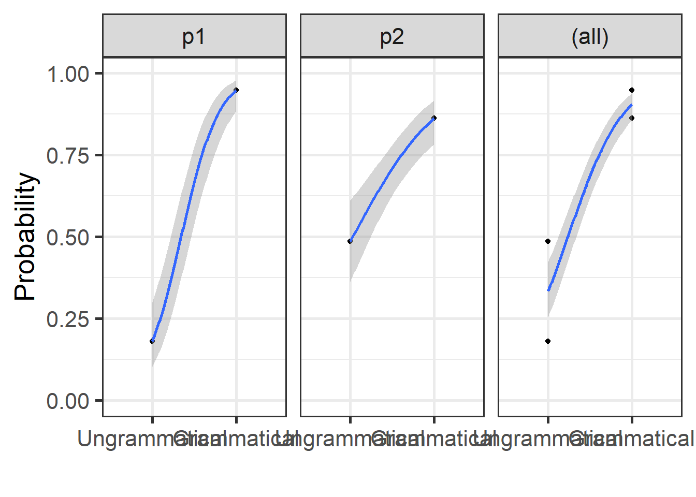
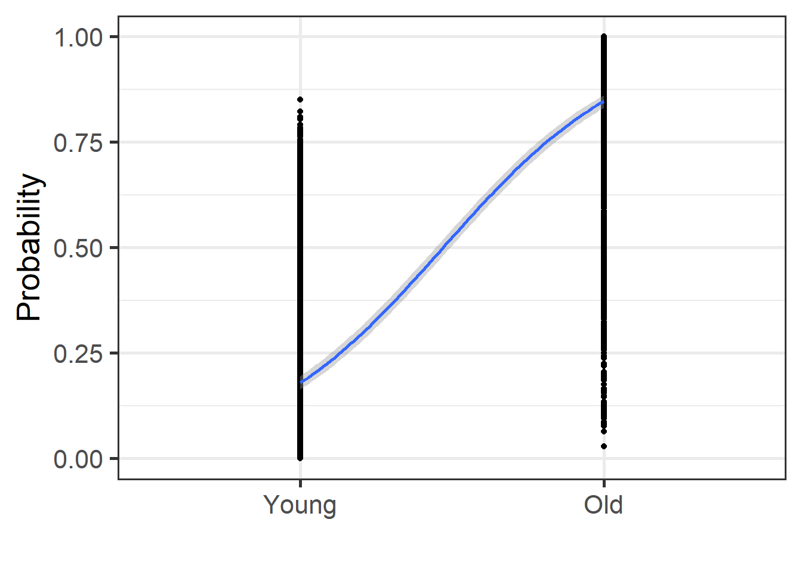
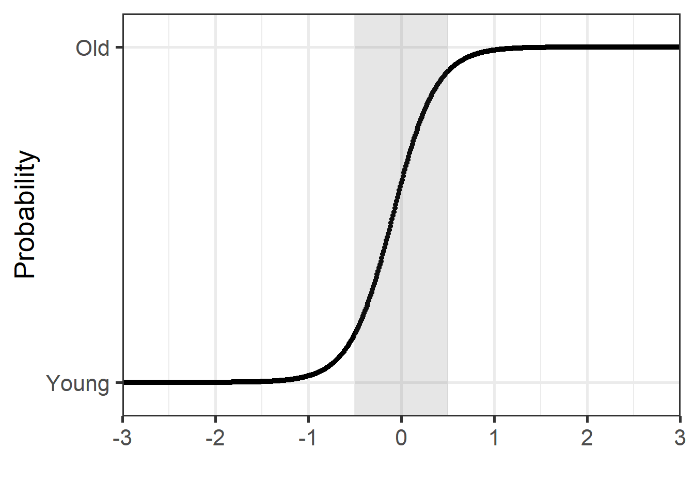

4.4 Generalised Linear Mixed-effects Models
Here we will look at an example when the outcome is binary. This simulated data is structured as follows. We asked one participant to listen to 165 sentences, and to judge whether these are “grammatical” or “ungrammatical”. There were 105 sentences that were “grammatical” and 60 “ungrammatical”. This fictitious example can apply in any other situation. Let’s think Geography: 165 lands: 105 “flat” and 60 “non-flat”, etc. This applies to any case where you need to “categorise” the outcome into two groups.
4.4.1 GLMM - Categorical predictors
Let’s run a first GLMM (Generalised Linear Model).
4.4.1.1 Simulating a new dataset
grammatical2 <- as.data.frame(
cbind("participant" = c("participant" = rep("p1", 165), rep("p2", 165)),
"grammaticality" = c("grammatical" = rep("grammatical", 105),
"ungrammatical" = rep("ungrammatical", 60),
"grammatical" = rep("grammatical", 105),
"ungrammatical" = rep("ungrammatical", 60)),
"response" = c("yes" = rep("yes", 100),
"no" = rep("no", 5),
"yes" = rep("yes", 10),
"no" = rep("no", 50),
"yes" = rep("yes", 90),
"no" = rep("no", 15),
"yes" = rep("yes", 30),
"no" = rep("no", 30))),
row.names = FALSE)
grammatical2 %>%
head(10)## participant grammaticality response
## 1 p1 grammatical yes
## 2 p1 grammatical yes
## 3 p1 grammatical yes
## 4 p1 grammatical yes
## 5 p1 grammatical yes
## 6 p1 grammatical yes
## 7 p1 grammatical yes
## 8 p1 grammatical yes
## 9 p1 grammatical yes
## 10 p1 grammatical yes4.4.1.2 Manipulations and a table
grammatical2 <- grammatical2 %>%
mutate(response = factor(response, levels = c("no", "yes")),
grammaticality = factor(grammaticality, levels = c("ungrammatical", "grammatical")))
grammatical2 %>%
select(response, grammaticality) %>%
group_by(response, grammaticality) %>%
table()## grammaticality
## response ungrammatical grammatical
## no 80 20
## yes 40 1904.4.1.3 Model estimation and results
4.4.1.3.1 Random Intercepts
The results below show the logodds for our model.
mdl.glmm <- grammatical2 %>%
glmer(response ~ grammaticality + (1|participant), data = ., family = binomial)
summary(mdl.glmm)## Generalized linear mixed model fit by maximum likelihood (Laplace
## Approximation) [glmerMod]
## Family: binomial ( logit )
## Formula: response ~ grammaticality + (1 | participant)
## Data: .
##
## AIC BIC logLik deviance df.resid
## 290.8 302.2 -142.4 284.8 327
##
## Scaled residuals:
## Min 1Q Median 3Q Max
## -3.1221 -0.6985 0.3203 0.3280 1.4317
##
## Random effects:
## Groups Name Variance Std.Dev.
## participant (Intercept) 0.005276 0.07264
## Number of obs: 330, groups: participant, 2
##
## Fixed effects:
## Estimate Std. Error z value Pr(>|z|)
## (Intercept) -0.6940 0.2006 -3.459 0.000542 ***
## grammaticalitygrammatical 2.9475 0.3060 9.632 < 2e-16 ***
## ---
## Signif. codes: 0 '***' 0.001 '**' 0.01 '*' 0.05 '.' 0.1 ' ' 1
##
## Correlation of Fixed Effects:
## (Intr)
## grmmtcltygr -0.6154.4.1.3.2 Random Slopes
The results below show the logodds for our model.
mdl.glmmSlope <- grammatical2 %>%
glmer(response ~ grammaticality + (grammaticality|participant), data = ., family = binomial)
summary(mdl.glmmSlope)## Generalized linear mixed model fit by maximum likelihood (Laplace
## Approximation) [glmerMod]
## Family: binomial ( logit )
## Formula: response ~ grammaticality + (grammaticality | participant)
## Data: .
##
## AIC BIC logLik deviance df.resid
## 280.3 299.2 -135.1 270.3 325
##
## Scaled residuals:
## Min 1Q Median 3Q Max
## -4.2750 -0.4702 0.2339 0.3998 2.1269
##
## Random effects:
## Groups Name Variance Std.Dev. Corr
## participant (Intercept) 0.5992 0.774
## grammaticalitygrammatical 1.8089 1.345 -1.00
## Number of obs: 330, groups: participant, 2
##
## Fixed effects:
## Estimate Std. Error z value Pr(>|z|)
## (Intercept) -0.7951 0.5875 -1.353 0.17593
## grammaticalitygrammatical 3.1739 1.0099 3.143 0.00167 **
## ---
## Signif. codes: 0 '***' 0.001 '**' 0.01 '*' 0.05 '.' 0.1 ' ' 1
##
## Correlation of Fixed Effects:
## (Intr)
## grmmtcltygr -0.955
## optimizer (Nelder_Mead) convergence code: 0 (OK)
## boundary (singular) fit: see help('isSingular')4.4.1.4 Model comparison
## Data: .
## Models:
## mdl.glmm: response ~ grammaticality + (1 | participant)
## mdl.glmmSlope: response ~ grammaticality + (grammaticality | participant)
## npar AIC BIC logLik deviance Chisq Df Pr(>Chisq)
## mdl.glmm 3 290.84 302.24 -142.42 284.84
## mdl.glmmSlope 5 280.25 299.25 -135.13 270.25 14.584 2 0.0006811 ***
## ---
## Signif. codes: 0 '***' 0.001 '**' 0.01 '*' 0.05 '.' 0.1 ' ' 1## Data: .
## Models:
## mdl.glmmSlope: response ~ grammaticality + (grammaticality | participant)
## mdl.glmmSlopeDec: response ~ grammaticality + (grammaticality || participant)
## npar AIC BIC logLik deviance Chisq Df Pr(>Chisq)
## mdl.glmmSlope 5 280.25 299.25 -135.13 270.25
## mdl.glmmSlopeDec 6 282.25 305.05 -135.13 270.25 0 1 1The model comparisons show that the model with both random intercepts and random slopes is improving the model fit. The Is.Singular message tells us that there is a chance there is a complete separation in the model.
4.4.1.5 Getting results
4.4.1.5.1 Model’s fit
print(tab_model(mdl.glmmSlope, file = paste0("outputs/mdl.glmmSlope.html")))
webshot(paste0("outputs/mdl.glmmSlope.html"), paste0("outputs/mdl.glmmSlope.png"))

4.4.1.5.2 Fixed effects
## (Intercept) grammaticalitygrammatical
## -0.7950773 3.1738527## (Intercept)
## -0.7950773## grammaticalitygrammatical
## 3.1738534.4.1.5.3 Random effects
## (Intercept)
## p1 -1.50933642
## p2 -0.05609396## grammaticalitygrammatical
## p1 4.414908
## p2 1.8898394.4.1.5.4 Logodds to Odd ratios
Logodds can be modified to talk about the odds of an event.
## (Intercept)
## 0.4515463## (Intercept)
## 10.791684.4.1.5.5 LogOdds to proportions
If you want to talk about the percentage “accuracy” of our model, then we can transform our loggodds into proportions. This shows that the proportion of “grammatical” receiving a “yes” response increases by 99% (or 95% based on our “true” coefficients).
## (Intercept)
## 0.3110795## (Intercept)
## 0.91519444.4.1.5.6 Plotting
grammatical2 <- grammatical2 %>%
mutate(prob = predict(mdl.glmmSlope, type = "response"))
grammatical2 %>%
ggplot(aes(x = as.numeric(grammaticality), y = prob)) +
geom_point() +
geom_smooth(method = "glm",
method.args = list(family = "binomial"),
se = T) + theme_bw(base_size = 20)+
labs(y = "Probability", x = "")+
coord_cartesian(ylim = c(0,1))+
scale_x_discrete(limits = c("Ungrammatical", "Grammatical")) +
facet_grid(~ participant, margins = TRUE, scales = "free")
4.4.2 GLMM - Numeric predictors
In this example, we will run a GLM model using a similar technique to that used in Al-Tamimi (2017) and Baumann & Winter (2018). We use the package LanguageR and the dataset English.
In the model above, we used the equation as lm(RTlexdec ~ AgeSubject). We were interested in examining the impact of age of subject on reaction time in a lexical decision task. In this section, we are interested in understanding how reaction time allows to differentiate the participants based on their age. We use AgeSubject as our outcome and RTlexdec as our predictor using the equation glm(AgeSubject ~ RTlexdec). We usually can use RTlexdec as is, but due to a possible quasi separation and the fact that we may want to compare coefficients using multiple acoustic metrics, we will z-score our predictor. We run below two models, with and without z-scoring
For the glm model, we need to specify family = "binomial".
4.4.2.1 Without z-scoring of predictor
4.4.2.1.1 Model estimation
In the english dataset, we have a random factor: “Word”. We include it here.
4.4.2.1.1.1 Random Intercepts
english2 <- english %>%
mutate(AgeSubject = factor(AgeSubject, levels = c("young", "old")))
mdl.glmm2 <- english2 %>%
glmer(AgeSubject ~ RTlexdec + (1|Word), data = ., family = "binomial")
summary(mdl.glmm2)## Generalized linear mixed model fit by maximum likelihood (Laplace
## Approximation) [glmerMod]
## Family: binomial ( logit )
## Formula: AgeSubject ~ RTlexdec + (1 | Word)
## Data: .
##
## AIC BIC logLik deviance df.resid
## 3151.8 3171.1 -1572.9 3145.8 4565
##
## Scaled residuals:
## Min 1Q Median 3Q Max
## -26.3468 -0.3058 -0.0166 0.3893 4.0750
##
## Random effects:
## Groups Name Variance Std.Dev.
## Word (Intercept) 0 0
## Number of obs: 4568, groups: Word, 2197
##
## Fixed effects:
## Estimate Std. Error z value Pr(>|z|)
## (Intercept) -128.6308 3.7884 -33.95 <2e-16 ***
## RTlexdec 19.6497 0.5785 33.97 <2e-16 ***
## ---
## Signif. codes: 0 '***' 0.001 '**' 0.01 '*' 0.05 '.' 0.1 ' ' 1
##
## Correlation of Fixed Effects:
## (Intr)
## RTlexdec -1.000
## optimizer (Nelder_Mead) convergence code: 0 (OK)
## boundary (singular) fit: see help('isSingular')4.4.2.1.1.2 Random Slopes
mdl.glmmSlope2 <- english2 %>%
glmer(AgeSubject ~ RTlexdec + (RTlexdec|Word), data = ., family = "binomial")
summary(mdl.glmmSlope2)## Generalized linear mixed model fit by maximum likelihood (Laplace
## Approximation) [glmerMod]
## Family: binomial ( logit )
## Formula: AgeSubject ~ RTlexdec + (RTlexdec | Word)
## Data: .
##
## AIC BIC logLik deviance df.resid
## 3075.6 3107.7 -1532.8 3065.6 4563
##
## Scaled residuals:
## Min 1Q Median 3Q Max
## -2.3922 -0.2133 -0.0024 0.2512 5.8062
##
## Random effects:
## Groups Name Variance Std.Dev. Corr
## Word (Intercept) 3325.82 57.670
## RTlexdec 80.02 8.945 -1.00
## Number of obs: 4568, groups: Word, 2197
##
## Fixed effects:
## Estimate Std. Error z value Pr(>|z|)
## (Intercept) -179.982 10.844 -16.60 <2e-16 ***
## RTlexdec 27.536 1.663 16.56 <2e-16 ***
## ---
## Signif. codes: 0 '***' 0.001 '**' 0.01 '*' 0.05 '.' 0.1 ' ' 1
##
## Correlation of Fixed Effects:
## (Intr)
## RTlexdec -1.000
## optimizer (Nelder_Mead) convergence code: 0 (OK)
## boundary (singular) fit: see help('isSingular')4.4.2.2 Model comparison
## Data: .
## Models:
## mdl.glmm2: AgeSubject ~ RTlexdec + (1 | Word)
## mdl.glmmSlope2: AgeSubject ~ RTlexdec + (RTlexdec | Word)
## npar AIC BIC logLik deviance Chisq Df Pr(>Chisq)
## mdl.glmm2 3 3151.8 3171.1 -1572.9 3145.8
## mdl.glmmSlope2 5 3075.6 3107.7 -1532.8 3065.6 80.262 2 < 2.2e-16 ***
## ---
## Signif. codes: 0 '***' 0.001 '**' 0.01 '*' 0.05 '.' 0.1 ' ' 1The model comparisons show that the model with both random intercepts and random slopes is improving the model fit. The Is.Singular message tells us that there is a chance there is a complete separation in the model.
4.4.2.3 Gettings results
4.4.2.3.1 Model’s fit
print(tab_model(mdl.glmmSlope2, file = paste0("outputs/mdl.glmmSlope2.html")))
webshot(paste0("outputs/mdl.glmmSlope2.html"), paste0("outputs/mdl.glmmSlope2.png"))
4.4.2.3.2 Fixed effects
## (Intercept) RTlexdec
## -179.98178 27.53577## (Intercept)
## -179.9818## RTlexdec
## 27.535774.4.2.3.3 Random effects
## (Intercept)
## ace -183.90776
## act -194.45457
## add -188.40529
## age -187.46602
## aid -181.03676
## aide -158.07546
## ail -123.55201
## aim -190.10611
## air -200.14655
## aisle -174.27440
## ale -180.30666
## angst -165.78837
## ant -191.29113
## ape -187.24397
## arc -126.77934
## arch -184.42864
## are -182.46789
## arm -217.59396
## art -189.05001
## ash -182.98402
## ask -196.70599
## ass -183.23781
## axe -181.95124
## babe -188.70455
## back -195.42264
## badge -183.01773
## bag -199.54566
## bail -168.15145
## bait -190.95684
## bale -121.78643
## ball -187.58214
## ban -150.32554
## band -182.62624
## bang -196.74016
## bank -193.70777
## bar -200.25447
## bard -117.84651
## barge -141.73094
## bark -196.61786
## barn -200.39311
## base -192.56776
## bash -180.80182
## bat -199.64642
## batch -189.94941
## bath -193.82628
## bay -189.46610
## beach -185.19211
## bead -168.42508
## beak -133.17533
## beam -180.59204
## bean -182.08005
## bear -213.08213
## beard -196.58843
## beast -181.77517
## beat -189.71715
## beau -154.41259
## beck -91.17779
## bed -188.54920
## bee -198.73898
## beech -126.52894
## beef -211.38980
## beep -190.22173
## beer -198.76116
## beet -173.59121
## beg -200.94855
## belch -155.10366
## bell -195.09871
## belt -187.26680
## bench -200.15122
## bend -198.79225
## berth -157.88269
## bet -201.03586
## bib -167.68969
## bid -201.08242
## bide -89.33316
## bile -166.74761
## bilge -99.15973
## bill -189.36935
## bin -159.06281
## bind -150.49914
## binge -173.11929
## birch -158.44489
## bird -192.34857
## bit -197.94657
## bitch -186.76209
## bite -200.33166
## blade -194.38192
## blame -188.93757
## blanch -125.38802
## blast -186.24516
## blaze -194.63459
## bleat -157.35832
## bleed -185.28573
## bleep -132.46431
## blend -191.20555
## bless -186.61790
## blight -165.14597
## blink -180.49835
## bliss -198.34894
## blitz -171.79864
## bloat -177.86154
## blob -171.54134
## block -192.29353
## bloke -115.79879
## blood -189.62362
## bloom -196.43572
## blot -184.07642
## blouse -172.70023
## blow -194.93241
## bluff -194.80589
## blur -180.40753
## blush -200.80802
## boar -143.98150
## board -193.40628
## boast -190.16779
## boat -200.63254
## bob -143.95602
## bog -163.01272
## boil -187.41939
## bolt -201.13102
## bomb -187.15135
## bond -193.50303
## bone -199.94860
## boo -183.41435
## book -182.65198
## boom -182.32035
## boon -136.22269
## boost -180.50367
## boot -191.30296
## booth -197.22323
## booze -185.34479
## bore -184.45783
## boss -193.25358
## bough -96.02172
## bounce -200.88614
## bound -185.03572
## bout -140.82723
## bowl -185.48747
## box -181.85710
## boy -197.94423
## brace -188.09233
## brad -93.89402
## brag -188.95953
## braid -179.85692
## brain -195.29456
## brake -200.99665
## bran -84.22121
## branch -183.73060
## brand -185.22770
## brass -198.41534
## brat -182.01284
## brawl -174.25587
## brawn -82.04738
## breach -140.03000
## bread -200.46675
## break -190.42492
## breast -183.88426
## breath -188.84755
## breed -189.48651
## breeze -199.04630
## brew -192.14081
## bribe -192.44488
## brick -183.68557
## bride -193.32661
## bridge -182.66883
## brig -87.00151
## brim -156.28582
## bring -199.98191
## brink -165.33112
## broach -101.67549
## broad -184.14895
## broil -188.83820
## bronze -194.91205
## brooch -144.85346
## brood -111.85681
## brook -138.60391
## broom -200.65889
## broth -105.41129
## brow -168.13100
## bruise -184.30772
## brunt -135.10122
## brush -183.22538
## brute -178.24415
## buck -171.40527
## bud -198.25830
## budge -180.94636
## buff -178.06142
## bug -200.45878
## build -195.50082
## bulb -190.58822
## bulge -181.62249
## bulk -201.21552
## bull -192.23221
## bum -185.53536
## bump -180.65945
## bun -181.02120
## bunch -194.60627
## bunk -148.84487
## burn -187.44886
## burr -149.28913
## burst -184.95211
## bus -195.89108
## bush -187.16793
## bust -192.72182
## butt -185.85947
## buy -197.22844
## buzz -191.01501
## cab -189.31613
## cad -94.64517
## cage -196.05424
## cake -197.79674
## calf -189.19558
## call -199.38555
## cam -179.76552
## camp -186.85112
## can -194.03667
## cane -182.10273
## cant -165.08992
## cap -189.91569
## cape -185.06376
## car -199.85206
## card -187.44078
## care -187.49614
## cart -183.79131
## carve -187.96762
## case -183.55257
## cash -199.32797
## cask -150.36318
## cast -191.30209
## caste -146.56814
## cat -191.56902
## catch -200.54221
## cause -191.64347
## cave -194.45939
## cease -181.37514
## cell -186.90735
## cent -184.33710
## chafe -75.51464
## chain -181.65866
## chair -200.40633
## chaise -100.81468
## chalk -196.17895
## champ -191.67067
## chance -200.93359
## change -192.45574
## chant -185.03633
## chap -177.44186
## char -68.46728
## charge -194.79717
## charm -200.86903
## chart -197.81362
## chase -200.24683
## chat -189.45847
## cheat -190.40003
## check -198.39552
## cheek -184.49146
## cheer -200.34968
## cheese -193.36929
## chef -196.11507
## chess -188.22623
## chest -189.05809
## chew -198.32827
## chide -91.71164
## chief -192.85599
## child -195.19247
## chime -184.57761
## chin -181.01273
## chip -199.00717
## chive -123.44139
## choice -197.97385
## choir -192.00817
## choke -186.05679
## chomp -121.11975
## choose -193.95068
## chop -218.64180
## chord -171.56471
## chore -176.05257
## chow -129.50790
## chrome -172.35644
## chuck -108.07045
## chum -94.27259
## chump -146.09843
## chunk -181.15852
## church -198.07927
## churn -168.15218
## chute -135.57657
## cinch -132.48831
## cite -169.39572
## claim -183.59583
## clam -183.38010
## clamp -180.45331
## clan -150.00352
## clang -173.81246
## clap -207.24468
## clash -181.86427
## class -193.98398
## clause -133.02085
## claw -187.57636
## clay -196.65321
## cleat -83.63704
## clench -142.35200
## clerk -183.34398
## click -190.02482
## cliff -195.01356
## climb -199.07981
## clinch -122.08333
## cling -187.60271
## clip -218.89642
## cloak -184.24618
## clock -194.98176
## clod -130.05894
## clog -147.25144
## clot -180.14036
## cloth -184.46696
## cloud -187.56032
## clout -174.14048
## clove -131.16563
## clown -196.04216
## club -180.83439
## cluck -124.64097
## clump -139.14278
## clutch -185.25173
## coach -198.34298
## coal -200.14421
## coast -199.03812
## coat -184.64423
## coax -170.24051
## cock -178.45989
## cod -174.57893
## code -180.97699
## coil -181.77485
## coin -193.51570
## coke -187.51215
## colt -164.12332
## comb -194.19709
## come -191.11328
## cone -180.49897
## cook -194.54721
## coop -132.64994
## cop -187.59422
## cope -190.58771
## cord -196.17788
## core -188.10713
## cork -199.57525
## corn -192.91105
## corps -164.00546
## corpse -189.23383
## cost -195.37188
## cot -156.64183
## couch -197.45375
## cough -187.03400
## count -217.84439
## coup -130.69607
## coupe -131.78326
## course -192.21499
## court -199.68428
## cove -174.66528
## cow -207.93774
## cowl -79.16083
## cox -185.93055
## crab -187.65873
## crack -190.65825
## craft -190.62284
## crag -133.96326
## cram -171.49784
## cramp -183.33737
## crane -179.96127
## crank -181.54476
## crap -186.18848
## crash -199.75655
## crate -160.10152
## crave -180.76513
## crawl -190.86686
## craze -184.42997
## creak -180.55402
## cream -190.42750
## crease -141.98068
## creed -187.18439
## creek -182.42464
## creep -193.43681
## crepe -126.11991
## crest -182.43514
## crew -191.06678
## crime -181.11229
## croak -161.39077
## crone -165.66430
## crook -191.27538
## croon -78.44507
## crop -192.24579
## cross -188.28862
## crouch -180.25670
## crow -194.60217
## crowd -184.34189
## crown -196.04220
## crumb -196.52036
## crunch -180.84294
## crush -195.22297
## crust -200.54086
## crutch -179.71824
## crux -100.85969
## cry -189.14383
## crypt -178.51313
## cub -175.90183
## cube -197.38550
## cud -96.53158
## cue -187.12255
## cuff -155.37481
## cull -140.84197
## cult -178.17050
## cup -198.20381
## cur -180.14220
## curb -180.74653
## curd -146.87202
## cure -183.57117
## curl -196.35741
## curse -192.69687
## curve -194.28417
## cusp -149.77884
## cut -199.68140
## cyst -89.16627
## czar -91.18201
## dad -196.62687
## dale -105.53080
## dam -173.80502
## dame -162.49447
## damn -181.66984
## damp -209.91524
## dance -200.63350
## dare -200.39678
## darn -168.02303
## dash -190.99792
## date -183.79672
## daunt -133.97395
## dawn -190.14274
## deal -201.01305
## dean -168.18698
## dearth -148.41153
## debt -193.93424
## deck -201.15351
## deed -191.01748
## deem -91.13059
## deer -196.33441
## dell -80.69729
## den -180.44206
## dent -180.65460
## desk -201.03839
## dial -183.48754
## dice -188.75907
## die -189.10398
## dig -197.56301
## dike -94.58223
## dill -137.67805
## dime -182.62497
## din -177.53698
## dine -165.61757
## dint -57.00708
## dip -191.20263
## dirge -163.84754
## dirt -196.81970
## disc -180.40210
## dish -209.01282
## ditch -181.87281
## dive -185.07526
## do -195.03195
## dock -215.99425
## dodge -184.76414
## doe -161.63540
## dog -194.18593
## dole -171.96823
## doll -181.98985
## dome -179.91847
## doom -181.66723
## door -198.07298
## dope -183.56982
## dose -182.10985
## doubt -191.72028
## dough -190.01210
## douse -87.93395
## draft -185.62105
## drag -199.16808
## drain -186.91511
## drake -128.99529
## dram -61.66539
## drape -170.05668
## draught -176.00914
## draw -186.86721
## drawl -181.59380
## dread -176.27081
## dream -200.44539
## dress -189.73688
## drift -180.27567
## drill -195.81584
## drink -198.81538
## drip -198.69558
## drive -197.67332
## drone -178.41107
## droop -122.89927
## drop -191.56966
## dross -176.58039
## drought -167.63300
## drove -176.16563
## drown -181.05632
## drum -194.36015
## duck -216.69321
## duct -126.54744
## dud -129.74886
## duel -188.71290
## dug -186.28140
## duke -180.96634
## dump -191.35371
## dun -180.28224
## dune -177.33647
## dung -98.89053
## dunk -151.71108
## dusk -190.12338
## dust -199.54488
## dwarf -180.77639
## dwell -172.50677
## ear -196.88458
## earl -157.49061
## earn -187.52410
## earth -195.82854
## ease -180.98571
## east -171.11911
## eat -189.96019
## ebb -139.52056
## edge -194.51483
## eel -161.25194
## egg -199.67435
## elk -181.43964
## elm -182.60264
## end -181.59182
## err -117.43465
## eve -181.61854
## ewe -114.59148
## face -197.99608
## fact -199.51848
## fad -169.12185
## fade -188.70162
## fail -180.56915
## fair -192.27750
## faith -200.83010
## fake -183.15010
## fame -180.32491
## fan -181.44716
## fang -153.91719
## farce -128.83806
## fare -176.54780
## farm -200.43883
## fast -195.47460
## fate -199.77333
## fault -195.76011
## fawn -169.78247
## faze -161.38054
## fear -199.41663
## feast -198.80391
## feat -171.81505
## fee -176.63422
## feed -187.77829
## feel -200.76411
## feint -146.21940
## fell -217.54130
## fen -160.55365
## fence -193.26226
## fern -133.64221
## fetch -196.10774
## feud -177.24304
## fiend -100.05957
## fife -95.12441
## fig -178.07198
## fight -182.32678
## file -191.68298
## fill -175.69022
## film -192.12838
## filth -164.74055
## fin -177.11140
## find -189.25762
## fine -181.82768
## fink -128.19948
## fir -160.69380
## fire -199.87151
## firm -197.81325
## fish -198.31088
## fist -160.05657
## fix -199.20133
## flag -198.46653
## flail -84.08911
## flair -167.02470
## flake -177.86160
## flame -194.72642
## flange -77.78553
## flank -165.52281
## flare -193.76195
## flask -186.04431
## flaw -185.49640
## flax -150.47989
## flea -186.79701
## fleck -114.79172
## flee -179.90131
## fleet -177.65377
## flesh -190.19863
## flex -186.41439
## flick -178.21650
## flight -181.29509
## fling -183.60709
## flint -179.31773
## flip -182.12297
## flirt -195.48683
## float -184.83855
## flock -187.60856
## floe -124.83784
## flog -172.29034
## flood -201.00841
## floor -194.93700
## flop -166.74694
## flour -196.72720
## flow -180.73565
## fluff -182.39018
## fluke -183.47267
## flush -189.89304
## flute -182.08733
## flux -167.27228
## fly -217.99660
## foal -146.96353
## foam -186.61034
## foe -186.51632
## fog -185.99090
## foil -186.45699
## fold -199.15207
## folk -191.49950
## font -128.39279
## food -192.46590
## fool -200.77304
## foot -198.20655
## force -181.76188
## ford -154.80311
## forge -158.95806
## fork -196.29272
## form -182.60000
## fort -148.53727
## found -198.75290
## fowl -199.62769
## fox -200.83883
## frame -176.34157
## fraud -167.72305
## fray -150.17184
## freak -190.49714
## freeze -184.41239
## freight -175.59073
## fret -118.61738
## friend -192.71831
## frieze -151.34910
## fright -180.90010
## frill -167.57301
## fringe -176.32362
## frock -139.43323
## frog -193.45852
## front -198.21893
## frost -182.99521
## froth -108.04855
## frown -180.46154
## fruit -197.52202
## fry -207.23874
## fuel -198.32902
## full -194.13844
## fun -192.26367
## fund -182.25458
## funk -175.44376
## fur -193.97757
## fuse -177.02037
## fuss -182.68795
## fuzz -149.71995
## gab -142.05703
## gag -153.90268
## gain -181.93794
## gait -128.41766
## gal -123.49022
## gale -156.99493
## gall -157.17628
## game -198.28157
## gang -185.17037
## gap -189.97783
## garb -113.91545
## gas -180.65770
## gash -105.17247
## gasp -180.73363
## gate -177.42977
## gauge -141.47244
## gauze -135.20616
## gay -181.83768
## gaze -176.88846
## gear -195.62776
## gel -176.01869
## gem -184.62028
## gene -162.34673
## get -192.15081
## ghost -192.79207
## ghoul -116.12749
## gibe -152.77701
## gift -200.60785
## gig -121.14863
## gill -77.93180
## gilt -138.13194
## gin -181.24383
## gird -179.93914
## girl -185.41536
## gist -129.11462
## give -200.42182
## glance -187.06683
## gland -181.50559
## glare -199.91039
## glass -199.48386
## glaze -186.50837
## gleam -149.70677
## glean -78.15065
## glee -160.76921
## glen -138.05514
## glide -179.37896
## glimpse -181.60765
## glint -159.28433
## gloat -147.86467
## globe -175.12649
## gloom -192.23458
## gloss -197.04926
## glove -181.16396
## glow -180.92362
## glue -190.64998
## gnaw -148.13632
## gnome -105.86856
## go -187.69820
## goad -175.42709
## goal -196.93778
## goat -187.41485
## gob -92.92819
## god -180.44511
## gold -181.47532
## golf -179.63369
## gong -136.75782
## goon -82.58541
## goose -181.13707
## gore -113.73462
## gouge -113.02240
## gourd -112.04514
## gout -141.88447
## gown -176.09163
## grab -182.01059
## grace -192.65392
## grade -186.62378
## graft -154.77986
## grail -114.55539
## grain -184.09926
## gram -146.18962
## grant -191.43681
## grape -189.60498
## graph -185.84148
## grasp -185.27063
## grass -182.52550
## grate -166.38300
## grave -191.07489
## graze -176.97921
## grease -182.23877
## greed -186.00683
## greet -131.94870
## grid -179.17263
## grill -181.08464
## grille -98.32917
## grime -163.38589
## grin -174.34778
## grind -186.01278
## grip -180.26225
## gripe -149.76300
## grist -104.85330
## grit -133.28056
## groan -183.79856
## groin -159.07166
## groom -193.54147
## groove -183.85838
## grope -147.93061
## grouch -162.22821
## ground -197.96367
## group -190.42400
## grouse -157.99461
## grove -162.20972
## grow -201.06879
## growl -182.43875
## grub -121.92477
## grudge -175.96582
## grunt -177.67296
## guard -200.05508
## guess -187.26762
## guest -189.15518
## guide -200.89102
## guild -144.09334
## guile -126.39113
## guilt -182.63307
## guise -143.77042
## gulf -167.56244
## gull -120.08746
## gulp -185.42134
## gum -181.88181
## gun -192.22606
## gush -162.54552
## gust -151.78400
## gut -175.50270
## guy -184.26625
## gyp -146.46260
## hack -178.47201
## hag -179.76860
## hail -199.05713
## hair -182.40440
## hall -187.63737
## halt -199.93440
## ham -200.91272
## hand -199.44300
## hang -194.70523
## hank -174.77820
## hark -176.38898
## harm -183.11689
## harp -193.61770
## hart -168.52298
## hash -176.21070
## haste -197.95952
## hat -187.99996
## hatch -193.39013
## hate -200.45994
## haul -200.91309
## haunt -157.99557
## have -196.13374
## haw -174.20184
## hawk -185.90844
## hay -200.81659
## haze -187.56711
## head -200.95065
## heal -187.82637
## heap -186.46816
## hear -194.58825
## heart -199.27168
## hearth -180.75082
## heat -195.54712
## heave -165.81561
## heck -172.11115
## hedge -173.64629
## heed -169.91315
## heel -185.83652
## height -188.06270
## heir -187.25505
## hell -188.73521
## helm -123.79799
## help -201.02214
## hem -162.33993
## hen -181.49165
## herb -178.17613
## herd -185.35136
## hick -177.52907
## hide -218.47381
## hike -193.76467
## hill -199.53457
## hilt -176.98207
## hind -176.80656
## hinge -180.36333
## hint -194.41337
## hip -198.84438
## hire -191.31393
## hiss -162.03547
## hit -187.51928
## hitch -148.42114
## hive -171.91301
## hob -181.48655
## hoe -188.72415
## hog -215.54785
## hoist -182.30741
## hold -196.56260
## hole -197.40397
## home -185.23603
## hone -99.91065
## hooch -178.10033
## hood -194.60744
## hoof -184.51004
## hook -187.10609
## hoop -182.79374
## hoot -185.04038
## hop -187.04219
## hope -196.63417
## horn -200.20181
## horse -177.64376
## hose -186.41011
## host -195.40942
## hound -183.14077
## hour -185.18649
## house -186.10170
## howl -195.11135
## hub -159.86199
## hue -182.83397
## huff -178.46362
## hug -196.04827
## hulk -193.74857
## hull -179.02235
## hum -180.51871
## hump -155.68008
## hunch -171.43781
## hunk -182.50224
## hunt -193.42479
## hurl -192.87371
## hurt -192.77646
## hush -181.81530
## hut -199.93874
## hymn -179.71005
## ice -200.58409
## inch -195.52415
## ink -201.03182
## inn -182.08051
## ire -174.74626
## isle -166.65217
## itch -152.99956
## jab -163.82319
## jack -194.88670
## jade -177.90408
## jag -169.33462
## jail -199.85260
## jam -199.41970
## jape -180.12609
## jar -190.69130
## jaw -191.43740
## jazz -188.98031
## jeep -197.29404
## jeer -182.32562
## jerk -191.06566
## jest -179.71464
## jet -194.42703
## jig -181.90690
## job -180.72085
## jog -200.75014
## join -182.71119
## joke -200.78518
## jolt -181.87934
## jot -175.23196
## joust -169.66428
## jowl -146.81461
## joy -187.00750
## judge -192.83135
## jug -194.24062
## juice -200.69489
## jump -187.23569
## junk -197.85214
## jute -112.79855
## kale -100.18204
## keel -177.50642
## keen -177.06353
## keep -189.54246
## keg -190.13569
## kelp -97.03173
## ken -173.00860
## key -181.65683
## kick -184.69124
## kid -203.26944
## kill -200.79731
## kilt -133.20379
## kin -179.01597
## kind -188.54436
## king -195.66996
## kiss -199.95055
## kit -183.92221
## kite -196.93358
## knack -123.44894
## knead -183.50136
## knee -199.65518
## kneel -178.31531
## knife -199.20358
## knight -186.50138
## knit -192.80564
## knob -197.85029
## knock -194.47961
## knoll -151.90435
## knot -199.87526
## know -197.81648
## lace -200.42403
## lack -187.83794
## lad -190.75229
## lag -180.62496
## lake -200.78878
## lamb -183.68986
## lame -200.64097
## lamp -196.93521
## lance -145.86955
## land -195.33904
## lane -197.30787
## lap -216.39370
## lapse -186.92158
## lard -177.87037
## lark -184.39904
## lash -183.76398
## lass -106.43657
## last -176.24079
## latch -186.71739
## lath -71.30997
## lathe -178.61366
## laugh -187.55615
## launch -184.23245
## law -195.24915
## lawn -180.29333
## lay -191.58954
## laze -180.34459
## leaf -193.94299
## leak -200.79295
## lean -192.27361
## leap -181.09032
## learn -158.31955
## lease -200.55336
## leash -199.66177
## leave -196.84012
## ledge -181.67694
## lee -142.13627
## leg -179.99213
## lend -199.25145
## lens -183.66361
## let -180.71319
## lick -189.41067
## lid -192.57556
## lie -196.61246
## life -199.72118
## lift -192.01288
## light -200.24867
## like -199.73483
## lilt -181.08851
## limb -196.88322
## lime -184.93346
## limp -190.26021
## line -171.59743
## link -186.96872
## lint -175.89184
## lip -200.54900
## lisle -72.67285
## list -193.42152
## load -196.30467
## loaf -195.46266
## loan -193.83223
## lob -163.11450
## lobe -162.58007
## lock -198.67345
## lodge -195.13789
## loft -178.98127
## log -185.22264
## loin -180.45879
## look -200.89554
## loom -151.07823
## loon -152.26808
## loop -198.47387
## loot -184.21607
## lop -178.76862
## lope -179.87871
## lord -201.15526
## lore -173.12060
## lose -186.88872
## loss -194.38559
## lot -198.80746
## lounge -182.29429
## louse -138.15459
## love -200.33472
## low -198.62120
## luck -190.81575
## lug -185.59390
## lull -153.65995
## lump -196.41733
## lung -180.98315
## lurch -122.99618
## lure -181.36005
## lurk -179.32530
## lust -182.89346
## lute -180.48364
## lye -113.39492
## lymph -143.73798
## lynch -171.52201
## maid -198.10202
## mail -184.84420
## make -200.81057
## mall -180.99670
## malt -190.31722
## man -200.79842
## mane -178.15420
## manse -179.99866
## map -200.89200
## mar -152.80872
## march -208.94564
## mare -153.04982
## mark -183.89186
## marsh -151.77202
## mart -156.16606
## mash -182.90256
## mask -200.03503
## mass -183.25365
## mast -184.30155
## mat -182.98203
## match -193.21759
## mate -189.31613
## maw -180.44431
## may -185.47078
## maze -188.61024
## mead -165.20480
## meal -200.22316
## mean -182.44018
## meat -185.86219
## meet -195.91781
## meld -181.95634
## melt -197.26108
## mend -185.49567
## merge -185.13848
## mesh -185.50883
## mess -176.37954
## mew -93.25643
## might -182.50710
## mile -190.53122
## milk -188.72478
## mill -175.77808
## mime -117.24028
## mince -124.07590
## mind -199.74971
## mine -181.30151
## mink -143.48029
## mint -188.98146
## mirth -160.28103
## miss -189.59922
## mist -193.40644
## mite -140.20687
## mitt -162.01565
## mix -195.93306
## moan -180.78511
## mob -198.98697
## mock -182.82442
## mode -176.03824
## mole -191.68994
## moll -134.16866
## mom -193.88161
## monk -195.70558
## month -198.53799
## moo -169.35126
## mood -187.67196
## moon -181.15742
## moose -185.85754
## moot -154.24972
## mop -193.99335
## moss -186.95587
## moth -144.24018
## mould -154.46991
## mount -194.35126
## mourn -192.96273
## mouse -186.28466
## mouth -196.55173
## move -195.40548
## mow -170.09059
## muck -127.07716
## mud -199.68234
## muff -157.43955
## mug -197.36445
## mulch -158.18110
## mule -182.71438
## mum -145.17216
## munch -161.30973
## muse -146.61400
## mush -160.07165
## must -191.94940
## myth -180.65037
## nab -129.49138
## nail -181.13263
## name -181.10701
## nap -182.98158
## nape -152.35962
## naught -116.73067
## neck -193.98064
## need -198.85568
## nerve -180.75155
## nest -188.23691
## news -195.08565
## newt -154.34450
## nick -110.02816
## niece -182.17710
## night -183.06353
## nil -90.11638
## nip -152.17471
## nod -178.18924
## node -168.31304
## noise -194.50656
## nonce -178.07299
## nook -127.53751
## noon -180.34790
## noose -175.12152
## norm -180.74429
## north -186.63323
## nose -183.30641
## notch -175.82729
## note -181.16158
## noun -158.11126
## nudge -161.41658
## nun -180.75398
## nurse -182.95204
## nut -198.20844
## nymph -176.23081
## oak -200.35204
## oath -181.48876
## oil -200.79183
## ooze -169.22385
## orb -106.54477
## ore -162.97176
## ought -180.08389
## ounce -180.72398
## oust -120.36876
## owl -200.71143
## pace -186.45393
## pack -200.04009
## pact -194.62972
## pad -196.85612
## page -199.02123
## pail -181.89543
## pain -187.33099
## paint -200.79372
## pair -200.91805
## pal -198.67100
## pale -200.27836
## pall -180.42583
## palm -197.92008
## pan -193.49794
## pane -173.64050
## pang -113.91659
## pant -194.06644
## pap -155.08679
## par -150.55519
## pare -141.23850
## park -195.30269
## part -197.76537
## pass -185.08967
## paste -193.96521
## pat -201.02364
## patch -195.48943
## pate -180.54372
## path -199.13412
## paunch -128.71626
## pause -195.08833
## pave -176.88708
## paw -185.48053
## pawn -181.30730
## pay -200.19998
## pea -200.72058
## peace -193.35881
## peach -183.59836
## peak -192.53136
## peal -180.74292
## pear -193.75113
## pearl -200.70668
## peat -149.20118
## peck -191.99567
## pee -178.43180
## peel -193.01186
## peep -182.76796
## peer -194.61795
## peg -190.33195
## pelt -132.93331
## pen -194.92188
## perch -163.05119
## perk -180.57328
## pest -179.61894
## pet -198.62210
## pew -144.58413
## phase -181.11353
## phrase -181.60743
## pick -196.88454
## pie -198.30324
## piece -187.94151
## pier -181.77981
## pierce -181.03453
## pig -200.72767
## pike -192.16391
## pile -201.09579
## pill -182.88368
## pimp -182.37740
## pin -181.37798
## pinch -181.51885
## pine -196.79858
## pint -179.79410
## pip -141.24337
## pipe -200.79619
## piss -180.39116
## pit -189.27139
## pitch -192.42648
## pith -156.22558
## place -200.16786
## plaid -195.06824
## plain -180.30948
## plan -199.75419
## plane -180.41528
## plank -165.79832
## plant -186.87844
## plate -193.70926
## play -199.25375
## plea -187.86272
## plead -197.54261
## please -200.60774
## pleat -139.96225
## pledge -183.61883
## plod -128.38136
## plot -199.69636
## plough -168.01449
## pluck -187.02162
## plug -184.81144
## plum -201.15302
## plume -147.75713
## plunge -186.43894
## plush -190.67431
## poach -130.40651
## pod -175.41893
## point -199.14275
## poise -182.14904
## poke -186.77514
## pole -189.43052
## poll -186.57316
## pomp -174.66930
## pond -189.41628
## pool -200.77474
## pop -195.60713
## pope -198.79012
## porch -185.46256
## pore -161.30388
## pork -198.89645
## port -172.58874
## pose -189.28006
## post -189.02540
## pot -199.61984
## pouch -181.27133
## pound -217.76068
## pour -187.31210
## pout -145.10550
## praise -189.95967
## prank -186.43646
## pray -191.63196
## preach -153.30348
## prep -171.84473
## press -192.29039
## prey -189.16333
## price -201.04648
## prick -180.63776
## pride -200.82607
## priest -173.18951
## prime -191.51290
## prince -180.70838
## print -200.01566
## prize -194.75675
## probe -185.77000
## prod -125.66610
## prop -162.65699
## prose -167.59805
## prove -176.96416
## prow -146.63599
## prowl -184.17609
## pry -168.89408
## psalm -148.82561
## pub -193.56457
## puck -178.14958
## puff -185.97143
## puke -160.15448
## pull -191.09524
## pulp -184.67848
## pulse -197.74596
## pump -186.66890
## pun -152.62061
## punch -193.28750
## punk -190.09034
## punt -179.36409
## pup -191.98396
## purge -182.04660
## purse -184.90406
## pus -169.22551
## push -180.66430
## put -186.90461
## putt -177.24200
## pyre -132.51120
## quack -182.74379
## quake -170.45181
## quart -179.26023
## quartz -182.25847
## quay -180.65000
## queen -185.98761
## quell -90.45871
## quench -165.11418
## quest -180.61133
## queue -123.85767
## quill -175.44607
## quince -102.66295
## quirk -177.83555
## quiz -183.30973
## quote -191.33339
## race -198.11922
## rack -183.32520
## raft -178.53173
## rag -182.64652
## rage -199.89733
## raid -197.15954
## rail -183.16008
## rain -194.15754
## raise -187.57629
## rake -194.48685
## ram -155.21145
## ranch -199.36822
## range -193.21072
## rank -181.84742
## rant -150.87287
## rap -184.78441
## rape -187.57698
## rash -198.11851
## rasp -153.50555
## rat -198.04205
## rate -189.99551
## rave -186.42648
## ray -180.91852
## reach -200.87469
## realm -182.55365
## ream -109.76453
## reap -167.11023
## rear -193.66581
## reed -155.95242
## reef -143.87706
## reek -166.25873
## reel -146.38513
## reign -179.87046
## rein -144.30934
## rend -179.97141
## rent -190.18968
## rest -200.14264
## retch -75.93166
## rhyme -179.63665
## rib -196.18083
## rice -200.77666
## ride -185.69762
## ridge -178.83835
## rift -156.90706
## rig -170.59727
## right -197.73224
## rile -126.35533
## rim -183.34877
## rime -97.32133
## rind -157.11301
## ring -205.13200
## rink -153.40195
## rinse -194.99841
## rip -182.49707
## rise -200.97806
## risk -191.45424
## rite -161.96440
## roach -185.44022
## road -200.40382
## roam -188.26981
## roar -192.20076
## roast -182.36838
## rob -187.81959
## robe -182.55290
## rock -214.41478
## rod -188.00024
## roe -152.55265
## role -190.78220
## roll -181.86749
## romp -167.51798
## roof -200.65048
## rook -138.88836
## room -201.13231
## roost -188.87723
## root -195.84593
## rope -193.25739
## rose -199.25173
## rot -182.31661
## rouse -109.79874
## rout -142.80709
## rove -102.46924
## rub -200.95758
## rue -158.31149
## rug -192.37372
## rule -195.91816
## rum -186.37756
## rump -177.00423
## run -182.39645
## rung -155.71727
## runt -118.32982
## ruse -125.97780
## rush -195.98741
## rust -186.47904
## rut -161.82861
## rye -178.07725
## sack -181.38612
## sag -181.07296
## sail -197.21437
## saint -193.20014
## sake -175.31019
## sale -183.96826
## salt -200.93951
## salve -169.89228
## sand -194.04980
## sap -161.70504
## sash -166.15667
## sauce -194.25873
## save -193.63084
## saw -180.63160
## sax -142.90791
## say -184.20190
## scald -132.74165
## scale -189.65740
## scalp -199.19114
## scan -179.27565
## scar -182.48618
## scare -180.89287
## scarf -183.69628
## scene -186.47929
## scent -198.97548
## scheme -183.74425
## school -187.36706
## scoop -184.99575
## scope -182.48425
## score -193.73330
## scorn -181.21841
## scotch -175.97260
## scour -164.89330
## scourge -178.14993
## scout -178.13619
## scrap -180.07705
## scrape -180.81312
## scratch -182.85771
## scream -181.03296
## screech -156.68487
## screen -183.03093
## screw -198.49312
## scribe -179.24920
## script -200.85821
## scrub -180.37346
## scuff -125.06179
## sea -195.16453
## seal -182.83123
## seam -134.86913
## sear -138.84469
## search -181.41867
## seat -190.31547
## sect -99.94331
## see -191.79043
## seed -188.69074
## seek -200.85772
## seem -181.75552
## seep -141.27211
## seize -195.57688
## self -200.87066
## sell -181.30328
## send -187.14726
## sense -189.31278
## serf -152.05805
## serge -147.29859
## serve -182.59798
## set -216.67598
## sew -186.88140
## sex -194.72527
## shack -186.29419
## shade -191.77858
## shaft -181.66413
## shag -160.94503
## shah -147.18590
## shake -193.82981
## shall -177.65112
## sham -159.27144
## shame -185.77343
## shank -137.77036
## shape -197.14895
## shard -129.99747
## share -200.24510
## shark -198.84634
## shave -186.78644
## shawl -160.77786
## shay -168.85606
## sheaf -134.71036
## shear -174.94100
## sheath -153.11777
## shed -184.09375
## sheen -138.83087
## sheep -187.45466
## sheer -173.79221
## sheet -200.41429
## shelf -194.14625
## shell -199.56382
## shield -199.55674
## shift -187.21469
## shin -147.15217
## shine -180.82597
## ship -195.32318
## shirt -184.85909
## shoal -132.34243
## shock -184.36304
## shoe -182.79000
## shoot -190.72805
## shop -193.30672
## shore -182.16325
## shot -182.83693
## should -198.11507
## shout -192.52522
## shove -182.26656
## show -188.95804
## shred -180.62354
## shrimp -188.37342
## shrine -140.27072
## shrink -184.59428
## shrub -181.05948
## shrug -165.71057
## shuck -66.41034
## shun -148.85475
## shunt -88.92716
## shut -181.15860
## side -184.96511
## siege -176.45081
## sigh -168.49076
## sight -185.19810
## sign -182.02985
## silk -182.18010
## sill -97.09931
## sin -182.22528
## sine -118.70833
## sing -198.64617
## sink -192.17126
## sip -196.59089
## sir -177.99829
## sit -198.01373
## site -182.20616
## size -197.90938
## skate -194.55116
## skeet -109.43263
## sketch -182.82266
## ski -183.35996
## skid -167.38651
## skiff -180.61420
## skill -190.76078
## skin -180.89043
## skip -185.55499
## skirt -183.05357
## skit -192.00491
## skulk -179.31395
## skull -196.78275
## skunk -177.59334
## sky -200.66368
## slab -162.59786
## slam -183.43370
## slang -184.48791
## slant -179.91015
## slap -187.07459
## slash -180.14832
## slat -151.77405
## slate -171.99300
## slave -195.93803
## sleep -185.52761
## sleeve -196.70685
## slice -198.69931
## slide -188.20752
## slip -200.92218
## slit -176.38428
## slob -181.58005
## sloe -123.63280
## sloop -167.91388
## slop -138.09685
## slope -180.03945
## slot -185.55958
## slouch -169.68640
## slough -145.58349
## sludge -122.18299
## slug -180.66979
## sluice -92.79550
## slum -156.86909
## slump -183.36430
## smack -183.90066
## smart -190.90104
## smash -191.95696
## smear -198.17277
## smell -201.10938
## smelt -119.75346
## smile -198.52516
## smirk -178.61210
## smoke -199.91712
## snack -180.85421
## snag -187.81891
## snail -180.88636
## snake -189.02031
## snap -191.98559
## snare -183.00909
## snatch -181.82102
## sneak -185.83004
## sneer -183.88987
## sniff -180.79915
## snip -175.96379
## snob -182.07253
## snoop -181.84794
## snort -176.39025
## snout -168.95334
## snow -186.55046
## snug -180.53048
## soak -197.48013
## soap -200.16924
## sob -180.05244
## sock -183.37705
## sod -171.87290
## sole -186.58154
## solve -181.25744
## son -181.25459
## song -190.83995
## soot -119.54170
## soothe -170.17113
## sop -83.73761
## sort -186.53379
## soul -197.95732
## sound -198.28814
## soup -190.62657
## source -198.28962
## south -160.28961
## soy -175.16851
## spa -174.78764
## space -197.98986
## spade -185.49455
## span -180.64925
## spare -178.06091
## spark -197.20572
## spat -176.79727
## spate -111.00882
## speak -183.95600
## spear -189.72635
## speck -139.14822
## speech -189.37052
## speed -192.29596
## spell -216.32600
## spend -200.74070
## sphere -181.48901
## sphinx -179.95160
## spice -181.52030
## spike -200.21739
## spill -200.79557
## spin -200.45107
## spine -186.52443
## spire -158.62477
## spit -187.11044
## spite -166.83648
## splash -191.04336
## spleen -119.16789
## splice -141.89826
## split -191.21252
## splurge -149.94509
## spoil -190.85362
## spoke -199.23307
## spoof -140.69377
## spool -200.30484
## spoon -183.00824
## sport -189.72436
## spot -187.76141
## spouse -184.65191
## spout -180.21340
## sprawl -180.95539
## spray -180.97775
## spread -182.45873
## spree -128.06096
## sprig -115.04447
## spring -190.76691
## sprite -139.41602
## sprout -185.85893
## spur -181.06045
## spurt -150.35905
## spy -188.32040
## squad -180.87287
## squall -150.39720
## square -183.61876
## squash -181.76883
## squat -168.49732
## squaw -131.41021
## squawk -148.36106
## squeak -182.72324
## squeal -181.00568
## squeeze -185.02343
## squint -182.96835
## squire -159.63623
## squirm -183.28205
## squirt -181.16116
## stab -182.63210
## stack -184.97832
## staff -196.71070
## stag -192.24485
## stage -189.04739
## stain -180.92523
## stair -185.67350
## stake -176.17953
## stalk -183.83871
## stall -195.48649
## stamp -186.03035
## stance -177.40696
## stanch -180.56835
## stand -192.21987
## star -190.12708
## starch -188.25237
## stare -185.38021
## start -186.51652
## starve -183.12643
## state -187.50357
## staunch -123.61586
## stave -142.97600
## stay -198.68152
## stead -155.95832
## steak -181.94640
## steal -197.21110
## steam -180.82584
## steed -145.20321
## steel -184.23769
## steer -181.12547
## stem -181.09061
## stench -147.23110
## step -200.63665
## stew -201.07911
## stick -191.95133
## still -197.13556
## stilt -133.62960
## sting -181.42031
## stink -183.02296
## stint -179.08875
## stir -200.52608
## stitch -159.49769
## stock -200.79774
## stole -197.24256
## stone -182.69747
## stool -200.61984
## stoop -147.13296
## stop -191.18887
## store -190.57370
## stork -183.89741
## storm -190.52151
## stout -179.12581
## stove -187.93114
## stow -149.30733
## strafe -147.84205
## strain -189.56831
## strand -177.70187
## strap -181.55815
## straw -198.46525
## stray -195.31222
## streak -185.23284
## stream -180.72409
## street -184.65745
## stress -199.67676
## stretch -184.51260
## stride -189.82578
## strife -168.19297
## strike -199.55157
## string -185.43148
## strip -197.04246
## stripe -188.38478
## strive -180.66862
## stroke -184.98319
## stroll -181.33382
## strut -150.71312
## stub -176.98000
## stud -188.61568
## stuff -191.10181
## stump -186.63748
## stunt -180.23166
## style -201.26849
## sub -101.36262
## suck -181.09198
## sue -174.48630
## suit -188.74436
## suite -185.05159
## sulk -151.02726
## sum -183.32240
## sun -184.45226
## sup -180.40924
## surf -182.65140
## surge -173.12789
## swamp -181.09379
## swan -180.88172
## swap -163.73640
## swarm -182.43478
## swath -132.62909
## sway -182.26514
## swear -192.45301
## sweat -191.82872
## sweep -182.58073
## swell -200.14647
## swerve -180.52213
## swig -150.03248
## swim -190.68713
## swine -183.52006
## swing -200.76582
## swipe -181.79848
## swirl -180.64661
## switch -185.40203
## swoop -156.86914
## sword -198.07574
## tab -185.34206
## tack -176.34061
## tact -192.71451
## tag -184.71267
## tail -184.72814
## taint -181.81857
## take -197.70514
## tale -190.42840
## talk -184.25672
## tamp -167.22992
## tan -184.36246
## tang -149.54820
## tank -180.64663
## tape -195.05693
## tar -192.36601
## tart -180.99547
## task -199.74884
## taste -197.67943
## taunt -180.87320
## tax -197.44071
## tea -199.78208
## teach -191.02479
## teak -180.01887
## team -198.86685
## tease -192.65069
## tech -87.81418
## tee -184.37941
## teens -180.63295
## tell -194.66102
## tempt -195.21490
## tend -180.67574
## tense -190.90292
## tent -199.59498
## test -193.52419
## text -198.24872
## thank -196.56411
## thaw -182.35317
## theft -184.26517
## theme -184.80857
## thief -183.79006
## thigh -198.10895
## thin -189.50545
## thing -187.31724
## think -201.14253
## thirst -200.45498
## thong -156.36926
## thorn -201.22639
## thought -189.60607
## thrash -178.27567
## thread -193.55402
## threat -182.45504
## thrift -185.10837
## thrill -184.76035
## thrive -183.50804
## throat -200.87031
## throne -164.71605
## throng -123.56160
## throw -183.93675
## thrush -141.05149
## thrust -178.71719
## thud -165.84922
## thug -180.18360
## thumb -200.85672
## thump -180.29818
## thwack -69.88722
## thwart -117.62085
## tick -186.55599
## tide -196.56930
## tie -200.85190
## tile -193.51982
## till -161.59536
## tilt -197.53614
## time -198.48943
## tin -180.94780
## tint -185.77591
## tip -197.06762
## tire -200.97988
## toad -196.87362
## toast -194.69011
## toe -181.83369
## toil -182.27808
## toll -177.94521
## tomb -200.83855
## tome -178.69329
## ton -180.57828
## tone -192.34644
## tongue -197.27860
## tool -200.33358
## toot -134.82246
## tooth -190.75844
## top -191.95921
## torch -182.65110
## torque -167.21265
## toss -195.88504
## tote -134.76093
## touch -200.38921
## tour -195.14484
## tout -150.25288
## town -197.88873
## toy -200.69953
## trace -194.77150
## track -194.24225
## tract -182.29910
## trade -199.17332
## trail -181.11698
## train -198.67578
## trait -178.41169
## tramp -177.71584
## trance -170.77332
## trap -190.86463
## trash -184.50176
## tray -165.96696
## tread -169.87335
## treat -192.72439
## tree -200.79003
## trench -181.54088
## trend -183.81565
## tribe -178.31055
## trick -183.65682
## trill -94.16126
## trip -191.79762
## tripe -171.75403
## troll -136.96537
## troop -166.04287
## trot -135.28726
## trough -93.68287
## trout -194.04470
## truce -164.78026
## truck -185.05466
## trump -148.60434
## trunk -198.23810
## trust -190.07872
## try -195.85369
## tryst -112.84025
## tub -194.13736
## tube -216.92963
## tuck -178.55168
## tug -198.70330
## tune -191.38899
## turf -171.55891
## turn -182.79836
## tusk -160.32611
## twain -162.32971
## tweed -184.84229
## twin -197.73162
## twinge -128.61927
## twist -192.82323
## twitch -162.54289
## type -183.02691
## urge -182.83048
## urn -134.31297
## use -200.84146
## vale -91.99154
## valve -180.07047
## vamp -128.25489
## van -180.82086
## vase -182.60552
## vault -188.15034
## veal -178.28042
## veer -114.97481
## veil -181.14916
## vein -183.58450
## vent -178.16739
## verb -184.68762
## verge -159.83767
## verse -183.18080
## verve -134.43517
## vest -167.99790
## vet -151.03320
## vex -176.05682
## vice -173.31553
## vie -115.53233
## view -186.44854
## vine -181.75269
## voice -198.95884
## volt -171.24297
## vote -182.26699
## vow -177.10831
## wad -178.98484
## wade -181.51650
## wag -181.88539
## wage -182.73221
## wail -178.78283
## waist -182.07594
## wait -192.62758
## waive -180.78411
## wake -182.53532
## walk -200.46782
## wall -189.20524
## waltz -196.91964
## wand -165.61429
## wane -148.80207
## want -189.11698
## war -199.26304
## ward -143.55390
## ware -169.85678
## warn -185.88108
## warp -180.54847
## wart -177.63628
## wash -185.94528
## wasp -184.10894
## waste -200.15861
## watch -192.67031
## watt -177.08353
## wave -182.91105
## wax -183.55360
## way -198.28739
## wealth -182.18550
## wear -185.04436
## weave -190.74891
## web -200.42834
## wed -197.52823
## wedge -181.52406
## weed -189.29797
## week -184.75812
## weep -181.79887
## weigh -187.13442
## weight -188.70987
## weld -141.79177
## well -200.32421
## welt -121.10356
## west -114.32320
## whack -178.17084
## wharf -185.54707
## wheat -188.46201
## wheel -180.62800
## whelp -90.58285
## whiff -156.87813
## while -192.41443
## whim -181.59735
## whine -177.74399
## whip -200.71171
## whirl -181.79655
## whit -134.39325
## whiz -189.42316
## whoop -138.18264
## whoosh -169.42066
## whore -182.70184
## whorl -108.52055
## wick -180.51696
## wield -164.97041
## wife -200.73009
## wig -183.05082
## will -200.32926
## wilt -176.39845
## win -182.73798
## wine -200.01969
## wing -201.17848
## wink -191.84432
## wipe -199.77429
## wire -200.68208
## wish -197.65456
## wisp -133.95216
## wit -182.50431
## witch -183.96940
## woe -184.55604
## wolf -199.95051
## womb -181.50304
## woo -106.62923
## wood -182.97037
## wool -178.06224
## word -192.47249
## work -196.50604
## world -198.47384
## worm -183.73265
## would -195.31860
## wow -180.40193
## wrack -180.53033
## wrap -188.25123
## wrath -178.23812
## wreak -170.33459
## wreath -175.45438
## wreck -188.39344
## wren -134.32359
## wrest -178.39831
## wretch -180.97864
## wring -93.40936
## wrist -196.11141
## writ -87.58400
## write -188.71576
## writhe -164.88931
## yacht -155.33021
## yak -69.96080
## yam -179.76269
## yang -69.95344
## yank -139.63471
## yard -186.10691
## yarn -185.51943
## yaw -117.54523
## yawl -114.62562
## yawn -185.25057
## yea -165.71657
## year -187.99243
## yearn -163.12318
## yeast -187.47716
## yell -183.95105
## yelp -142.53743
## yen -123.83420
## yes -201.02250
## yield -200.55312
## yoke -186.55858
## yolk -177.73148
## yore -125.92399
## youth -192.62822
## zeal -172.60453
## zest -171.22642
## zinc -160.04163
## zing -108.93599
## zip -188.51503
## zone -192.73159
## zoo -180.22959## RTlexdec
## ace 28.144738
## act 29.780673
## add 28.842358
## age 28.696666
## aid 27.699411
## aide 24.137841
## ail 18.782846
## aim 29.106175
## air 30.663567
## aisle 26.650489
## ale 27.586165
## angst 25.334205
## ant 29.289987
## ape 28.662223
## arc 19.283443
## arch 28.225533
## are 27.921397
## arm 33.369867
## art 28.942361
## ash 28.001455
## ask 30.129895
## ass 28.040821
## axe 27.841259
## babe 28.888777
## back 29.930833
## badge 28.006684
## bag 30.570361
## bail 25.700748
## bait 29.238134
## bale 18.508983
## ball 28.714677
## ban 22.935737
## band 27.945959
## bang 30.135195
## bank 29.664836
## bar 30.680307
## bard 17.897856
## barge 21.602614
## bark 30.116225
## barn 30.701811
## base 29.488006
## bash 27.662969
## bat 30.585990
## batch 29.081870
## bath 29.683219
## bay 29.006903
## beach 28.343955
## bead 25.743190
## beak 20.275536
## beam 27.630431
## bean 27.861238
## bear 32.670029
## beard 30.111660
## beast 27.813947
## beat 29.045843
## beau 23.569687
## beck 13.761220
## bed 28.864680
## bee 30.445237
## beech 19.244603
## beef 32.407528
## beep 29.124110
## beer 30.448676
## beet 26.544519
## beg 30.787966
## belch 23.676881
## bell 29.880588
## belt 28.665765
## bench 30.664291
## bend 30.453499
## berth 24.107942
## bet 30.801509
## bib 25.629123
## bid 30.808731
## bide 13.475096
## bile 25.482996
## bilge 14.999314
## bill 28.991896
## bin 24.290992
## bind 22.962664
## binge 26.471319
## birch 24.195145
## bird 29.454007
## bit 30.322324
## bitch 28.587479
## bite 30.692280
## blade 29.769404
## blame 28.924921
## blanch 19.067632
## blast 28.507297
## blaze 29.808597
## bleat 24.026606
## bleed 28.358478
## bleep 20.165249
## blend 29.276711
## bless 28.565113
## blight 25.234562
## blink 27.615898
## bliss 30.384736
## blitz 26.266470
## bloat 27.206897
## blob 26.226560
## block 29.445471
## bloke 17.580229
## blood 29.031336
## bloom 30.087973
## blot 28.170899
## blouse 26.406318
## blow 29.854791
## bluff 29.835168
## blur 27.601810
## blush 30.766169
## boar 21.951701
## board 29.618070
## boast 29.115743
## boat 30.738950
## bob 21.947750
## bog 24.903669
## boil 28.689434
## bolt 30.816271
## bomb 28.647858
## bond 29.633078
## bone 30.632863
## boo 28.068204
## book 27.949952
## boom 27.898512
## boon 20.748218
## boost 27.616723
## boot 29.291821
## booth 30.210126
## booze 28.367639
## bore 28.230061
## boss 29.594385
## bough 14.512571
## bounce 30.778286
## bound 28.319699
## bout 21.462437
## bowl 28.389770
## box 27.826656
## boy 30.321961
## brace 28.793814
## brad 14.182539
## brag 28.928328
## braid 27.516405
## brain 29.910966
## brake 30.795428
## bran 12.682172
## branch 28.117259
## brand 28.349476
## brass 30.395036
## brat 27.850814
## brawl 26.647616
## brawn 12.344986
## breach 21.338776
## bread 30.713233
## break 29.155626
## breast 28.141093
## breath 28.910957
## breed 29.010068
## breeze 30.492904
## brew 29.421782
## bribe 29.468946
## brick 28.110273
## bride 29.605713
## bridge 27.952565
## brig 13.113430
## brim 23.860247
## bring 30.638030
## brink 25.263281
## broach 15.389539
## broad 28.182149
## broil 28.909507
## bronze 29.851634
## brooch 22.086953
## brood 16.968782
## brook 21.117574
## broom 30.743037
## broth 15.969004
## brow 25.697575
## bruise 28.206777
## brunt 20.574265
## brush 28.038892
## brute 27.266245
## buck 26.205453
## bud 30.370676
## budge 27.685390
## buff 27.237901
## bug 30.711998
## build 29.942960
## bulb 29.180956
## bulge 27.790266
## bulk 30.829376
## bull 29.435958
## bum 28.397198
## bump 27.640887
## bun 27.696999
## bunch 29.804204
## bunk 22.706068
## burn 28.694004
## burr 22.774978
## burst 28.306729
## bus 30.003493
## bush 28.650429
## bust 29.511904
## butt 28.447471
## buy 30.210933
## buzz 29.247156
## cab 28.983640
## cad 14.299052
## cage 30.028801
## cake 30.299083
## calf 28.964942
## call 30.545527
## cam 27.502227
## camp 28.601288
## can 29.715853
## cane 27.864756
## cant 25.225868
## cap 29.076640
## cape 28.324047
## car 30.617888
## card 28.692752
## care 28.701339
## cart 28.126676
## carve 28.774470
## case 28.089644
## cash 30.536595
## cask 22.941576
## cast 29.291686
## caste 22.352920
## cat 29.333090
## catch 30.724939
## cause 29.344639
## cave 29.781420
## cease 27.751898
## cell 28.610010
## cent 28.211334
## chafe 11.331681
## chain 27.795876
## chair 30.703862
## chaise 15.256016
## chalk 30.048145
## champ 29.348858
## chance 30.785647
## change 29.470630
## chant 28.319792
## chap 27.141801
## char 10.238551
## charge 29.833815
## charm 30.775633
## chart 30.301702
## chase 30.679121
## chat 29.005719
## cheat 29.151767
## check 30.391961
## cheek 28.235277
## cheer 30.695076
## cheese 29.612333
## chef 30.038237
## chess 28.814584
## chest 28.943616
## chew 30.381531
## chide 13.844027
## chief 29.532714
## child 29.895130
## chime 28.248640
## chin 27.695685
## chip 30.486836
## chive 18.765687
## choice 30.326555
## choir 29.401208
## choke 28.478078
## chomp 18.405574
## choose 29.702514
## chop 33.532399
## chord 26.230185
## chore 26.926305
## chow 19.706675
## chrome 26.352992
## chuck 16.381472
## chum 14.241261
## chump 22.280063
## chunk 27.718298
## church 30.342907
## churn 25.700860
## chute 20.647997
## cinch 20.168972
## cite 25.893748
## claim 28.096354
## clam 28.062891
## clamp 27.608912
## clan 22.885788
## clang 26.578837
## clap 31.764571
## clash 27.827769
## class 29.707679
## clause 20.251575
## claw 28.713782
## clay 30.121709
## cleat 12.591560
## clench 21.698947
## clerk 28.057289
## click 29.093567
## cliff 29.867379
## climb 30.498103
## clinch 18.555036
## cling 28.717868
## clip 33.571895
## cloak 28.197230
## clock 29.862447
## clod 19.792148
## clog 22.458908
## clot 27.560370
## cloth 28.231477
## cloud 28.711294
## clout 26.629717
## clove 19.963808
## clown 30.026927
## club 27.668022
## cluck 18.951756
## clump 21.201159
## clutch 28.353203
## coach 30.383812
## coal 30.663205
## coast 30.491636
## coat 28.258973
## coax 26.024785
## cock 27.299708
## cod 26.697726
## code 27.690141
## coil 27.813898
## coin 29.635044
## coke 28.703822
## colt 25.075936
## comb 29.740735
## come 29.262399
## cone 27.615994
## cook 29.795042
## coop 20.194043
## cop 28.716551
## cope 29.180877
## cord 30.047979
## core 28.796110
## cork 30.574952
## corn 29.541255
## corps 25.057655
## corpse 28.970875
## cost 29.922958
## cot 23.915469
## couch 30.245882
## cough 28.629654
## count 33.408712
## coup 19.890974
## coupe 20.059610
## course 29.433288
## court 30.591864
## cove 26.711119
## cow 31.872073
## cowl 11.897247
## cox 28.458496
## crab 28.726558
## crack 29.191818
## craft 29.186326
## crag 20.397754
## cram 26.219812
## cramp 28.056264
## crane 27.532590
## crank 27.778208
## crap 28.498504
## crash 30.603073
## crate 24.452108
## crave 27.657280
## crawl 29.224177
## craze 28.225738
## creak 27.624534
## cream 29.156026
## crease 21.641350
## creed 28.652982
## creek 27.914689
## creep 29.622806
## crepe 19.181158
## crest 27.916316
## crew 29.255188
## crime 27.711128
## croak 24.652086
## crone 25.314962
## crook 29.287544
## croon 11.786225
## crop 29.438065
## cross 28.824262
## crouch 27.578416
## crow 29.803568
## crowd 28.212077
## crown 30.026934
## crumb 30.101102
## crunch 27.669349
## crush 29.899861
## crust 30.724730
## crutch 27.494893
## crux 15.262998
## cry 28.956914
## crypt 27.307968
## cub 26.902923
## cube 30.235295
## cud 14.591657
## cue 28.643390
## cuff 23.718939
## cull 21.464724
## cult 27.254821
## cup 30.362225
## cur 27.560655
## curb 27.654394
## curd 22.400056
## cure 28.092529
## curl 30.075827
## curse 29.508034
## curve 29.754243
## cusp 22.850938
## cut 30.591416
## cyst 13.449210
## czar 13.761876
## dad 30.117623
## dale 15.987543
## dam 26.577683
## dame 24.823284
## damn 27.797609
## damp 32.178807
## dance 30.739098
## dare 30.702380
## darn 25.680828
## dash 29.244506
## date 28.127515
## daunt 20.399412
## dawn 29.111857
## deal 30.797971
## dean 25.706258
## dearth 22.638853
## debt 29.699964
## deck 30.819758
## deed 29.247540
## deem 13.753899
## deer 30.072259
## dell 12.135571
## den 27.607168
## dent 27.640135
## desk 30.801902
## dial 28.079556
## dice 28.897234
## die 28.950734
## dig 30.262829
## dike 14.289289
## dill 20.973963
## dime 27.945762
## din 27.156555
## dine 25.307713
## dint 8.460939
## dip 29.276259
## dirge 25.033160
## dirt 30.147533
## disc 27.600968
## dish 32.038831
## ditch 27.829093
## dive 28.325831
## do 29.870232
## dock 33.121732
## dodge 28.277573
## doe 24.690031
## dog 29.739003
## dole 26.292776
## doll 27.847247
## dome 27.525951
## doom 27.797205
## door 30.341932
## dope 28.092320
## dose 27.865861
## doubt 29.356552
## dough 29.091594
## douse 13.258062
## draft 28.410489
## drag 30.511794
## drain 28.611214
## drake 19.627162
## dram 9.183498
## drape 25.996271
## draught 26.919569
## draw 28.603784
## drawl 27.785816
## dread 26.960156
## dream 30.709921
## dress 29.048904
## drift 27.581358
## drill 29.991823
## drink 30.457087
## drip 30.438504
## drive 30.279939
## drone 27.292137
## droop 18.681597
## drop 29.333190
## dross 27.008177
## drought 25.620330
## drove 26.943842
## drown 27.702446
## drum 29.766027
## duck 33.230150
## duct 19.247473
## dud 19.744051
## duel 28.890072
## dug 28.512917
## duke 27.688489
## dump 29.299693
## dun 27.582376
## dune 27.125454
## dung 14.957558
## dunk 23.150651
## dusk 29.108855
## dust 30.570241
## dwarf 27.659025
## dwell 26.376309
## ear 30.157596
## earl 24.047124
## earn 28.705676
## earth 29.993793
## ease 27.691493
## east 26.161067
## eat 29.083542
## ebb 21.259758
## edge 29.790020
## eel 24.630552
## egg 30.590324
## elk 27.761904
## elm 27.942299
## end 27.785509
## err 17.833971
## eve 27.789653
## ewe 17.392961
## face 30.330003
## fact 30.566146
## fad 25.851268
## fade 28.888323
## fail 27.626880
## fair 29.442984
## faith 30.769593
## fake 28.027216
## fame 27.588996
## fan 27.763069
## fang 23.492845
## farce 19.602775
## fare 27.003121
## farm 30.708903
## fast 29.938893
## fate 30.605676
## fault 29.983178
## fawn 25.953739
## faze 24.650499
## fear 30.550348
## feast 30.455308
## feat 26.269015
## fee 27.016526
## feed 28.745103
## feel 30.759357
## feint 22.298827
## fell 33.361699
## fen 24.522238
## fence 29.595732
## fern 20.347955
## fetch 30.037100
## feud 27.110961
## fiend 15.138890
## fife 14.373388
## fig 27.239539
## fight 27.899510
## file 29.350766
## fill 26.870101
## film 29.419854
## filth 25.171677
## fin 27.090542
## find 28.974565
## fine 27.822092
## fink 19.503723
## fir 24.543978
## fire 30.620905
## firm 30.301645
## fish 30.378833
## fist 24.445135
## fix 30.516953
## flag 30.402975
## flail 12.661682
## flair 25.525975
## flake 27.206907
## flame 29.822840
## flange 11.683922
## flank 25.293015
## flare 29.673239
## flask 28.476143
## flaw 28.391154
## flax 22.959680
## flea 28.592895
## fleck 17.424021
## flee 27.523290
## fleet 27.174671
## flesh 29.120526
## flex 28.533547
## flick 27.261956
## flight 27.739482
## fling 28.098101
## flint 27.432771
## flip 27.867896
## flirt 29.940788
## float 28.289114
## flock 28.718777
## floe 18.982293
## flog 26.342739
## flood 30.797252
## floor 29.855504
## flop 25.482892
## flour 30.133186
## flow 27.652706
## fluff 27.909344
## fluke 28.077251
## flush 29.073126
## flute 27.862367
## flux 25.564378
## fly 33.432321
## foal 22.414250
## foam 28.563940
## foe 28.549356
## fog 28.467857
## foil 28.540153
## fold 30.509311
## folk 29.322307
## font 19.533708
## food 29.472207
## fool 30.760743
## foot 30.362650
## force 27.811886
## ford 23.630262
## forge 24.274744
## fork 30.065793
## form 27.941890
## fort 22.658355
## found 30.447395
## fowl 30.583085
## fox 30.770947
## frame 26.971133
## fraud 25.634298
## fray 22.911897
## freak 29.166829
## freeze 28.223012
## freight 26.854668
## fret 18.017425
## friend 29.511359
## frieze 23.094504
## fright 27.678215
## frill 25.611024
## fringe 26.968348
## frock 21.246210
## frog 29.626175
## front 30.364571
## frost 28.003191
## froth 16.378075
## frown 27.610188
## fruit 30.256471
## fry 31.763650
## fuel 30.381646
## full 29.731637
## fun 29.440838
## fund 27.888310
## funk 26.831871
## fur 29.706685
## fuse 27.076423
## fuss 27.955532
## fuzz 22.841804
## gab 21.653193
## gag 23.490595
## gain 27.839196
## gait 19.537565
## gal 18.773261
## gale 23.970239
## gall 23.998369
## game 30.374287
## gang 28.340584
## gap 29.086278
## garb 17.288102
## gas 27.640615
## gash 15.931961
## gasp 27.652393
## gate 27.139926
## gauge 21.562517
## gauze 20.590542
## gay 27.823645
## gaze 27.055962
## gear 29.962649
## gel 26.921049
## gem 28.255259
## gene 24.800366
## get 29.423333
## ghost 29.522799
## ghoul 17.631214
## gibe 23.315989
## gift 30.735119
## gig 18.410053
## gill 11.706610
## gilt 21.044365
## gin 27.731531
## gird 27.529158
## girl 28.378585
## gist 19.645672
## give 30.706264
## glance 28.634747
## gland 27.772133
## glare 30.626936
## glass 30.560776
## glaze 28.548123
## gleam 22.839759
## glean 11.740557
## glee 24.555675
## glen 21.032452
## glide 27.442268
## glimpse 27.787964
## glint 24.325351
## gloat 22.554028
## globe 26.782659
## gloom 29.436327
## gloss 30.183141
## glove 27.719142
## glow 27.681863
## glue 29.190537
## gnaw 22.596164
## gnome 16.039933
## go 28.732681
## goad 26.829286
## goal 30.165849
## goat 28.688730
## gob 14.032728
## god 27.607639
## gold 27.767438
## golf 27.481778
## gong 20.831223
## goon 12.428440
## goose 27.714971
## gore 17.260053
## gouge 17.149578
## gourd 16.997994
## gout 21.626428
## gown 26.932363
## grab 27.850465
## grace 29.501371
## grade 28.566026
## graft 23.626656
## grail 17.387363
## grain 28.174441
## gram 22.294208
## grant 29.312583
## grape 29.028444
## graph 28.444680
## grasp 28.356136
## grass 27.930333
## grate 25.426439
## grave 29.256445
## graze 27.070038
## grease 27.885858
## greed 28.470329
## greet 20.085271
## grid 27.410264
## grill 27.706839
## grille 14.870483
## grime 24.961553
## grin 26.661872
## grind 28.471252
## grip 27.579277
## gripe 22.848481
## grist 15.882455
## grit 20.291859
## groan 28.127800
## groin 24.292365
## groom 29.639040
## groove 28.137079
## grope 22.564255
## grouch 24.781983
## ground 30.324976
## group 29.155484
## grouse 24.125301
## grove 24.779116
## grow 30.806617
## growl 27.916878
## grub 18.530442
## grudge 26.912849
## grunt 27.177646
## guard 30.649378
## guess 28.665893
## guest 28.958675
## guide 30.779042
## guild 21.969049
## guile 19.223227
## guilt 27.947019
## guise 21.918960
## gulf 25.609386
## gull 18.245453
## gulp 28.379511
## gum 27.830489
## gun 29.435006
## gush 24.831201
## gust 23.161962
## gut 26.841014
## guy 28.200344
## gyp 22.336550
## hack 27.301589
## hag 27.502705
## hail 30.494586
## hair 27.911550
## hall 28.723245
## halt 30.630660
## ham 30.782410
## hand 30.554438
## hang 29.819553
## hank 26.728635
## hark 26.978486
## harm 28.022064
## harp 29.650865
## hart 25.758377
## hash 26.950832
## haste 30.324333
## hat 28.779486
## hatch 29.615566
## hate 30.712177
## haul 30.782466
## haunt 24.125451
## have 30.041132
## haw 26.639235
## hawk 28.455067
## hay 30.767497
## haze 28.712346
## head 30.788293
## heal 28.752561
## heap 28.541887
## hear 29.801409
## heart 30.527865
## hearth 27.655059
## heat 29.950140
## heave 25.338431
## heck 26.314944
## hedge 26.553062
## heed 25.974008
## heel 28.443911
## height 28.789218
## heir 28.663943
## hell 28.893533
## helm 18.821000
## help 30.799381
## hem 24.799312
## hen 27.769970
## herb 27.255694
## herd 28.368658
## hick 27.155327
## hide 33.506342
## hike 29.673662
## hill 30.568641
## hilt 27.070481
## hind 27.043258
## hinge 27.594955
## hint 29.774283
## hip 30.461585
## hire 29.293522
## hiss 24.752086
## hit 28.704927
## hitch 22.640343
## hive 26.284210
## hob 27.769179
## hoe 28.891818
## hog 33.052491
## hoist 27.896504
## hold 30.107653
## hole 30.238160
## home 28.350768
## hone 15.115791
## hooch 27.243937
## hood 29.804385
## hoof 28.238160
## hook 28.640837
## hoop 27.971940
## hoot 28.320420
## hop 28.630925
## hope 30.118755
## horn 30.672139
## horse 27.173118
## hose 28.532883
## host 29.928782
## hound 28.025768
## hour 28.343084
## house 28.485045
## howl 29.882548
## hub 24.414953
## hue 27.978181
## huff 27.300288
## hug 30.027875
## hulk 29.671164
## hull 27.386953
## hum 27.619056
## hump 23.766290
## hunch 26.210501
## hunk 27.926725
## hunt 29.620942
## hurl 29.535463
## hurt 29.520379
## hush 27.820173
## hut 30.631334
## hymn 27.493624
## ice 30.731435
## inch 29.946578
## ink 30.800882
## inn 27.861310
## ire 26.723681
## isle 25.468191
## itch 23.350510
## jab 25.029383
## jack 29.847703
## jade 27.213497
## jag 25.884271
## jail 30.617972
## jam 30.550823
## jape 27.558156
## jar 29.196946
## jaw 29.312675
## jazz 28.931551
## jeep 30.221109
## jeer 27.899330
## jerk 29.255014
## jest 27.494336
## jet 29.776402
## jig 27.834380
## job 27.650411
## jog 30.757191
## join 27.959136
## joke 30.762626
## jolt 27.830106
## jot 26.799019
## joust 25.935406
## jowl 22.391151
## joy 28.625545
## judge 29.528893
## jug 29.747487
## juice 30.748621
## jump 28.660939
## junk 30.307676
## jute 17.114857
## kale 15.157886
## keel 27.151815
## keen 27.083117
## keep 29.018746
## keg 29.110764
## kelp 14.669236
## ken 26.454150
## key 27.795593
## kick 28.266266
## kid 31.147965
## kill 30.764507
## kilt 20.279952
## kin 27.385963
## kind 28.863930
## king 29.969195
## kiss 30.633164
## kit 28.146980
## kite 30.165197
## knack 18.766859
## knead 28.081700
## knee 30.587349
## kneel 27.277282
## knife 30.517301
## knight 28.547039
## knit 29.524904
## knob 30.307389
## knock 29.784557
## knoll 23.180629
## knot 30.621487
## know 30.302145
## lace 30.706608
## lack 28.754356
## lad 29.206406
## lag 27.635537
## lake 30.763185
## lamb 28.110940
## lame 30.740257
## lamp 30.165450
## lance 22.244560
## land 29.917865
## lane 30.223253
## lap 33.183692
## lapse 28.612217
## lard 27.208267
## lark 28.220941
## lash 28.122436
## lass 16.128038
## last 26.955501
## latch 28.580545
## lath 10.679486
## lathe 27.323560
## laugh 28.710646
## launch 28.195101
## law 29.903922
## lawn 27.584097
## lay 29.336273
## laze 27.592048
## leaf 29.701321
## leak 30.763831
## lean 29.442381
## leap 27.707719
## learn 24.175703
## lease 30.726668
## leash 30.588372
## leave 30.150700
## ledge 27.798712
## lee 21.665484
## leg 27.537377
## lend 30.524726
## lens 28.106867
## let 27.649222
## lick 28.998304
## lid 29.489216
## lie 30.115387
## life 30.597588
## lift 29.401938
## light 30.679406
## like 30.599704
## lilt 27.707438
## limb 30.157385
## lime 28.303836
## limp 29.130078
## line 26.235260
## link 28.619528
## lint 26.901373
## lip 30.725992
## lisle 10.890884
## list 29.620435
## load 30.067646
## loaf 29.937039
## loan 29.684140
## lob 24.919458
## lobe 24.836561
## lock 30.435072
## lodge 29.886664
## loft 27.380581
## log 28.348692
## loin 27.609762
## look 30.779745
## loom 23.052489
## loon 23.237049
## loop 30.404114
## loot 28.192561
## lop 27.347597
## lope 27.519785
## lord 30.820030
## lore 26.471521
## lose 28.607121
## loss 29.769974
## lot 30.455858
## lounge 27.894469
## louse 21.047878
## love 30.692754
## low 30.426968
## luck 29.216250
## lug 28.406278
## lull 23.452944
## lump 30.085121
## lung 27.691096
## lurch 18.696629
## lure 27.749557
## lurk 27.433945
## lust 27.987408
## lute 27.613616
## lye 17.207360
## lymph 21.913929
## lynch 26.223561
## maid 30.346436
## mail 28.289992
## make 30.766564
## mall 27.693198
## malt 29.138921
## man 30.764679
## mane 27.252293
## manse 27.538391
## map 30.779195
## mar 23.320909
## march 32.028410
## mare 23.358306
## mark 28.142271
## marsh 23.160104
## mart 23.841671
## mash 27.988820
## mask 30.646268
## mass 28.043277
## mast 28.205819
## mat 28.001147
## match 29.588804
## mate 28.983640
## maw 27.607516
## may 28.387181
## maze 28.874148
## mead 25.243687
## meal 30.675449
## mean 27.917099
## meat 28.447893
## meet 30.007640
## meld 27.842049
## melt 30.215996
## mend 28.391041
## merge 28.335637
## mesh 28.393083
## mess 26.977022
## mew 14.083642
## might 27.927479
## mile 29.172115
## milk 28.891914
## mill 26.883729
## mime 17.803821
## mince 18.864107
## mind 30.602012
## mine 27.740477
## mink 21.873958
## mint 28.931729
## mirth 24.479953
## miss 29.027550
## mist 29.618096
## mite 21.366212
## mitt 24.749012
## mix 30.010004
## moan 27.660378
## mob 30.483702
## mock 27.976699
## mode 26.924082
## mole 29.351847
## moll 20.429615
## mom 29.691801
## monk 29.974720
## month 30.414061
## moo 25.886852
## mood 28.728610
## moon 27.718128
## moose 28.447172
## moot 23.544424
## mop 29.709132
## moss 28.617535
## moth 21.991826
## mould 23.578579
## mount 29.764648
## mourn 29.549271
## mouse 28.513423
## mouth 30.105968
## move 29.928171
## mow 26.001531
## muck 19.329639
## mud 30.591562
## muff 24.039205
## mug 30.232030
## mulch 24.154228
## mule 27.959631
## mum 22.136388
## munch 24.639516
## muse 22.360033
## mush 24.447475
## must 29.392092
## myth 27.639478
## nab 19.704112
## nail 27.714283
## name 27.710309
## nap 28.001077
## nape 23.251247
## naught 17.724775
## neck 29.707162
## need 30.463338
## nerve 27.655172
## nest 28.816241
## news 29.878561
## newt 23.559126
## nick 16.685136
## niece 27.876293
## night 28.013788
## nil 13.596583
## nip 23.222566
## nod 27.257727
## node 25.725812
## noise 29.788738
## nonce 27.239696
## nook 19.401044
## noon 27.592561
## noose 26.781888
## norm 27.654046
## north 28.567491
## nose 28.051461
## notch 26.891361
## note 27.718772
## noun 24.143395
## nudge 24.656089
## nun 27.655550
## nurse 27.996494
## nut 30.362943
## nymph 26.953953
## oak 30.695441
## oath 27.769523
## oil 30.763658
## ooze 25.867090
## orb 16.144822
## ore 24.897316
## ought 27.551610
## ounce 27.650897
## oust 18.289086
## owl 30.751186
## pace 28.539680
## pack 30.647054
## pact 29.807840
## pad 30.153182
## page 30.489016
## pail 27.832602
## pain 28.675722
## paint 30.763951
## pair 30.783235
## pal 30.434692
## pale 30.684013
## pall 27.604649
## palm 30.318215
## pan 29.632289
## pane 26.552164
## pang 17.288278
## pant 29.720470
## pap 23.674263
## par 22.971359
## pare 21.526230
## park 29.912226
## part 30.294218
## pass 28.328067
## paste 29.704768
## pat 30.799614
## patch 29.941193
## pate 27.622936
## path 30.506527
## paunch 19.583882
## pause 29.878978
## pave 27.055748
## paw 28.388694
## pawn 27.741377
## pay 30.671855
## pea 30.752605
## peace 29.610708
## peach 28.096746
## peak 29.482360
## peal 27.653834
## pear 29.671562
## pearl 30.750450
## peat 22.761335
## peck 29.399269
## pee 27.295352
## peel 29.556892
## peep 27.967941
## peer 29.806016
## peg 29.141207
## pelt 20.237996
## pen 29.853159
## perch 24.909636
## perk 27.627521
## pest 27.479491
## pet 30.427106
## pew 22.045177
## phase 27.711320
## phrase 27.787930
## pick 30.157591
## pie 30.377647
## piece 28.770421
## pier 27.814668
## pierce 27.699066
## pig 30.753705
## pike 29.425364
## pile 30.810805
## pill 27.985891
## pimp 27.907361
## pin 27.752340
## pinch 27.774189
## pine 30.144258
## pint 27.506661
## pip 21.526985
## pipe 30.764334
## piss 27.599271
## pit 28.976700
## pitch 29.466093
## pith 23.850903
## place 30.666872
## plaid 29.875861
## plain 27.586602
## plan 30.602707
## plane 27.603013
## plank 25.335750
## plant 28.605526
## plate 29.665067
## play 30.525084
## plea 28.758199
## plead 30.259664
## please 30.735104
## pleat 21.328268
## pledge 28.099922
## plod 19.531935
## plot 30.593737
## plough 25.679504
## pluck 28.627734
## plug 28.284909
## plum 30.819682
## plume 22.537347
## plunge 28.537354
## plush 29.194310
## poach 19.846060
## pod 26.828020
## point 30.507866
## poise 27.871939
## poke 28.589503
## pole 29.001383
## poll 28.558173
## pomp 26.711743
## pond 28.999175
## pool 30.761007
## pop 29.959449
## pope 30.453168
## porch 28.385907
## pore 24.638608
## pork 30.469661
## port 26.389024
## pose 28.978045
## post 28.938545
## pot 30.581869
## pouch 27.735796
## pound 33.395728
## pour 28.672791
## pout 22.126048
## praise 29.083461
## prank 28.536969
## pray 29.342853
## preach 23.397651
## prep 26.273619
## press 29.444983
## prey 28.959939
## price 30.803156
## prick 27.637522
## pride 30.768968
## priest 26.482210
## prime 29.324385
## prince 27.648476
## print 30.643265
## prize 29.827545
## probe 28.433594
## prod 19.110766
## prop 24.848492
## prose 25.614908
## prove 27.067703
## prow 22.363445
## prowl 28.186359
## pry 25.815938
## psalm 22.703081
## pub 29.642624
## puck 27.251576
## puff 28.464838
## puke 24.460323
## pull 29.259601
## pulp 28.264285
## pulse 30.291208
## pump 28.573024
## pun 23.291729
## punch 29.599646
## punk 29.103729
## punt 27.439962
## pup 29.397452
## purge 27.856050
## purse 28.299276
## pus 25.867347
## push 27.641639
## put 28.609586
## putt 27.110800
## pyre 20.172523
## quack 27.964193
## quake 26.057561
## quart 27.423851
## quartz 27.888913
## quay 27.639421
## queen 28.467348
## quell 13.649683
## quench 25.229631
## quest 27.633422
## queue 18.830258
## quill 26.832230
## quince 15.542705
## quirk 27.202866
## quiz 28.051976
## quote 29.296541
## race 30.349103
## rack 28.054376
## raft 27.310852
## rag 27.949105
## rage 30.624910
## raid 30.200247
## rail 28.028765
## rain 29.734600
## raise 28.713770
## rake 29.785680
## ram 23.693601
## ranch 30.542838
## range 29.587738
## rank 27.825155
## rant 23.020634
## rap 28.280716
## rape 28.713877
## rash 30.348994
## rasp 23.428995
## rat 30.337134
## rate 29.089020
## rave 28.535422
## ray 27.681072
## reach 30.776509
## realm 27.934699
## ream 16.644244
## reap 25.539242
## rear 29.658327
## reed 23.808533
## reef 21.935502
## reek 25.407165
## reel 22.324533
## reign 27.518504
## rein 22.002554
## rend 27.534163
## rent 29.119138
## rest 30.662961
## retch 11.396365
## rhyme 27.482239
## rib 30.048437
## rice 30.761305
## ride 28.422366
## ridge 27.358412
## rift 23.956609
## rig 26.080123
## right 30.289079
## rile 19.217674
## rim 28.058032
## rime 14.714156
## rind 23.988555
## ring 31.436869
## rink 23.412925
## rinse 29.865030
## rip 27.925923
## rise 30.792544
## risk 29.315286
## rite 24.741063
## roach 28.382440
## road 30.703472
## roam 28.821344
## roar 29.431081
## roast 27.905962
## rob 28.751509
## robe 27.934583
## rock 32.876739
## rod 28.779530
## roe 23.281188
## role 29.211045
## roll 27.828268
## romp 25.602489
## roof 30.741733
## rook 21.161696
## room 30.816470
## roost 28.915562
## root 29.996490
## rope 29.594976
## rose 30.524770
## rot 27.897933
## rouse 16.649551
## rout 21.769536
## rove 15.512658
## rub 30.789368
## rue 24.174453
## rug 29.457909
## rule 30.007693
## rum 28.527834
## rump 27.073919
## run 27.910315
## rung 23.772058
## runt 17.972821
## ruse 19.159114
## rush 30.018435
## rust 28.543573
## rut 24.720000
## rye 27.240356
## sack 27.753601
## sag 27.705028
## sail 30.208751
## saint 29.586096
## sake 26.811153
## sale 28.154122
## salt 30.786565
## salve 25.970772
## sand 29.717889
## sap 24.700832
## sash 25.391333
## sauce 29.750296
## save 29.652902
## saw 27.636566
## sax 21.785175
## say 28.190363
## scald 20.208267
## scale 29.036575
## scalp 30.515371
## scan 27.426243
## scar 27.924235
## scare 27.677093
## scarf 28.111936
## scene 28.543612
## scent 30.481920
## scheme 28.119375
## school 28.681316
## scoop 28.313498
## scope 27.923936
## score 29.668796
## scorn 27.727588
## scotch 26.913901
## scour 25.195370
## scourge 27.251631
## scout 27.249499
## scrap 27.550550
## scrape 27.664723
## scratch 27.981863
## scream 27.698822
## screech 23.922145
## screen 28.008732
## screw 30.407101
## scribe 27.422141
## script 30.773954
## scrub 27.596526
## scuff 19.017030
## sea 29.890797
## seal 27.977755
## seam 20.538264
## sear 21.154922
## search 27.758650
## seat 29.138651
## sect 15.120856
## see 29.367433
## seed 28.886634
## seek 30.773878
## seem 27.810900
## seep 21.531443
## seize 29.954758
## self 30.775885
## sell 27.740753
## send 28.647223
## sense 28.983121
## serf 23.204470
## serge 22.466222
## serve 27.941576
## set 33.227477
## sew 28.605985
## sex 29.822662
## shack 28.514902
## shade 29.365596
## shaft 27.796725
## shag 24.582947
## shah 22.448742
## shake 29.683765
## shall 27.174259
## sham 24.323353
## shame 28.434126
## shank 20.988280
## shape 30.198604
## shard 19.782613
## share 30.678853
## shark 30.461889
## shave 28.591255
## shawl 24.557016
## shay 25.810041
## sheaf 20.513638
## shear 26.753887
## sheath 23.368846
## shed 28.173587
## sheen 21.152778
## sheep 28.694904
## sheer 26.575696
## sheet 30.705097
## shelf 29.732850
## shell 30.573179
## shield 30.572080
## shift 28.657683
## shin 22.443510
## shine 27.666715
## ship 29.915405
## shirt 28.292301
## shoal 20.146344
## shock 28.215358
## shoe 27.971361
## shoot 29.202647
## shop 29.602627
## shore 27.874144
## shot 27.978639
## should 30.348461
## shout 29.481408
## shove 27.890168
## show 28.928096
## shred 27.635316
## shrimp 28.837415
## shrine 21.376116
## shrink 28.251226
## shrub 27.702936
## shrug 25.322138
## shuck 9.919495
## shun 22.707601
## shunt 13.412121
## shut 27.718311
## side 28.308746
## siege 26.988076
## sigh 25.753379
## sight 28.344885
## sign 27.853451
## silk 27.876758
## sill 14.679718
## sin 27.883765
## sine 18.031533
## sing 30.430840
## sink 29.426505
## sip 30.112042
## sir 27.228109
## sit 30.332741
## site 27.880799
## size 30.316555
## skate 29.795655
## skeet 16.592762
## sketch 27.976426
## ski 28.059767
## skid 25.582096
## skiff 27.633868
## skill 29.207722
## skin 27.676714
## skip 28.400243
## skirt 28.012244
## skit 29.400702
## skulk 27.432183
## skull 30.141802
## skunk 27.165297
## sky 30.743780
## slab 24.839321
## slam 28.071206
## slang 28.234726
## slant 27.524661
## slap 28.635951
## slash 27.561605
## slat 23.160418
## slate 26.296617
## slave 30.010776
## sleep 28.395997
## sleeve 30.130029
## slice 30.439083
## slide 28.811682
## slip 30.783877
## slit 26.977757
## slob 27.783683
## sloe 18.795377
## sloop 25.663898
## slop 21.038923
## slope 27.544718
## slot 28.400955
## slouch 25.938837
## slough 22.200189
## sludge 18.570495
## slug 27.642491
## sluice 14.012147
## slum 23.950720
## slump 28.060442
## smack 28.143637
## smart 29.229479
## smash 29.393265
## smear 30.357411
## smell 30.812913
## smelt 18.193646
## smile 30.412070
## smirk 27.323318
## smoke 30.627980
## snack 27.671097
## snag 28.751404
## snail 27.676084
## snake 28.937755
## snap 29.397706
## snare 28.005343
## snatch 27.821060
## sneak 28.442907
## sneer 28.141964
## sniff 27.662556
## snip 26.912534
## snob 27.860072
## snoop 27.825235
## snort 26.978683
## snout 25.825130
## snow 28.554652
## snug 27.620882
## soak 30.249973
## soap 30.667087
## sob 27.546732
## sock 28.062419
## sod 26.277988
## sole 28.559473
## solve 27.733641
## son 27.733200
## song 29.220002
## soot 18.160798
## soothe 26.014024
## sop 12.607161
## sort 28.552067
## soul 30.323991
## sound 30.375306
## soup 29.186905
## source 30.375535
## south 24.481283
## soy 26.789176
## spa 26.730099
## space 30.329038
## spade 28.390868
## span 27.639305
## spare 27.237823
## spark 30.207409
## spat 27.041817
## spate 16.837248
## speak 28.152221
## spear 29.047270
## speck 21.202003
## speech 28.992077
## speed 29.445847
## spell 33.173191
## spend 30.755727
## sphere 27.769561
## sphinx 27.531091
## spice 27.774415
## spike 30.674554
## spill 30.764237
## spin 30.710802
## spine 28.550615
## spire 24.223046
## spit 28.641512
## spite 25.496780
## splash 29.251554
## spleen 18.102816
## splice 21.628566
## split 29.277793
## splurge 22.876725
## spoil 29.222123
## spoke 30.521875
## spoof 21.441735
## spool 30.688120
## spoon 28.005212
## sport 29.046962
## spot 28.742485
## spouse 28.260165
## spout 27.571698
## sprawl 27.686790
## spray 27.690259
## spread 27.919976
## spree 19.482238
## sprig 17.463226
## spring 29.208674
## sprite 21.243542
## sprout 28.447388
## spur 27.703087
## spurt 22.940936
## spy 28.829191
## squad 27.673990
## squall 22.946853
## square 28.099911
## squash 27.812964
## squat 25.754397
## squaw 20.001745
## squawk 22.631023
## squeak 27.961005
## squeal 27.694591
## squeeze 28.317791
## squint 27.999024
## squire 24.379935
## squirm 28.047683
## squirt 27.718708
## stab 27.946867
## stack 28.310794
## staff 30.130626
## stag 29.437920
## stage 28.941956
## stain 27.682112
## stair 28.418626
## stake 26.945999
## stalk 28.134027
## stall 29.940736
## stamp 28.473977
## stance 27.136388
## stanch 27.626757
## stand 29.434045
## star 29.109429
## starch 28.818639
## stare 28.373133
## start 28.549387
## starve 28.023544
## state 28.702491
## staunch 18.792750
## stave 21.795736
## stay 30.436324
## stead 23.809449
## steak 27.840508
## steal 30.208244
## steam 27.666696
## steed 22.141203
## steel 28.195914
## steer 27.713171
## stem 27.707765
## stench 22.455754
## step 30.739587
## stew 30.808218
## stick 29.392392
## still 30.196527
## stilt 20.346000
## sting 27.758904
## stink 28.007496
## stint 27.397252
## stir 30.722437
## stitch 24.358446
## stock 30.764575
## stole 30.213124
## stone 27.957007
## stool 30.736980
## stoop 22.440531
## stop 29.274124
## store 29.178704
## stork 28.143132
## storm 29.170609
## stout 27.403001
## stove 28.768811
## stow 22.777802
## strafe 22.550519
## strain 29.022756
## strand 27.182131
## strap 27.780286
## straw 30.402778
## stray 29.913705
## streak 28.350274
## stream 27.650913
## street 28.261023
## stress 30.590697
## stretch 28.238556
## stride 29.062693
## strife 25.707188
## strike 30.571279
## string 28.381084
## strip 30.182086
## stripe 28.839176
## strive 27.642308
## stroke 28.311550
## stroll 27.745489
## strut 22.995856
## stub 27.070161
## stud 28.874992
## stuff 29.260620
## stump 28.568150
## stunt 27.574531
## style 30.837593
## sub 15.341008
## suck 27.707977
## sue 26.683357
## suit 28.894951
## suite 28.322160
## sulk 23.044583
## sum 28.053941
## sun 28.229197
## sup 27.602077
## surf 27.949861
## surge 26.472652
## swamp 27.708257
## swan 27.675363
## swap 25.015922
## swarm 27.916261
## swath 20.190809
## sway 27.889947
## swear 29.470208
## sweat 29.373373
## sweep 27.938900
## swell 30.663555
## swerve 27.619586
## swig 22.890280
## swim 29.196299
## swine 28.084601
## swing 30.759623
## swipe 27.817564
## swirl 27.638895
## switch 28.376517
## swoop 23.950727
## sword 30.342360
## tab 28.367216
## tack 26.970983
## tact 29.510770
## tag 28.269589
## tail 28.271989
## taint 27.820679
## take 30.284875
## tale 29.156166
## talk 28.198865
## tamp 25.557807
## tan 28.215267
## tang 22.815164
## tank 27.638898
## tape 29.874107
## tar 29.456713
## tart 27.693007
## task 30.601877
## taste 30.280888
## taunt 27.674042
## tax 30.243859
## tea 30.607033
## teach 29.248673
## teak 27.541524
## team 30.465070
## tease 29.500871
## tech 13.239484
## tee 28.217896
## teens 27.636776
## tell 29.812697
## tempt 29.898610
## tend 27.643414
## tense 29.229770
## tent 30.578011
## test 29.636360
## text 30.369190
## thank 30.107888
## thaw 27.903602
## theft 28.200176
## theme 28.284464
## thief 28.126481
## thigh 30.347511
## thin 29.013007
## thing 28.673588
## think 30.818056
## thirst 30.711408
## thong 23.873190
## thorn 30.831062
## thought 29.028614
## thrash 27.271135
## thread 29.640987
## threat 27.919405
## thrift 28.330967
## thrill 28.276985
## thrive 28.082737
## throat 30.775830
## throne 25.167876
## throng 18.784333
## throw 28.149235
## thrush 21.497222
## thrust 27.339619
## thud 25.343644
## thug 27.567076
## thumb 30.773723
## thump 27.584849
## thwack 10.458800
## thwart 17.862853
## tick 28.555510
## tide 30.108693
## tie 30.772975
## tile 29.635682
## till 24.683821
## tilt 30.258662
## time 30.406527
## tin 27.685613
## tint 28.434510
## tip 30.185988
## tire 30.792826
## toad 30.155896
## toast 29.817208
## toe 27.823026
## toil 27.891955
## toll 27.219876
## tomb 30.770905
## tome 27.335912
## ton 27.628296
## tone 29.453678
## tongue 30.218713
## tool 30.692578
## toot 20.531027
## tooth 29.207360
## top 29.393614
## torch 27.949815
## torque 25.555129
## toss 30.002556
## tote 20.521482
## touch 30.701206
## tour 29.887743
## tout 22.924467
## town 30.313352
## toy 30.749340
## trace 29.829833
## track 29.747740
## tract 27.895216
## trade 30.512607
## trail 27.711855
## train 30.435433
## trait 27.292233
## tramp 27.184297
## trance 26.107431
## trap 29.223831
## trash 28.236874
## tray 25.361907
## tread 25.967835
## treat 29.512301
## tree 30.763379
## trench 27.777607
## trend 28.130450
## tribe 27.276544
## trick 28.105814
## trill 14.223992
## trip 29.368549
## tripe 26.259551
## troll 20.863417
## troop 25.373682
## trot 20.603122
## trough 14.149788
## trout 29.717097
## truce 25.177835
## truck 28.322635
## trump 22.668759
## trunk 30.367544
## trust 29.101928
## try 29.997693
## tryst 17.121325
## tub 29.731470
## tube 33.266822
## tuck 27.313947
## tug 30.439702
## tune 29.305166
## turf 26.229285
## turn 27.972657
## tusk 24.486944
## twain 24.797726
## tweed 28.289695
## twin 30.288983
## twinge 19.568837
## twist 29.527634
## twitch 24.830793
## type 28.008108
## urge 27.977639
## urn 20.451998
## use 30.771356
## vale 13.887442
## valve 27.549529
## vamp 19.512318
## van 27.665923
## vase 27.942745
## vault 28.802813
## veal 27.271872
## veer 17.452420
## veil 27.716846
## vein 28.094596
## vent 27.254338
## verb 28.265704
## verge 24.411181
## verse 28.031978
## verve 20.470953
## vest 25.676929
## vet 23.045504
## vex 26.926964
## vice 26.501757
## vie 17.538898
## view 28.538844
## vine 27.810462
## voice 30.479339
## volt 26.180280
## vote 27.890236
## vow 27.090063
## wad 27.381136
## wade 27.773825
## wag 27.831045
## wage 27.962396
## wail 27.349800
## waist 27.860601
## wait 29.497285
## waive 27.660222
## wake 27.931857
## walk 30.713399
## wall 28.966441
## waltz 30.163035
## wand 25.307204
## wane 22.699430
## want 28.952750
## war 30.526524
## ward 21.885376
## ware 25.965265
## warn 28.450824
## warp 27.623672
## wart 27.171957
## wash 28.460782
## wasp 28.175944
## waste 30.665437
## watch 29.503914
## watt 27.086219
## wave 27.990137
## wax 28.089804
## way 30.375189
## wealth 27.877596
## wear 28.321039
## weave 29.205882
## web 30.707276
## wed 30.257435
## wedge 27.774997
## weed 28.980824
## week 28.276639
## weep 27.817625
## weigh 28.645231
## weight 28.889602
## weld 21.612049
## well 30.691125
## welt 18.403061
## west 17.351348
## whack 27.254874
## wharf 28.399015
## wheat 28.851156
## wheel 27.636008
## whelp 13.668938
## whiff 23.952122
## while 29.464223
## whim 27.786365
## whine 27.188665
## whip 30.751231
## whirl 27.817265
## whit 20.464450
## whiz 29.000242
## whoop 21.052229
## whoosh 25.897617
## whore 27.957686
## whorl 16.451289
## wick 27.618784
## wield 25.207331
## wife 30.754081
## wig 28.011816
## will 30.691908
## wilt 26.979955
## win 27.963291
## wine 30.643889
## wing 30.823631
## wink 29.375793
## wipe 30.605825
## wire 30.746633
## wish 30.277029
## wisp 20.396032
## wit 27.927046
## witch 28.154299
## woe 28.245294
## wolf 30.633159
## womb 27.771737
## woo 16.157922
## wood 27.999338
## wool 27.238029
## word 29.473229
## work 30.098880
## world 30.404109
## worm 28.117577
## would 29.914695
## wow 27.600942
## wrack 27.620859
## wrap 28.818462
## wrath 27.265310
## wreak 26.039379
## wreath 26.833519
## wreck 28.840520
## wren 20.453645
## wrest 27.290157
## wretch 27.690397
## wring 14.107364
## wrist 30.037668
## writ 13.203782
## write 28.890516
## writhe 25.194751
## yacht 23.712022
## yak 10.470213
## yam 27.501789
## yang 10.469073
## yank 21.277463
## yard 28.485852
## yarn 28.394727
## yaw 17.851123
## yawl 17.398256
## yawn 28.353024
## yea 25.323068
## year 28.778319
## yearn 24.920803
## yeast 28.698394
## yell 28.151452
## yelp 21.727709
## yen 18.826617
## yes 30.799437
## yield 30.726631
## yoke 28.555912
## yolk 27.186723
## yore 19.150767
## youth 29.497384
## zeal 26.391473
## zest 26.177713
## zinc 24.442819
## zing 16.515727
## zip 28.859380
## zone 29.513419
## zoo 27.5742104.4.2.3.4 Logodds to Odd ratios
Logodds can be modified to talk about the odds of an event.
## (Intercept)
## 6.837637e-79## (Intercept)
## 6.216414e-674.4.2.3.5 LogOdds to proportions
If you want to talk about the percentage “accuracy” of our model, then we can transform our loggodds into proportions. This shows that the proportion of “grammatical” receiving a “yes” response increases by 99% (or 95% based on our “true” coefficients)
## (Intercept)
## 6.837637e-79## (Intercept)
## 6.216414e-674.4.2.3.6 Plotting
english2 <- english2 %>%
mutate(prob2 = predict(mdl.glmmSlope2, type = "response"))
english2 %>%
ggplot(aes(x = as.numeric(AgeSubject), y = prob2)) +
geom_point() +
geom_smooth(method = "glm",
method.args = list(family = "binomial"),
se = T) + theme_bw(base_size = 20)+
labs(y = "Probability", x = "")+
coord_cartesian(ylim = c(0,1))+
scale_x_discrete(limits = c("Young", "Old"))The plot above shows how the two groups differ using a glmm. The results point to an overall increase in the proportion of reaction time when moving from the “Young” to the “Old” group.
Let’s use z-scoring next
4.4.2.4 With z-scoring of predictor
4.4.2.4.1 Model estimation
english2 <- english2 %>%
mutate(`RTlexdec_z` = scale(RTlexdec, center = TRUE, scale = TRUE))
english2['RTlexdec_z'] <- as.data.frame(scale(english2$RTlexdec))4.4.2.4.1.1 Random Intercepts
mdl.glmm3 <- english2 %>%
glmer(AgeSubject ~ RTlexdec_z + (1|Word), data = ., family = "binomial")
summary(mdl.glmm3)## Generalized linear mixed model fit by maximum likelihood (Laplace
## Approximation) [glmerMod]
## Family: binomial ( logit )
## Formula: AgeSubject ~ RTlexdec_z + (1 | Word)
## Data: .
##
## AIC BIC logLik deviance df.resid
## 3151.8 3171.1 -1572.9 3145.8 4565
##
## Scaled residuals:
## Min 1Q Median 3Q Max
## -26.3468 -0.3058 -0.0166 0.3893 4.0750
##
## Random effects:
## Groups Name Variance Std.Dev.
## Word (Intercept) 0 0
## Number of obs: 4568, groups: Word, 2197
##
## Fixed effects:
## Estimate Std. Error z value Pr(>|z|)
## (Intercept) 0.07690 0.04480 1.716 0.0861 .
## RTlexdec_z 3.08341 0.09107 33.856 <2e-16 ***
## ---
## Signif. codes: 0 '***' 0.001 '**' 0.01 '*' 0.05 '.' 0.1 ' ' 1
##
## Correlation of Fixed Effects:
## (Intr)
## RTlexdec_z 0.025
## optimizer (Nelder_Mead) convergence code: 0 (OK)
## boundary (singular) fit: see help('isSingular')4.4.2.4.1.2 Random Slopes
mdl.glmmSlope3 <- english2 %>%
glmer(AgeSubject ~ RTlexdec_z + (RTlexdec_z|Word), data = ., family = "binomial")
summary(mdl.glmmSlope3)## Generalized linear mixed model fit by maximum likelihood (Laplace
## Approximation) [glmerMod]
## Family: binomial ( logit )
## Formula: AgeSubject ~ RTlexdec_z + (RTlexdec_z | Word)
## Data: .
##
## AIC BIC logLik deviance df.resid
## 3075.6 3107.7 -1532.8 3065.6 4563
##
## Scaled residuals:
## Min 1Q Median 3Q Max
## -2.3927 -0.2133 -0.0024 0.2512 5.8055
##
## Random effects:
## Groups Name Variance Std.Dev. Corr
## Word (Intercept) 0.8508 0.9224
## RTlexdec_z 1.9696 1.4034 1.00
## Number of obs: 4568, groups: Word, 2197
##
## Fixed effects:
## Estimate Std. Error z value Pr(>|z|)
## (Intercept) 0.38012 0.07664 4.96 7.05e-07 ***
## RTlexdec_z 4.32050 0.26713 16.17 < 2e-16 ***
## ---
## Signif. codes: 0 '***' 0.001 '**' 0.01 '*' 0.05 '.' 0.1 ' ' 1
##
## Correlation of Fixed Effects:
## (Intr)
## RTlexdec_z 0.646
## optimizer (Nelder_Mead) convergence code: 0 (OK)
## Model failed to converge with max|grad| = 0.00336073 (tol = 0.002, component 1)4.4.2.4.2 Model comparison
## Data: .
## Models:
## mdl.glmm3: AgeSubject ~ RTlexdec_z + (1 | Word)
## mdl.glmmSlope3: AgeSubject ~ RTlexdec_z + (RTlexdec_z | Word)
## npar AIC BIC logLik deviance Chisq Df Pr(>Chisq)
## mdl.glmm3 3 3151.8 3171.1 -1572.9 3145.8
## mdl.glmmSlope3 5 3075.6 3107.7 -1532.8 3065.6 80.259 2 < 2.2e-16 ***
## ---
## Signif. codes: 0 '***' 0.001 '**' 0.01 '*' 0.05 '.' 0.1 ' ' 1The model comparisons show that the model with both random intercepts and random slopes is improving the model fit. The Is.Singular message tells us that there is a chance there is a complete separation in the model.
4.4.2.4.3 Gettings results
4.4.2.4.3.1 Model’s fit
print(tab_model(mdl.glmmSlope3, file = paste0("outputs/mdl.glmmSlope3.html")))
webshot(paste0("outputs/mdl.glmmSlope3.html"), paste0("outputs/mdl.glmmSlope3.png"))

4.4.2.4.3.2 Fixed effects
## (Intercept) RTlexdec_z
## 0.3801194 4.3205030## (Intercept)
## 0.3801194## RTlexdec_z
## 4.3205034.4.2.4.3.3 Random effects
## (Intercept)
## ace 0.4429212868
## act 0.6115901277
## add 0.5148514180
## age 0.4998303245
## aid 0.3969976127
## aide 0.0298149471
## ail -0.5223249174
## aim 0.5420520167
## air 0.7025897899
## aisle 0.2888584187
## ale 0.3853232324
## angst 0.1531547969
## ant 0.5610006988
## ape 0.4962788539
## arc -0.4707015359
## arch 0.4512528632
## are 0.4198901537
## arm 0.9816125778
## art 0.5251615168
## ash 0.4281455583
## ask 0.6475872277
## ass 0.4322048420
## axe 0.4116260811
## babe 0.5196373838
## back 0.6270678528
## badge 0.4286905459
## bag 0.6929868733
## bail 0.1909596225
## bait 0.5556562742
## bale -0.5505704602
## ball 0.5016870483
## ban -0.0941223661
## band 0.4224229519
## bang 0.6481332944
## bank 0.5996475522
## bar 0.7043148033
## bard -0.6135752360
## barge -0.2315978501
## bark 0.6462121579
## barn 0.7065307436
## base 0.5814176823
## bash 0.3932383280
## bat 0.6945639814
## batch 0.5395464208
## bath 0.6015430333
## bay 0.5318172094
## beach 0.4634627463
## bead 0.1953244183
## beak -0.3684048640
## beam 0.3898833393
## bean 0.4136864091
## bear 0.9094957114
## beard 0.6457097277
## beast 0.4088096140
## beat 0.5358319489
## beau -0.0287634622
## beck -1.0401672706
## bed 0.5170927922
## bee 0.6800920976
## beech -0.4747124220
## beef 0.8824327523
## beep 0.5439011952
## beer 0.6804450279
## beet 0.2779530160
## beg 0.7154007285
## belch -0.0177078260
## bell 0.6218300873
## belt 0.4966436966
## bench 0.7026657742
## bend 0.6809425072
## berth 0.0267365054
## bet 0.7167969027
## bib 0.1835736043
## bid 0.7175521628
## bide -1.0696921344
## bile 0.1685029741
## bilge -0.9124773344
## bill 0.5302685764
## bin 0.0456044030
## bind -0.0913567633
## binge 0.2704045516
## birch 0.0357240804
## bird 0.5779127032
## bit 0.6674249290
## bitch 0.4885831917
## bite 0.7055496129
## blade 0.6104278706
## blame 0.5233631203
## blanch -0.4929583844
## blast 0.4803043279
## blaze 0.6144688306
## bleat 0.0183456165
## bleed 0.4649603876
## bleep -0.3797853173
## blend 0.5596331194
## bless 0.4862663657
## blight 0.1428874066
## blink 0.3883831403
## bliss 0.6738569279
## blitz 0.2492738762
## bloat 0.3462414624
## blob 0.2451566670
## block 0.5770305245
## bloke -0.6463286661
## blood 0.5343354662
## bloom 0.6432670238
## blot 0.4456271746
## blouse 0.2636921034
## blow 0.6192294486
## bluff 0.6172042697
## blur 0.3869336964
## blush 0.7131474494
## boar -0.1955958852
## board 0.5947657393
## boast 0.5430369681
## boat 0.7103581881
## bob -0.1959878732
## bog 0.1087750791
## boil 0.4990939157
## bolt 0.7183260651
## bomb 0.4947974582
## bond 0.5963739743
## bone 0.6994280752
## boo 0.4350288643
## book 0.4228348477
## boom 0.4175301203
## boon -0.3196660860
## boost 0.3884695456
## boot 0.5611917617
## booth 0.6558586377
## booze 0.4659052692
## bore 0.4517195312
## boss 0.5923835963
## bough -0.9627047102
## bounce 0.7144017883
## bound 0.4609616780
## bout -0.2460322426
## bowl 0.4681865944
## box 0.4100775817
## boy 0.6673379144
## brace 0.5098470071
## brad -0.9966896980
## brag 0.5237159088
## braid 0.3781291145
## brain 0.6250201475
## brake 0.7161658790
## bran -1.1514660789
## branch 0.4400872011
## brand 0.4640321018
## brass 0.6749201071
## brat 0.4126113596
## brawl 0.2885613526
## brawn -1.1862039877
## breach -0.2587840407
## bread 0.7076881276
## break 0.5471484455
## breast 0.4425448445
## breath 0.5219254347
## breed 0.5321428635
## breeze 0.6850056941
## brew 0.5745907143
## bribe 0.5794532519
## brick 0.4393668775
## bride 0.5935511069
## bridge 0.4231040476
## brig -1.1069673596
## brim 0.0011982951
## bring 0.6999609715
## brink 0.1458544221
## broach -0.8722497258
## broad 0.4467782287
## broil 0.5217749689
## bronze 0.6189044385
## brooch -0.1816355031
## brood -0.7094065418
## brook -0.2816186169
## broom 0.7107733937
## broth -0.8125147728
## brow 0.1906300715
## bruise 0.4493190136
## brunt -0.3376069506
## brush 0.4320060499
## brute 0.3523559780
## buck 0.2429907168
## bud 0.6724084037
## budge 0.3955516198
## buff 0.3494155974
## bug 0.7075605840
## build 0.6283170267
## bulb 0.5497611596
## bulge 0.4063718717
## bulk 0.7196745378
## bull 0.5760512813
## bum 0.4689530474
## bump 0.3909613691
## bun 0.3967499198
## bunch 0.6140159335
## bunk -0.1178040889
## burn 0.4995560422
## burr -0.1106972920
## burst 0.4596245000
## bus 0.6345575549
## bush 0.4950627414
## bust 0.5839028461
## butt 0.4741430921
## buy 0.6559407608
## buzz 0.5565872865
## cab 0.5294183336
## cad -0.9847086247
## cage 0.6371677072
## cake 0.6649785540
## calf 0.5274908600
## call 0.6904273814
## cam 0.3766635844
## camp 0.4899959434
## can 0.6049070410
## cane 0.4140491594
## cant 0.1419877438
## cap 0.5390065052
## cape 0.4614098765
## car 0.6978534420
## card 0.4994258523
## care 0.5003108991
## cart 0.4410599390
## carve 0.5078525852
## case 0.4372412988
## cash 0.6894698915
## cask -0.0935208152
## cast 0.5611781796
## caste -0.1542136518
## cat 0.5654445396
## catch 0.7089143495
## cause 0.5666375628
## cave 0.6116671181
## cease 0.4024118936
## cell 0.4908952100
## cent 0.4497921081
## chafe -1.2907596688
## chain 0.4069458827
## chair 0.7067214091
## chaise -0.8860164792
## chalk 0.6391614234
## champ 0.5670900928
## chance 0.7151706665
## change 0.5796256355
## chant 0.4609715025
## chap 0.3395091514
## char -1.4035015748
## charge 0.6170667794
## charm 0.7141381127
## chart 0.6652999731
## chase 0.7041960687
## chat 0.5316952013
## cheat 0.5467518273
## check 0.6746034220
## cheek 0.4522620241
## cheer 0.7058149012
## cheese 0.5942348320
## chef 0.6381390732
## chess 0.5119866383
## chest 0.5252904998
## chew 0.6735251658
## chide -1.0316427467
## chief 0.5860253406
## child 0.6233290280
## chime 0.4536347703
## chin 0.3966131665
## chip 0.6843399846
## chive -0.5241066483
## choice 0.6678582438
## choir 0.5724690411
## choke 0.4772918424
## chomp -0.5612192923
## choose 0.6035302090
## chop 0.9983644237
## chord 0.2455301856
## chore 0.3173066925
## chow -0.4270800541
## chrome 0.2581872045
## chuck -0.7700118068
## chum -0.9906823694
## chump -0.1617254536
## chunk 0.3989467037
## church 0.6695445775
## churn 0.1909576457
## chute -0.3300191758
## cinch -0.3794017092
## cite 0.2108426004
## claim 0.4379315650
## clam 0.4344810508
## clamp 0.3876846701
## clan -0.0992725594
## clang 0.2814743098
## clap 0.8161559077
## clash 0.4102389495
## class 0.6040639201
## clause -0.3708886502
## claw 0.5015949218
## clay 0.6467437613
## cleat -1.1608121697
## clench -0.2216408077
## clerk 0.4339031670
## click 0.5407521137
## cliff 0.6205279523
## climb 0.6855431645
## clinch -0.5458172561
## cling 0.5020163529
## clip 1.0024318463
## cloak 0.4483417895
## clock 0.6200178123
## clod -0.4182564684
## clog -0.1432853721
## clot 0.3826628475
## cloth 0.4518648323
## cloud 0.5013372146
## clout 0.2867295975
## clove -0.4005478962
## clown 0.6369744712
## club 0.3937626497
## cluck -0.5049016038
## clump -0.2729654184
## clutch 0.4644164557
## coach 0.6737605056
## coal 0.7025548449
## coast 0.6848767260
## coat 0.4546996678
## coax 0.2243590864
## cock 0.3557911868
## cod 0.2937476753
## code 0.3960472405
## coil 0.4088057196
## coin 0.5965745600
## coke 0.5005669709
## colt 0.1265256590
## comb 0.6074700076
## come 0.5581581462
## cone 0.3883937543
## cook 0.6130689647
## coop -0.3768099487
## cop 0.5018807259
## cope 0.5497701728
## cord 0.6391451213
## core 0.5100836976
## cork 0.6934634558
## corn 0.5869054867
## corps 0.1246551680
## corpse 0.5281025217
## cost 0.6262580500
## cot 0.0068911201
## couch 0.6595442728
## cough 0.4929198209
## count 0.9855792652
## coup -0.4080615577
## coupe -0.3906861865
## course 0.5757761422
## court 0.6951697162
## cove 0.2951170786
## cow 0.8271177484
## cowl -1.2324498853
## cox 0.4752732290
## crab 0.5029120734
## crack 0.5508809364
## craft 0.5503156938
## crag -0.3558013495
## cram 0.2444553609
## cramp 0.4337985668
## crane 0.3797959355
## crank 0.4051239015
## crap 0.4793985924
## crash 0.6963575270
## crate 0.0622187168
## crave 0.3926514810
## crawl 0.5542166130
## craze 0.4512802193
## creak 0.3892734718
## cream 0.5471918002
## crease -0.2275829708
## creed 0.4953264608
## creek 0.4191985046
## creep 0.5953154172
## crepe -0.4812660061
## crest 0.4193662915
## crew 0.5574149838
## crime 0.3982059079
## croak 0.0828343285
## crone 0.1511709742
## crook 0.5607513268
## croon -1.2438539367
## crop 0.5762691452
## cross 0.5129863247
## crouch 0.3845189357
## crow 0.6139742950
## crowd 0.4498641889
## crown 0.6369734586
## crumb 0.6446218348
## crunch 0.3938972351
## crush 0.6238758790
## crust 0.7088958833
## crutch 0.3759124006
## crux -0.8852921514
## cry 0.5266622818
## crypt 0.3566369509
## cub 0.3148859971
## cube 0.6584244852
## cud -0.9545121377
## cue 0.4943380002
## cuff -0.0133739131
## cull -0.2457906944
## cult 0.3511649809
## cup 0.6715360841
## cur 0.3826861868
## curb 0.3923569085
## curd -0.1493564319
## cure 0.4375411045
## curl 0.6420152725
## curse 0.5834828017
## curve 0.6088633072
## cusp -0.1028663296
## cut 0.6951551680
## cyst -1.0723336708
## czar -1.0401168821
## dad 0.6463227891
## dale -0.8105552317
## dam 0.2813609838
## dame 0.1004907269
## damn 0.4071245573
## damp 0.8588601967
## dance 0.7103720941
## dare 0.7065901975
## darn 0.1888968855
## dash 0.5563133279
## date 0.4411439590
## daunt -0.3556316001
## dawn 0.5426375547
## deal 0.7164348136
## dean 0.1915160173
## dearth -0.1247326672
## debt 0.6032696254
## deck 0.7186846726
## deed 0.5566262969
## deem -1.0409392266
## deer 0.6416464744
## dell -1.2078333058
## den 0.3874845669
## dent 0.3908836160
## desk 0.7168413026
## dial 0.4361995323
## dice 0.5205087159
## die 0.5260248149
## dig 0.6612909822
## dike -0.9857290416
## dill -0.2963908912
## dime 0.4224027952
## din 0.3410269216
## dine 0.1504317730
## dint -1.5868418560
## dip 0.5595878562
## dirge 0.1221217289
## dirt 0.6494075736
## disc 0.3868454749
## dish 0.8444293049
## ditch 0.4103806722
## dive 0.4615937142
## do 0.6208465476
## dock 0.9560543397
## dodge 0.4566180566
## doe 0.0867515055
## dog 0.6072916525
## dole 0.2519808283
## doll 0.4122436427
## dome 0.3791253320
## doom 0.4070829066
## door 0.6693984289
## dope 0.4375157356
## dose 0.4141679929
## doubt 0.5678639890
## dough 0.5405480293
## douse -1.0920779379
## draft 0.4703230122
## drag 0.6869519522
## drain 0.4910196588
## drake -0.4352577973
## dram -1.5123057006
## drape 0.2214284308
## draught 0.3166111142
## draw 0.4902570097
## drawl 0.4059094889
## dread 0.3208035794
## dream 0.7073717301
## dress 0.5361453933
## drift 0.3848277012
## drill 0.6333556864
## drink 0.6813114255
## drip 0.6794006988
## drive 0.6630566328
## drone 0.3550070675
## droop -0.5327656058
## drop 0.5654560603
## dross 0.3257302234
## drought 0.1826557361
## drove 0.3191190790
## drown 0.3973116738
## drum 0.6100797960
## duck 0.9672191030
## duct -0.4744256001
## dud -0.4232287413
## duel 0.5197716532
## dug 0.4808845876
## duke 0.3958707664
## dump 0.5620029199
## dun 0.3849260897
## dune 0.3378222747
## dung -0.9167757854
## dunk -0.0719639995
## dusk 0.5423280168
## dust 0.6929399219
## dwarf 0.3928329060
## dwell 0.2605954534
## ear 0.6504426008
## earl 0.0204612773
## earn 0.5007593813
## earth 0.6335578618
## ease 0.3961881014
## east 0.2384008006
## eat 0.5397167292
## ebb -0.2669269571
## edge 0.6125527323
## eel 0.0806139501
## egg 0.6950109752
## elk 0.4034461992
## elm 0.4220506926
## end 0.4058768088
## err -0.6201736069
## eve 0.4063062466
## ewe -0.6656387018
## face 0.6682131922
## fact 0.6925179047
## fad 0.2064640683
## fade 0.5195899568
## fail 0.3895156404
## fair 0.5767766772
## faith 0.7135163108
## fake 0.4308023223
## fame 0.3856096751
## fan 0.4035627288
## fang -0.0366840314
## farce -0.4377900102
## fare 0.3252473916
## farm 0.7072413299
## fast 0.6278980490
## fate 0.6966291738
## fault 0.6324645404
## fawn 0.2170402442
## faze 0.0826687348
## fear 0.6909232067
## feast 0.6811307179
## feat 0.2495299717
## fee 0.3266107891
## feed 0.5048241616
## feel 0.7124661942
## feint -0.1597903481
## fell 0.9807799419
## fen 0.0694441174
## fence 0.5925239517
## fern -0.3609427214
## fetch 0.6380245316
## feud 0.3363309042
## fiend -0.8980668121
## fife -0.9770116429
## fig 0.3495843555
## fight 0.4176328707
## file 0.5672694178
## fill 0.3114960986
## film 0.5743900507
## filth 0.1364013414
## fin 0.3342210138
## find 0.5284828349
## fine 0.4096495663
## fink -0.4479879341
## fir 0.0716900682
## fire 0.6981943459
## firm 0.6652903876
## fish 0.6732466364
## fist 0.0614954850
## fix 0.6874862018
## flag 0.6757283893
## flail -1.1535534792
## flair 0.1729387512
## flake 0.3462227688
## flame 0.6159365308
## flange -1.2543973744
## flank 0.1489154532
## flare 0.6005146373
## flask 0.4770943960
## flaw 0.4683324790
## flax -0.0916548257
## flea 0.4891334378
## fleck -0.6624285020
## flee 0.3788546694
## fleet 0.3429368690
## flesh 0.5435310101
## flex 0.4830194321
## flick 0.3519056700
## flight 0.4011326139
## fling 0.4381149057
## flint 0.3695055773
## flip 0.4143730791
## flirt 0.6280939534
## float 0.4578080195
## flock 0.5021114482
## floe -0.5017494535
## flog 0.2571290010
## flood 0.7163611876
## floor 0.6192436748
## flop 0.1684900535
## flour 0.6479276720
## flow 0.3921807914
## fluff 0.4186479269
## fluke 0.4359618138
## flush 0.5386449538
## flute 0.4138112968
## flux 0.1768876339
## fly 0.9880152652
## foal -0.1478907785
## foam 0.4861458277
## foe 0.4846436062
## fog 0.4762384156
## foil 0.4837009017
## fold 0.6866974521
## folk 0.5643332632
## font -0.4448918848
## food 0.5797872950
## fool 0.7125991751
## foot 0.6715347256
## force 0.4085970659
## ford -0.0225140831
## forge 0.0439336998
## fork 0.6409814971
## form 0.4220034336
## fort -0.1227219967
## found 0.6803130456
## fowl 0.6943013523
## fox 0.7136467385
## frame 0.3219341361
## fraud 0.1840990575
## fray -0.0965806510
## freak 0.5483055463
## freeze 0.4509914356
## freight 0.3099099343
## fret -0.6012925868
## friend 0.5838251378
## frieze -0.0777543743
## fright 0.3948110536
## frill 0.1816973632
## fringe 0.3216268476
## frock -0.2683251790
## frog 0.5956626575
## front 0.6717800346
## frost 0.4283250677
## froth -0.7703028638
## frown 0.3877946883
## fruit 0.6606364086
## fry 0.8160621307
## fuel 0.6735371351
## full 0.6065349024
## fun 0.5765542628
## fund 0.4164828314
## funk 0.3075558754
## fur 0.6039626229
## fuse 0.3327689770
## fuss 0.4234105882
## fuzz -0.1038072842
## gab -0.2263582694
## gag -0.0369143422
## gain 0.4114132623
## gait -0.4445070949
## gal -0.5233233840
## gale 0.0125359756
## gall 0.0154366981
## game 0.6727776977
## gang 0.4631150848
## gap 0.5400004539
## garb -0.6764676081
## gas 0.3909333306
## gash -0.8162885346
## gasp 0.3921499058
## gate 0.3393209241
## gauge -0.2357079496
## gauze -0.3359303722
## gay 0.4098276986
## gaze 0.3306705962
## gear 0.6303494055
## gel 0.3167475023
## gem 0.4543173232
## gene 0.0981220587
## get 0.5747494165
## ghost 0.5850051753
## ghoul -0.6410638176
## gibe -0.0549189306
## gift 0.7099443943
## gig -0.5607555811
## gill -1.2520465840
## gilt -0.2891316139
## gin 0.4003151965
## gird 0.3794416015
## girl 0.4670327914
## gist -0.4333561579
## give 0.7069901993
## glance 0.4934456805
## gland 0.4044972064
## glare 0.6987870614
## glass 0.6919990879
## glaze 0.4845145683
## gleam -0.1040181976
## glean -1.2485299077
## glee 0.0728941273
## glen -0.2903600617
## glide 0.3704938474
## glimpse 0.4061328964
## glint 0.0491470054
## gloat -0.1334806886
## globe 0.3025016961
## gloom 0.5760903117
## gloss 0.6530786937
## glove 0.3990324914
## glow 0.3951878683
## glue 0.5507498653
## gnaw -0.1291339496
## gnome -0.8051829027
## go 0.5035421067
## goad 0.3072879561
## goal 0.6512951548
## goat 0.4990115397
## gob -1.0121702910
## god 0.3875315042
## gold 0.4040132107
## golf 0.3745224312
## gong -0.3111088160
## goon -1.1775983801
## goose 0.3986032200
## gore -0.6793975043
## gouge -0.6907299160
## gourd -0.7063629028
## gout -0.2291180127
## gown 0.3179244274
## grab 0.4125753830
## grace 0.5827951076
## grade 0.4863647190
## graft -0.0228860901
## grail -0.6662097559
## grain 0.4459889457
## gram -0.1602665365
## grant 0.5633311194
## grape 0.5340380139
## graph 0.4738488841
## grasp 0.4647186036
## grass 0.4208116932
## grate 0.1626695963
## grave 0.5575450985
## graze 0.3321164096
## grease 0.4162252790
## greed 0.4764931544
## greet -0.3880427723
## grid 0.3671858625
## grill 0.3977631566
## grille -0.9257655923
## grime 0.1147366292
## grin 0.2900456150
## grind 0.4765886616
## grip 0.3846140460
## gripe -0.1031223602
## grist -0.8213953291
## grit -0.3667287654
## groan 0.4411744370
## groin 0.0457485730
## groom 0.5969887114
## groove 0.4421310700
## grope -0.1324237246
## grouch 0.0962267766
## ground 0.6676957123
## group 0.5471350061
## grouse 0.0285217480
## grove 0.0959340229
## grow 0.7173251420
## growl 0.4194241085
## grub -0.5483959403
## grudge 0.3159123424
## grunt 0.3432107379
## guard 0.7011297106
## guess 0.4966560619
## guest 0.5268434094
## guide 0.7144782364
## guild -0.1937931108
## guile -0.4769061761
## guilt 0.4225406684
## guise -0.1989561331
## gulf 0.1815370070
## gull -0.5777323802
## gulp 0.4671295002
## gum 0.4105168427
## gun 0.5759532684
## gush 0.1012979233
## gust -0.0707987133
## gut 0.3085093348
## guy 0.4486545188
## gyp -0.1559009342
## hack 0.3559952153
## hag 0.3767189011
## hail 0.6852210504
## hair 0.4188747460
## hall 0.5025704436
## halt 0.6991906539
## ham 0.7148308357
## hand 0.6913468377
## hang 0.6155964428
## hank 0.2969115163
## hark 0.3226840336
## harm 0.4302710494
## harp 0.5982080700
## hart 0.1968917840
## hash 0.3198259178
## haste 0.6675828728
## hat 0.5083096406
## hatch 0.5945925818
## hate 0.7075982491
## haul 0.7148289228
## haunt 0.0285405046
## have 0.6383830588
## haw 0.2876955415
## hawk 0.4749269387
## hay 0.7132852195
## haze 0.5014570161
## head 0.7154374666
## heal 0.5055856800
## heap 0.4838716727
## hear 0.6137265666
## heart 0.6886060837
## hearth 0.3924237256
## heat 0.6290596906
## heave 0.1536015481
## heck 0.2542756710
## hedge 0.2788321435
## heed 0.2191330940
## heel 0.4737695768
## height 0.5093729927
## heir 0.4964593088
## hell 0.5201269003
## helm -0.5184145990
## help 0.7165892917
## hem 0.0980192336
## hen 0.4042742405
## herb 0.3512639974
## herd 0.4660110801
## hick 0.3409037599
## hide 0.9956597633
## hike 0.6005579223
## hill 0.6927754600
## hilt 0.3321553040
## hind 0.3293474044
## hinge 0.3862346568
## hint 0.6109291900
## hip 0.6817758165
## hire 0.5613677077
## hiss 0.0931452459
## hit 0.5006812858
## hitch -0.1245808833
## hive 0.2511112773
## hob 0.4041932348
## hoe 0.5199516231
## hog 0.9488368993
## hoist 0.4173266970
## hold 0.6452945277
## hole 0.6586986963
## home 0.4641107671
## hone -0.9004516590
## hooch 0.3500350250
## hood 0.6140344045
## hoof 0.4525578349
## hook 0.4940730520
## hoop 0.4251022339
## hoot 0.4610396141
## hop 0.4930515303
## hope 0.6463872641
## horn 0.7034735437
## horse 0.3427394479
## hose 0.4829435553
## host 0.6268569923
## hound 0.4306568231
## hour 0.4633182191
## house 0.4779544606
## howl 0.6220915829
## hub 0.0583857181
## hue 0.4257532557
## huff 0.3558470520
## hug 0.6370714393
## hulk 0.6002987726
## hull 0.3647861209
## hum 0.3887298397
## hump -0.0084912136
## hunch 0.2435006288
## hunk 0.4204396622
## hunt 0.5951208261
## hurl 0.5863106347
## hurt 0.5847552160
## hush 0.4094515654
## hut 0.6992730237
## hymn 0.3757912257
## ice 0.7095831935
## inch 0.6286930429
## ink 0.7167375116
## inn 0.4136938037
## ire 0.2964059407
## isle 0.1669699099
## itch -0.0513609135
## jab 0.1217394098
## jack 0.6184996982
## jade 0.3469067198
## jag 0.2098669918
## jail 0.6978624035
## jam 0.6909380393
## jape 0.3824285812
## jar 0.5514096778
## jaw 0.5633402091
## jazz 0.5240464106
## jeep 0.6569925453
## jeer 0.4176275251
## jerk 0.5573964631
## jest 0.3758564255
## jet 0.6111473757
## jig 0.4109324345
## job 0.3919440241
## jog 0.7122428328
## join 0.4237814410
## joke 0.7127937290
## jolt 0.4104784327
## jot 0.3041787787
## joust 0.2151350047
## jowl -0.1502754236
## joy 0.4924385570
## judge 0.5856313976
## jug 0.6081687551
## juice 0.7113517569
## jump 0.4960873527
## junk 0.6659130239
## jute -0.6943175744
## kale -0.8961277527
## keel 0.3405406209
## keen 0.3334640213
## keep 0.5330381442
## keg 0.5425239388
## kelp -0.9465162303
## ken 0.2686139829
## key 0.4068746598
## kick 0.4554513955
## kid 0.7524599010
## kill 0.7129868681
## kilt -0.3679511493
## kin 0.3646782222
## kind 0.5170744007
## king 0.6310226242
## kiss 0.6994575860
## kit 0.4431519766
## kite 0.6511743650
## knack -0.5239842506
## knead 0.4364324128
## knee 0.6947043216
## kneel 0.3534793573
## knife 0.6875172801
## knight 0.4844021034
## knit 0.5852221291
## knob 0.6658368076
## knock 0.6119306924
## knoll -0.0688737716
## knot 0.6982591710
## know 0.6653423938
## lace 0.7070310768
## lack 0.5057775356
## lad 0.5523850793
## lag 0.3904348310
## lake 0.7128417783
## lamb 0.4393870041
## lame 0.7104980303
## lamp 0.6511999144
## lance -0.1653985198
## land 0.6257306792
## lane 0.6572127899
## lap 0.9623882085
## lapse 0.4911259587
## lard 0.3463838950
## lark 0.4507873071
## lash 0.4406212287
## lass -0.7960963121
## last 0.3202680025
## latch 0.4878572264
## lath -1.3580160802
## lathe 0.3582459670
## laugh 0.5012123466
## launch 0.4481189162
## law 0.6242955587
## lawn 0.3851043453
## lay 0.5657124356
## laze 0.3859238595
## leaf 0.6034082543
## leak 0.7129207164
## lean 0.5767145771
## leap 0.3978172157
## learn 0.0336861318
## lease 0.7090980794
## leash 0.6948459150
## leave 0.6497642963
## ledge 0.4072382533
## lee -0.2250936597
## leg 0.3802552377
## lend 0.6882845248
## lens 0.4390162891
## let 0.3918214746
## lick 0.5309305931
## lid 0.5814820004
## lie 0.6460918958
## life 0.6957603229
## lift 0.5725429048
## light 0.7041987502
## like 0.6960128727
## lilt 0.3978249944
## limb 0.6504210518
## lime 0.4593255461
## limp 0.5445167169
## line 0.2460509158
## link 0.4918768331
## lint 0.3147309325
## lip 0.7090283115
## lisle -1.3362073237
## list 0.5950932348
## load 0.6411162778
## loaf 0.6277341732
## loan 0.6016359324
## lob 0.1103962731
## lobe 0.1018521892
## lock 0.6790460413
## lodge 0.6225164245
## loft 0.3641287937
## log 0.4639514802
## loin 0.3877581262
## look 0.7145577745
## loom -0.0820927060
## loon -0.0630575670
## loop 0.6758539504
## loot 0.4478520948
## lop 0.3607235602
## lope 0.3784757707
## lord 0.7187076061
## lore 0.2704250132
## lose 0.4905970833
## loss 0.6104256615
## lot 0.6811442132
## lounge 0.4171132148
## louse -0.2887781896
## love 0.7055755511
## low 0.6782073085
## luck 0.5533396457
## lug 0.4698970427
## lull -0.0407971728
## lump 0.6430054615
## lung 0.3961397707
## lurch -0.5312231644
## lure 0.4021874108
## lurk 0.3696297416
## lust 0.4266967687
## lute 0.3881491768
## lye -0.6848103776
## lymph -0.1994762469
## lynch 0.2448475581
## maid 0.6699096240
## mail 0.4578983626
## make 0.7131886645
## mall 0.3963561446
## malt 0.5454276193
## man 0.7130046560
## mane 0.3508970574
## manse 0.3803895736
## map 0.7144935477
## mar -0.0544113453
## march 0.8433549435
## mare -0.0505554909
## mark 0.4426703528
## marsh -0.0709899513
## mart -0.0007199726
## mash 0.4268438410
## mask 0.7007809142
## mass 0.4324584863
## mast 0.4492242864
## mat 0.4281144786
## match 0.5918078027
## mate 0.5294186327
## maw 0.3875188897
## may 0.4679189584
## maze 0.5181297797
## mead 0.1438231699
## meal 0.7037904383
## mean 0.4194467538
## meat 0.4741792464
## meet 0.6349868926
## meld 0.4117075331
## melt 0.6564644252
## mend 0.4683246712
## merge 0.4626060684
## mesh 0.4685300108
## mess 0.3225227332
## mew -1.0069061324
## might 0.4205172550
## mile 0.5488492466
## milk 0.5199000072
## mill 0.3129186933
## mime -0.6232666973
## mince -0.5139393090
## mind 0.6962471710
## mine 0.4012328490
## mink -0.2035993161
## mint 0.5240666155
## mirth 0.0650920626
## miss 0.5339444383
## mist 0.5948281333
## mite -0.2559535993
## mitt 0.0928270011
## mix 0.6352290947
## moan 0.3929717220
## mob 0.6840581119
## mock 0.4255930173
## mode 0.3170638088
## mole 0.5673804397
## moll -0.3525162975
## mom 0.6024279874
## monk 0.6315936494
## month 0.6768808181
## moo 0.2101315771
## mood 0.5031230377
## moon 0.3989279393
## moose 0.4741056609
## moot -0.0313660639
## mop 0.6041547292
## moss 0.4916713984
## moth -0.1914446347
## mould -0.0278429818
## mount 0.6099373944
## mourn 0.5877337327
## mouse 0.4809374289
## mouth 0.6451207891
## move 0.6267944328
## mow 0.2219523891
## muck -0.4659349864
## mud 0.6951385628
## muff 0.0196444772
## mug 0.6581176328
## mulch 0.0315074332
## mule 0.4238328566
## mum -0.1765389258
## munch 0.0815426076
## muse -0.1534796878
## mush 0.0617436642
## must 0.5715280153
## myth 0.3908161060
## nab -0.4273274278
## nail 0.3985313780
## name 0.3981215548
## nap 0.4281067464
## nape -0.0615934542
## naught -0.6314388067
## neck 0.6040096790
## need 0.6819560332
## nerve 0.3924344405
## nest 0.5121588095
## news 0.6216797741
## newt -0.0298508167
## nick -0.7386342369
## niece 0.4152402270
## night 0.4294176124
## nil -1.0571355091
## nip -0.0645621143
## nod 0.3514740781
## node 0.1935273706
## noise 0.6124192318
## nonce 0.3495977945
## nook -0.4585769346
## noon 0.3859765583
## noose 0.3024017750
## norm 0.3923178763
## north 0.4865113466
## nose 0.4333023475
## notch 0.3136969353
## note 0.3989943875
## noun 0.0303865379
## nudge 0.0832438102
## nun 0.3924739996
## nurse 0.4276340001
## nut 0.6715649561
## nymph 0.3201397956
## oak 0.7058748446
## oath 0.4042280498
## oil 0.7128925218
## ooze 0.2080927081
## orb -0.7943446418
## ore 0.1081144750
## ought 0.3817713143
## ounce 0.3919930908
## oust -0.5732268726
## owl 0.7116207171
## pace 0.4836440705
## pack 0.7008939563
## pact 0.6143908223
## pad 0.6499901158
## page 0.6845642948
## pail 0.4107337851
## pain 0.4976691817
## paint 0.7129211321
## pair 0.7149127670
## pal 0.6790057826
## pale 0.7046738844
## pall 0.3872286703
## palm 0.6670007520
## pan 0.5962917557
## pane 0.2787186429
## pang -0.6764387198
## pant 0.6053833103
## pap -0.0179803928
## par -0.0904523664
## pare -0.2394485945
## park 0.6251516522
## part 0.6645271336
## pass 0.4618239610
## paste 0.6037036094
## pat 0.7166080958
## patch 0.6281367005
## pate 0.3891090023
## path 0.6863697699
## paunch -0.4397238650
## pause 0.6217221624
## pave 0.3306464947
## paw 0.4680759513
## pawn 0.4013276620
## pay 0.7034198873
## pea 0.7117487389
## peace 0.5940665581
## peach 0.4379721087
## peak 0.5808362399
## peal 0.3922962587
## pear 0.6003417423
## pearl 0.7115414632
## peat -0.1121041492
## peck 0.5722696237
## pee 0.3553416102
## peel 0.5885181475
## peep 0.4246896658
## peer 0.6142284681
## peg 0.5456640106
## pelt -0.3722920797
## pen 0.6190325386
## perch 0.1093928730
## perk 0.3896076980
## pest 0.3743467551
## pet 0.6781808617
## pew -0.1859449391
## phase 0.3982369673
## phrase 0.4061264385
## pick 0.6504425087
## pie 0.6730808036
## piece 0.5074348065
## pier 0.4088956564
## pierce 0.3969615156
## pig 0.7118644201
## pike 0.5749596396
## pile 0.7177539806
## pill 0.4265407704
## pimp 0.4184427594
## pin 0.4024559647
## pinch 0.4047131379
## pine 0.6491029098
## pint 0.3771262461
## pip -0.2393705079
## pipe 0.7129727324
## piss 0.3866683801
## pit 0.5287021782
## pitch 0.5791580377
## pith 0.0002308819
## place 0.7029363470
## plaid 0.6214025974
## plain 0.3853688821
## plan 0.6963172397
## plane 0.3870545888
## plank 0.1533274395
## plant 0.4904334315
## plate 0.5996716333
## play 0.6883202714
## plea 0.5061751668
## plead 0.6609654194
## please 0.7099607003
## pleat -0.2598620705
## pledge 0.4382991270
## plod -0.4450907227
## plot 0.6953631569
## plough 0.1887582448
## pluck 0.4927250830
## plug 0.4573756074
## plum 0.7186694492
## plume -0.1351982897
## plunge 0.4834041981
## plush 0.5511375523
## poach -0.4127057676
## pod 0.3071594985
## point 0.6865468305
## poise 0.4147941152
## poke 0.4887812144
## pole 0.5312467415
## poll 0.4855507424
## pomp 0.2951700865
## pond 0.5310195652
## pool 0.7126326401
## pop 0.6300182991
## pope 0.6809114927
## porch 0.4677885292
## pore 0.0814435772
## pork 0.6826118575
## port 0.2619209544
## pose 0.5288418387
## post 0.5247693197
## pot 0.6941729420
## pouch 0.4007525880
## pound 0.9842358139
## pour 0.4973681250
## pout -0.1776056824
## praise 0.5397089108
## prank 0.4833645054
## pray 0.5663914480
## preach -0.0464972136
## prep 0.2500034528
## press 0.5769812641
## prey 0.5269751112
## price 0.7169632579
## prick 0.3906233880
## pride 0.7134450536
## priest 0.2715073967
## prime 0.5645483399
## prince 0.3917433963
## print 0.7004711879
## prize 0.6164213120
## probe 0.4727115632
## prod -0.4885156151
## prop 0.1030828553
## prose 0.1820968904
## prove 0.3318833947
## prow -0.1531278654
## prowl 0.4472193675
## pry 0.2028226690
## psalm -0.1181101899
## pub 0.5973564638
## puck 0.3508278070
## puff 0.4759268934
## puke 0.0630615408
## pull 0.5578704073
## pulp 0.4552478571
## pulse 0.6641681783
## pump 0.4870820831
## pun -0.0574190288
## punch 0.5929273202
## punk 0.5418001641
## punt 0.3702504753
## pup 0.5720825612
## purge 0.4131617557
## purse 0.4588558753
## pus 0.2081186557
## push 0.3910393460
## put 0.4907933012
## putt 0.3363344952
## pyre -0.3790244781
## quack 0.4243033825
## quake 0.2277473944
## quart 0.3686109292
## quartz 0.4165403836
## quay 0.3908093521
## queen 0.4761853357
## quell -1.0516846815
## quench 0.1423761703
## quest 0.3901906873
## queue -0.5174253007
## quill 0.3075951095
## quince -0.8564342965
## quirk 0.3458070229
## quiz 0.4333554530
## quote 0.5616784689
## race 0.6701828117
## rack 0.4336030693
## raft 0.3569542311
## rag 0.4227475503
## rage 0.6986105636
## raid 0.6548386291
## rail 0.4309617480
## rain 0.6068395673
## raise 0.5015935030
## rake 0.6121063292
## ram -0.0159852313
## ranch 0.6901534968
## range 0.5917000053
## rank 0.4099652955
## rant -0.0853697280
## rap 0.4569421496
## rape 0.5016042481
## rash 0.6701744771
## rasp -0.0432660853
## rat 0.6689493009
## rate 0.5402831662
## rave 0.4832047075
## ray 0.3951059063
## reach 0.7142177219
## realm 0.4212651734
## ream -0.7428649254
## reap 0.1743048220
## rear 0.5989762476
## reed -0.0041351280
## reef -0.1972610784
## reek 0.1606781720
## reel -0.1571533533
## reign 0.3783576971
## rein -0.1903400999
## rend 0.3799583754
## rent 0.5433887901
## rest 0.7025265864
## retch -1.2840524226
## rhyme 0.3746176859
## rib 0.6391923330
## rice 0.7126479829
## ride 0.4715468183
## ridge 0.3618384584
## rift 0.0111298063
## rig 0.2300584703
## right 0.6639970757
## rile -0.4774830508
## rim 0.4339845863
## rime -0.9418859213
## rind 0.0144239261
## ring 0.7823690599
## rink -0.0449236735
## rinse 0.6202857465
## rip 0.4203584046
## rise 0.7158833803
## risk 0.5636098645
## rite 0.0920045139
## roach 0.4674319588
## road 0.7067019380
## roam 0.5126854310
## roar 0.5755486568
## roast 0.4182984231
## rob 0.5054846644
## robe 0.4212498441
## rock 0.9308038317
## rod 0.5083740076
## roe -0.0585066502
## role 0.5528622529
## roll 0.4102878011
## romp 0.1808176532
## roof 0.7106286774
## rook -0.2770353433
## room 0.7183424291
## roost 0.5223997964
## root 0.6338376111
## rope 0.5924444289
## rose 0.6882919478
## rot 0.4174727591
## rouse -0.7422998665
## rout -0.2143660232
## rove -0.8595525081
## rub 0.7155538827
## rue 0.0335895997
## rug 0.5783136912
## rule 0.6349923219
## rum 0.4824250087
## rump 0.3325291188
## run 0.4187474073
## rung -0.0078981368
## runt -0.6058566412
## ruse -0.4835316206
## rush 0.6360988730
## rust 0.4840446584
## rut 0.0898419475
## rye 0.3496744412
## sack 0.4025861762
## sag 0.3975980011
## sail 0.6557164712
## saint 0.5915298859
## sake 0.3054191807
## sale 0.4438880569
## salt 0.7152631992
## salve 0.2187817138
## sand 0.6050565558
## sap 0.0878630281
## sash 0.1590537557
## sauce 0.6084579333
## save 0.5984173659
## saw 0.3905161750
## sax -0.2127503041
## say 0.4475740115
## scald -0.3753536964
## scale 0.5348162902
## scalp 0.6873001712
## scan 0.3688325713
## scar 0.4201832269
## scare 0.3946952130
## scarf 0.4395382982
## scene 0.4840500480
## scent 0.6838755251
## scheme 0.4403055559
## school 0.4982468111
## scoop 0.4603221049
## scope 0.4201519893
## score 0.6000556799
## scorn 0.3999030569
## scotch 0.3160138557
## scour 0.1388500491
## scourge 0.3508290538
## scout 0.3506289505
## scrap 0.3816496693
## scrape 0.3934231208
## scratch 0.4261252586
## scream 0.3969369056
## screech 0.0075766520
## screen 0.4288961141
## screw 0.6761630345
## scribe 0.3684469918
## script 0.7139655939
## scrub 0.3863897703
## scuff -0.4981793389
## sea 0.6228830878
## seal 0.4257027620
## seam -0.3413224402
## sear -0.2777341740
## search 0.4031072351
## seat 0.5454002273
## sect -0.8999355530
## see 0.5689866566
## seed 0.5194159763
## seek 0.7139622524
## seem 0.4084968202
## seep -0.2389111103
## seize 0.6295362192
## self 0.7141539566
## sell 0.4012612451
## send 0.4947310735
## sense 0.5293652620
## serf -0.0664160811
## serge -0.1425312407
## serve 0.4219711530
## set 0.9669489306
## sew 0.4904816488
## sex 0.6159169544
## shack 0.4810892461
## shade 0.5687978944
## shaft 0.4070345860
## shag 0.0757031291
## shah -0.1443336347
## shake 0.6015978649
## shall 0.3428559677
## sham 0.0489405667
## shame 0.4727599273
## shank -0.2949150518
## shape 0.6546701475
## shard -0.4192279519
## share 0.7041696108
## shark 0.6818036416
## shave 0.4889620954
## shawl 0.0730368950
## shay 0.2022106671
## sheaf -0.3438747838
## shear 0.2995215349
## sheath -0.0494682178
## shed 0.4459015418
## sheen -0.2779542181
## sheep 0.4996481126
## sheer 0.2811575567
## sheet 0.7068479750
## shelf 0.6066592370
## shell 0.6932806527
## shield 0.6931562563
## shift 0.4958111167
## shin -0.1448729166
## shine 0.3936249180
## ship 0.6254786475
## shirt 0.4581365793
## shoal -0.3817241564
## shock 0.4502022246
## shoe 0.4250424074
## shoot 0.5519975579
## shop 0.5932350603
## shore 0.4150172928
## shot 0.4257927375
## should 0.6701159957
## shout 0.5807266576
## shove 0.4166697694
## show 0.5236911166
## shred 0.3903858475
## shrimp 0.5143430956
## shrine -0.2549261826
## shrink 0.4539057276
## shrub 0.3973645810
## shrug 0.1519222060
## shuck -1.4363774423
## shun -0.1176442314
## shunt -1.0761787228
## shut 0.3989466556
## side 0.4598323023
## siege 0.3236580600
## sigh 0.1963816258
## sight 0.4635581774
## sign 0.4128834105
## silk 0.4152868287
## sill -0.9454293174
## sin 0.4160093594
## sine -0.5997832480
## sing 0.6786107789
## sink 0.5750773890
## sip 0.6457398353
## sir 0.3484243727
## sit 0.6684987085
## site 0.4157035761
## size 0.6667809809
## skate 0.6131325226
## skeet -0.7481509136
## sketch 0.4255648045
## ski 0.4341590093
## skid 0.1787243706
## skiff 0.3902376469
## skill 0.5525217521
## skin 0.3946567829
## skip 0.4692663687
## skirt 0.4292577588
## skit 0.5724160513
## skulk 0.3694423281
## skull 0.6488172270
## skunk 0.3419391190
## sky 0.7108378654
## slab 0.1021443575
## slam 0.4353507199
## slang 0.4522011330
## slant 0.3789883095
## slap 0.4935700347
## slash 0.3827872291
## slat -0.0709568853
## slate 0.2523940611
## slave 0.6353106053
## sleep 0.4688280306
## sleeve 0.6476027272
## slice 0.6794575885
## slide 0.5116882198
## slip 0.7149916155
## slit 0.3225943694
## slob 0.4056884159
## sloe -0.5210215512
## sloop 0.1871446796
## slop -0.2896970214
## slope 0.3810460132
## slot 0.4693449876
## slouch 0.2154898361
## slough -0.1699602389
## sludge -0.5442241761
## slug 0.3911352480
## sluice -1.0142580147
## slum 0.0105263913
## slump 0.4342298753
## smack 0.4428068919
## smart 0.5547634636
## smash 0.5716500480
## smear 0.6710422386
## smell 0.7179780928
## smelt -0.5831181881
## smile 0.6766288719
## smirk 0.3582200328
## smoke 0.6989230503
## snack 0.3940767927
## snag 0.5054743915
## snail 0.3945914813
## snake 0.5246862130
## snap 0.5721071764
## snare 0.4285531963
## snatch 0.4095438632
## sneak 0.4736650420
## sneer 0.4426350883
## sniff 0.3932119716
## snip 0.3158721353
## snob 0.4135667092
## snoop 0.4099735808
## snort 0.3226971497
## snout 0.2037728245
## snow 0.4851868924
## snug 0.3889020670
## soak 0.6599679145
## soap 0.7029280359
## sob 0.3812770879
## sock 0.4344340785
## sod 0.2504686890
## sole 0.4856847955
## solve 0.4005274470
## son 0.4004822963
## song 0.5537876228
## soot -0.5864654477
## soothe 0.2232498548
## sop -1.1591721451
## sort 0.4849212599
## soul 0.6675941472
## sound 0.6728383528
## soup 0.5503739315
## source 0.6729083002
## south 0.0652294187
## soy 0.3031549236
## spa 0.2970695234
## space 0.6681157861
## spade 0.4683012822
## span 0.3907979555
## spare 0.3494246967
## spark 0.6555785833
## spat 0.3292071698
## spate -0.7229379481
## speak 0.4436923078
## spear 0.5359790779
## speck -0.2728814998
## speech 0.5302870806
## speed 0.5770693617
## spell 0.9613479869
## spend 0.7120725168
## sphere 0.4042319350
## sphinx 0.3796466875
## spice 0.4047326154
## spike 0.7037231276
## spill 0.7129656950
## spin 0.7074585598
## spine 0.4847710357
## spire 0.0386015593
## spit 0.4941620035
## spite 0.1699295173
## splash 0.5570397923
## spleen -0.5924357567
## splice -0.2288975515
## split 0.5597451082
## splurge -0.1002071802
## spoil 0.5540043124
## spoke 0.6879899250
## spoof -0.2481621237
## spool 0.7051260767
## spoon 0.4285327539
## sport 0.5359462435
## spot 0.5045540260
## spouse 0.4548230447
## spout 0.3838265660
## sprawl 0.3956959204
## spray 0.3960537267
## spread 0.4197436343
## spree -0.4502054970
## sprig -0.6583895437
## spring 0.5526199404
## sprite -0.2685975357
## sprout 0.4741293046
## spur 0.3973935298
## spurt -0.0935863721
## spy 0.5134927990
## squad 0.3943750389
## squall -0.0929776790
## square 0.4383059545
## squash 0.4087199355
## squat 0.1964757086
## squaw -0.3966432102
## squawk -0.1255408648
## squeak 0.4239746419
## squeal 0.3965000530
## squeeze 0.4607648115
## squint 0.4278958633
## squire 0.0547802005
## squirm 0.4329130616
## squirt 0.3989877224
## stab 0.4225167423
## stack 0.4600439963
## staff 0.6476384473
## stag 0.5762546896
## stage 0.5251203323
## stain 0.3952128156
## stair 0.4711615979
## stake 0.3193356050
## stalk 0.4418163833
## stall 0.6280900204
## stamp 0.4768688704
## stance 0.3389588853
## stanch 0.3895028120
## stand 0.5758526720
## star 0.5423871667
## starch 0.5124065899
## stare 0.4664708968
## start 0.4846445868
## starve 0.4304240169
## state 0.5004412006
## staunch -0.5213061073
## stave -0.2116612993
## stay 0.6791303099
## stead -0.0040413028
## steak 0.4115552262
## steal 0.6556128558
## steam 0.3936230164
## steed -0.1760420165
## steel 0.4481975106
## steer 0.3984256746
## stem 0.3978616800
## stench -0.1436106733
## step 0.7104275845
## stew 0.7174968093
## stick 0.5715583928
## still 0.6544575632
## stilt -0.3611379984
## sting 0.4031331470
## stink 0.4287687412
## stint 0.3658448522
## stir 0.7086564583
## stitch 0.0525604148
## stock 0.7129862811
## stole 0.6561674816
## stone 0.4235623558
## stool 0.7101379226
## stoop -0.1451800654
## stop 0.5593653764
## store 0.5495292660
## stork 0.4427599512
## storm 0.5486938414
## stout 0.3664389517
## stove 0.5072683773
## stow -0.1104065366
## strafe -0.1338401124
## strain 0.5334517309
## strand 0.3436895270
## strap 0.4053399434
## straw 0.6757182849
## stray 0.6253043137
## streak 0.4641142610
## stream 0.3919957846
## street 0.4549116010
## stress 0.6950820067
## stretch 0.4525949016
## stride 0.5375693140
## strife 0.1916126191
## strike 0.6930475154
## string 0.4672910386
## strip 0.6529683855
## stripe 0.5145241668
## strive 0.3911115438
## stroke 0.4601214732
## stroll 0.4017575414
## strut -0.0879243227
## stub 0.3321284299
## stud 0.5182169567
## stuff 0.5579753845
## stump 0.4865810563
## stunt 0.3841311742
## style 0.7205198684
## sub -0.8772349462
## suck 0.3978810115
## sue 0.2922644454
## suit 0.5202746770
## suite 0.4612155121
## sulk -0.0829006592
## sum 0.4335581414
## sun 0.4516291682
## sup 0.3869577857
## surf 0.4228254389
## surge 0.2705419079
## swamp 0.3979094621
## swan 0.3945166593
## swap 0.1203464694
## swarm 0.4193622822
## swath -0.3771428810
## sway 0.4166484686
## swear 0.5795812286
## sweat 0.5695988327
## sweep 0.4216950980
## swell 0.7025947110
## swerve 0.3887633880
## swig -0.0988098770
## swim 0.5513417638
## swine 0.4367197279
## swing 0.7124850420
## swipe 0.4091826176
## swirl 0.3907563824
## switch 0.4668208271
## swoop 0.0105260407
## sword 0.6694880639
## tab 0.4658619098
## tack 0.3218981419
## tact 0.5837614987
## tag 0.4557942014
## tail 0.4560424630
## taint 0.4095047832
## take 0.6635655227
## tale 0.5472058674
## talk 0.4485013997
## tamp 0.1762076717
## tan 0.4501934254
## tang -0.1065540278
## tank 0.3907566065
## tape 0.6212206224
## tar 0.5781918999
## tart 0.3963598722
## task 0.6962348180
## taste 0.6631508773
## taunt 0.3943853079
## tax 0.6593343785
## tea 0.6967651570
## teach 0.5567437229
## teak 0.3807210091
## team 0.6821385250
## tease 0.5827443778
## tech -1.0939461873
## tee 0.4504654147
## teens 0.3905369330
## tell 0.6148906174
## tempt 0.6237482116
## tend 0.3912218078
## tense 0.5547946767
## tent 0.6937415851
## test 0.5967121019
## text 0.6722533955
## thank 0.6453214008
## thaw 0.4180556941
## theft 0.4486372077
## theme 0.4573282843
## thief 0.4410376757
## thigh 0.6700206410
## thin 0.5324461301
## thing 0.4974501224
## think 0.7185078305
## thirst 0.7075245128
## thong 0.0025310600
## thorn 0.7198490728
## thought 0.5340540082
## thrash 0.3528474622
## thread 0.5971889172
## threat 0.4196847324
## thrift 0.4621268210
## thrill 0.4565570824
## thrive 0.4365314090
## throat 0.7141548971
## throne 0.1360092428
## throng -0.5221724433
## throw 0.4433842830
## thrush -0.2424476201
## thrust 0.3599236577
## thud 0.1541410751
## thug 0.3833580698
## thumb 0.7139320818
## thump 0.3851926504
## thwack -1.3807722463
## thwart -0.6171945110
## tick 0.4852782200
## tide 0.6453499798
## tie 0.7138583937
## tile 0.5966393625
## till 0.0861079844
## tilt 0.6608630610
## time 0.6761022457
## tin 0.3955739647
## tint 0.4728003655
## tip 0.6533711625
## tire 0.7159129790
## toad 0.6502701446
## toast 0.6152950105
## toe 0.4097035951
## toil 0.4168541056
## toll 0.3475586751
## tomb 0.7136530112
## tome 0.3595174139
## ton 0.3896617541
## tone 0.5778778249
## tongue 0.6567431275
## tool 0.7055573311
## toot -0.3420714285
## tooth 0.5524209290
## top 0.5716231545
## torch 0.4228207460
## torque 0.1759307828
## toss 0.6344631219
## tote -0.3430924772
## touch 0.7064746519
## tour 0.6226259417
## tout -0.0952850996
## town 0.6664989246
## toy 0.7114112563
## trace 0.6166577846
## track 0.6081946196
## tract 0.4171982556
## trade 0.6870366912
## trail 0.3982816635
## train 0.6791223510
## trait 0.3550182852
## tramp 0.3439133538
## trance 0.2328757651
## trap 0.5541823193
## trash 0.4524210861
## tray 0.1560241254
## tread 0.2184965725
## treat 0.5839225759
## tree 0.7128801338
## trench 0.4050634754
## trend 0.4414485827
## tribe 0.3534116604
## trick 0.4389068528
## trill -0.9924333354
## trip 0.5691022719
## tripe 0.2485523683
## troll -0.3077973678
## troop 0.1572383459
## trot -0.3346297386
## trough -1.0001074055
## trout 0.6050271051
## truce 0.1370396239
## truck 0.4612650198
## trump -0.1216554103
## trunk 0.6720857209
## trust 0.5416143346
## try 0.6339592211
## tryst -0.6936546138
## tub 0.6065161953
## tube 0.9710066516
## tuck 0.3572735875
## tug 0.6795214337
## tune 0.5625680473
## turf 0.2454478119
## turn 0.4251762206
## tusk 0.0658116987
## twain 0.0978503752
## tweed 0.4578676851
## twin 0.6639871569
## twinge -0.4412745745
## twist 0.5855022570
## twitch 0.1012613593
## type 0.4288318205
## urge 0.4256919185
## urn -0.3502132971
## use 0.7136931443
## vale -1.0271371784
## valve 0.3815424259
## vamp -0.4471003362
## van 0.3935456468
## vase 0.4220954459
## vault 0.5107748662
## veal 0.3529227991
## veer -0.6595118591
## veil 0.3988018590
## vein 0.4377504001
## vent 0.3511095617
## verb 0.4553964643
## verge 0.0579962008
## verse 0.4312977758
## verve -0.3482590464
## vest 0.1884937361
## vet -0.0828050314
## vex 0.3173577894
## vice 0.2735327266
## vie -0.6505832067
## view 0.4835578321
## vine 0.4084499946
## voice 0.6836048394
## volt 0.2403914874
## vote 0.4166767421
## vow 0.3341725065
## wad 0.3641875569
## wade 0.4046844292
## wag 0.4105905590
## wage 0.4241181121
## wail 0.3609624158
## waist 0.4136206827
## wait 0.5823737390
## waive 0.3929558972
## wake 0.4209682903
## walk 0.7077046999
## wall 0.5276454692
## waltz 0.6509984322
## wand 0.1503714960
## wane -0.1184866042
## want 0.5262339195
## war 0.6884318452
## ward -0.2024225246
## ware 0.2182219832
## warn 0.4744822056
## warp 0.3891875467
## wart 0.3426262966
## wash 0.4755088763
## wasp 0.4461385954
## waste 0.7027578876
## watch 0.5830571262
## watt 0.3337828750
## wave 0.4269790951
## wax 0.4372562313
## way 0.6728259788
## wealth 0.4153732244
## wear 0.4610994543
## weave 0.5523302722
## web 0.7070998999
## wed 0.6607343832
## wedge 0.4047926587
## weed 0.5291270615
## week 0.4565218728
## weep 0.4091887430
## weigh 0.4945272391
## weight 0.5197220502
## weld -0.2306306281
## well 0.7054074733
## welt -0.5614888445
## west -0.6699577688
## whack 0.3511708005
## wharf 0.4691446773
## wheat 0.5157590060
## wheel 0.3904584581
## whelp -1.0496900373
## whiff 0.0106696177
## while 0.5789656848
## whim 0.4059656101
## whine 0.3443370348
## whip 0.7116282093
## whirl 0.4091524205
## whit -0.3489260923
## whiz 0.5311302965
## whoop -0.2883260122
## whoosh 0.2112391133
## whore 0.4236323331
## whorl -0.7627530733
## wick 0.3886820809
## wield 0.1400764021
## wife 0.7119029785
## wig 0.4292142320
## will 0.7054877349
## wilt 0.3228394080
## win 0.4242101669
## wine 0.7005650175
## wing 0.7190845446
## wink 0.5698492532
## wipe 0.6966418854
## wire 0.7111328118
## wish 0.6627542955
## wisp -0.3559947210
## wit 0.4204797194
## witch 0.4439064864
## woe 0.4532896944
## wolf 0.6994288457
## womb 0.4044563438
## woo -0.7929897512
## wood 0.4279273408
## wool 0.3494362411
## word 0.5798947899
## work 0.6443923502
## world 0.6758082959
## worm 0.4401198017
## would 0.6254041249
## wow 0.3868415740
## wrack 0.3888945569
## wrap 0.5123883710
## wrath 0.3522556929
## wreak 0.2258550445
## wreath 0.3077379286
## wreck 0.5146626602
## wren -0.3500512091
## wrest 0.3548004587
## wretch 0.3960672697
## wring -1.0044821013
## wrist 0.6380822938
## writ -1.0976343818
## write 0.5198170549
## writhe 0.1387777551
## yacht -0.0140847638
## yak -1.3796354213
## yam 0.3766225921
## yang -1.3796752695
## yank -0.2650992961
## yard 0.4780939160
## yarn 0.4686981890
## yaw -0.6183874542
## yawl -0.6650962783
## yawn 0.4643977971
## yea 0.1520120503
## year 0.5082493003
## yearn 0.1105385988
## yeast 0.5000092412
## yell 0.4436131720
## yelp -0.2186835776
## yen -0.5178111219
## yes 0.7165871969
## yield 0.7090935478
## yoke 0.4853180362
## yolk 0.3441380720
## yore -0.4843829403
## youth 0.5823842946
## zeal 0.2621717652
## zest 0.2401278804
## zinc 0.0612578339
## zing -0.7560967695
## zip 0.5166070392
## zone 0.5840377294
## zoo 0.3840845539## RTlexdec_z
## ace 4.416057
## act 4.672691
## add 4.525501
## age 4.502646
## aid 4.346184
## aide 3.787507
## ail 2.947415
## aim 4.566887
## air 4.811148
## aisle 4.181648
## ale 4.328421
## angst 3.975172
## ant 4.595718
## ape 4.497242
## arc 3.025961
## arch 4.428734
## are 4.381015
## arm 5.235687
## art 4.541188
## ash 4.393576
## ask 4.727461
## ass 4.399752
## axe 4.368441
## babe 4.532783
## back 4.696240
## badge 4.394405
## bag 4.796537
## bail 4.032692
## bait 4.587586
## bale 2.904439
## ball 4.505471
## ban 3.598934
## band 4.384869
## bang 4.728292
## bank 4.654520
## bar 4.813773
## bard 2.808576
## barge 3.389762
## bark 4.725369
## barn 4.817145
## base 4.626783
## bash 4.340464
## bat 4.798937
## batch 4.563075
## bath 4.657404
## bay 4.551314
## beach 4.447312
## bead 4.039334
## beak 3.181608
## beam 4.335359
## bean 4.371576
## bear 5.125960
## beard 4.724604
## beast 4.364156
## beat 4.557423
## beau 3.698379
## beck 2.159507
## bed 4.528911
## bee 4.776918
## beech 3.019858
## beef 5.084783
## beep 4.569701
## beer 4.777455
## beet 4.165055
## beg 4.830641
## belch 3.715201
## bell 4.688271
## belt 4.497797
## bench 4.811264
## bend 4.778212
## berth 3.782824
## bet 4.832765
## bib 4.021455
## bid 4.833914
## bide 2.114584
## bile 3.998524
## bilge 2.353790
## bill 4.548958
## bin 3.811531
## bind 3.603142
## binge 4.153570
## birch 3.796498
## bird 4.621450
## bit 4.757644
## bitch 4.485533
## bite 4.815652
## blade 4.670922
## blame 4.538451
## blanch 2.992097
## blast 4.472937
## blaze 4.677071
## bleat 3.770057
## bleed 4.449590
## bleep 3.164292
## blend 4.593637
## bless 4.482008
## blight 3.959550
## blink 4.333076
## bliss 4.767431
## blitz 4.121419
## bloat 4.268957
## blob 4.115154
## block 4.620107
## bloke 2.758741
## blood 4.555146
## bloom 4.720888
## blot 4.420175
## blouse 4.143357
## blow 4.684314
## bluff 4.681233
## blur 4.330871
## blush 4.827212
## boar 3.444540
## board 4.647092
## boast 4.568386
## boat 4.822968
## bob 3.443944
## bog 3.907647
## boil 4.501525
## bolt 4.835092
## bomb 4.494988
## bond 4.649539
## bone 4.806338
## boo 4.404049
## book 4.385495
## boom 4.377424
## boon 3.255765
## boost 4.333208
## boot 4.596008
## booth 4.740046
## booze 4.451028
## bore 4.429444
## boss 4.643467
## bough 2.277368
## bounce 4.829121
## bound 4.443506
## bout 3.367800
## bowl 4.454499
## box 4.366085
## boy 4.757512
## brace 4.517886
## brad 2.225659
## brag 4.538988
## braid 4.317475
## brain 4.693125
## brake 4.831805
## bran 1.990163
## branch 4.411745
## brand 4.448178
## brass 4.769049
## brat 4.369940
## brawl 4.181196
## brawn 1.937309
## breach 3.348398
## bread 4.818906
## break 4.574641
## breast 4.415485
## breath 4.536264
## breed 4.551810
## breeze 4.784394
## brew 4.616395
## bribe 4.623794
## brick 4.410649
## bride 4.645244
## bridge 4.385905
## brig 2.057869
## brim 3.743967
## bring 4.807149
## brink 3.964064
## broach 2.414997
## broad 4.421926
## broil 4.536035
## bronze 4.683820
## brooch 3.465781
## brood 2.662766
## brook 3.313655
## broom 4.823600
## broth 2.505885
## brow 4.032191
## bruise 4.425792
## brunt 3.228467
## brush 4.399450
## brute 4.278260
## buck 4.111859
## bud 4.765227
## budge 4.343984
## buff 4.273787
## bug 4.818712
## build 4.698141
## bulb 4.578617
## bulge 4.360447
## bulk 4.837143
## bull 4.618618
## bum 4.455665
## bump 4.336999
## bun 4.345807
## bunch 4.676382
## bunk 3.562902
## burn 4.502228
## burr 3.573715
## burst 4.441472
## bus 4.707636
## bush 4.495392
## bust 4.630564
## butt 4.463562
## buy 4.740171
## buzz 4.589003
## cab 4.547665
## cad 2.243888
## cage 4.711607
## cake 4.753922
## calf 4.544732
## call 4.792643
## cam 4.315245
## camp 4.487683
## can 4.662522
## cane 4.372128
## cant 3.958181
## cap 4.562253
## cape 4.444188
## car 4.803942
## card 4.502030
## care 4.503377
## cart 4.413225
## carve 4.514852
## case 4.407415
## cash 4.791186
## cask 3.599849
## cast 4.595988
## caste 3.507504
## cat 4.602479
## catch 4.820771
## cause 4.604294
## cave 4.672808
## cease 4.354422
## cell 4.489051
## cent 4.426512
## chafe 1.778225
## chain 4.361320
## chair 4.817435
## chaise 2.394050
## chalk 4.714641
## champ 4.604983
## chance 4.830291
## change 4.624056
## chant 4.443521
## chap 4.258714
## char 1.606686
## charge 4.681023
## charm 4.828719
## chart 4.754411
## chase 4.813592
## chat 4.551129
## cheat 4.574038
## check 4.768567
## cheek 4.430270
## cheer 4.816056
## cheese 4.646284
## chef 4.713085
## chess 4.521142
## chest 4.541384
## chew 4.766926
## chide 2.172477
## chief 4.633793
## child 4.690551
## chime 4.432358
## chin 4.345599
## chip 4.783381
## chive 2.944704
## choice 4.758304
## choir 4.613167
## choke 4.468353
## chomp 2.888236
## choose 4.660427
## chop 5.261176
## chord 4.115723
## chore 4.224932
## chow 3.092332
## chrome 4.134981
## chuck 2.570554
## chum 2.234799
## chump 3.496075
## chunk 4.349149
## church 4.760870
## churn 4.032689
## chute 3.240012
## cinch 3.164876
## cite 4.062945
## claim 4.408465
## clam 4.403215
## clamp 4.332014
## clan 3.591098
## clang 4.170413
## clap 4.983942
## clash 4.366331
## class 4.661239
## clause 3.177828
## claw 4.505331
## clay 4.726178
## cleat 1.975943
## clench 3.404912
## clerk 4.402336
## click 4.564909
## cliff 4.686290
## climb 4.785212
## clinch 2.911671
## cling 4.505972
## clip 5.267364
## cloak 4.424305
## clock 4.685514
## clod 3.105757
## clog 3.524132
## clot 4.324373
## cloth 4.429665
## cloud 4.504939
## clout 4.178409
## clove 3.132701
## clown 4.711313
## club 4.341262
## cluck 2.973925
## clump 3.326821
## clutch 4.448763
## coach 4.767284
## coal 4.811095
## coast 4.784198
## coat 4.433978
## coax 4.083510
## cock 4.283487
## cod 4.189087
## code 4.344738
## coil 4.364150
## coin 4.649844
## coke 4.503767
## colt 3.934655
## comb 4.666422
## come 4.591393
## cone 4.333093
## cook 4.674941
## coop 3.168819
## cop 4.505765
## cope 4.578630
## cord 4.714616
## core 4.518246
## cork 4.797263
## corn 4.635132
## corps 3.931809
## corpse 4.545663
## cost 4.695008
## cot 3.752628
## couch 4.745654
## cough 4.492131
## count 5.241723
## coup 3.121269
## coupe 3.147706
## course 4.618199
## court 4.799859
## cove 4.191170
## cow 5.000620
## cowl 1.866945
## cox 4.465282
## crab 4.507335
## crack 4.580320
## craft 4.579460
## crag 3.200784
## cram 4.114087
## cramp 4.402177
## crane 4.320011
## crank 4.358548
## crap 4.471558
## crash 4.801666
## crate 3.836810
## crave 4.339571
## crawl 4.585396
## craze 4.428776
## creak 4.334431
## cream 4.574707
## crease 3.395871
## creed 4.495793
## creek 4.379963
## creep 4.647928
## crepe 3.009887
## crest 4.380218
## crew 4.590262
## crime 4.348022
## croak 3.868178
## crone 3.972153
## crook 4.595338
## croon 1.849593
## crop 4.618949
## cross 4.522663
## crouch 4.327197
## crow 4.676318
## crowd 4.426621
## crown 4.711312
## crumb 4.722949
## crunch 4.341466
## crush 4.691384
## crust 4.820743
## crutch 4.314102
## crux 2.395152
## cry 4.543471
## crypt 4.284774
## cub 4.221249
## cube 4.743950
## cud 2.289833
## cue 4.494289
## cuff 3.721795
## cull 3.368168
## cult 4.276448
## cup 4.763900
## cur 4.324408
## curb 4.339123
## curd 3.514894
## cure 4.407871
## curl 4.718983
## curse 4.629925
## curve 4.668542
## cusp 3.585630
## cut 4.799837
## cyst 2.110565
## czar 2.159583
## dad 4.725537
## dale 2.508866
## dam 4.170240
## dame 3.895042
## damn 4.361592
## damp 5.048917
## dance 4.822989
## dare 4.817235
## darn 4.029554
## dash 4.588586
## date 4.413353
## daunt 3.201042
## dawn 4.567778
## deal 4.832214
## dean 4.033539
## dearth 3.552360
## debt 4.660031
## deck 4.835637
## deed 4.589062
## deem 2.158332
## deer 4.718422
## dell 1.904399
## den 4.331709
## dent 4.336881
## desk 4.832832
## dial 4.405830
## dice 4.534108
## die 4.542501
## dig 4.748312
## dike 2.242336
## dill 3.291178
## dime 4.384838
## din 4.261023
## dine 3.971029
## dint 1.327730
## dip 4.593568
## dirge 3.927954
## dirt 4.730231
## disc 4.330737
## dish 5.026960
## ditch 4.366546
## dive 4.444468
## do 4.686774
## dock 5.196800
## dodge 4.436897
## doe 3.874138
## dog 4.666150
## dole 4.125538
## doll 4.369381
## dome 4.318991
## doom 4.361529
## door 4.760647
## dope 4.407833
## dose 4.372309
## doubt 4.606160
## dough 4.564599
## douse 2.080523
## draft 4.457750
## drag 4.787355
## drain 4.489240
## drake 3.079889
## dram 1.441138
## drape 4.079051
## draught 4.223874
## draw 4.488080
## drawl 4.359743
## dread 4.230253
## dream 4.818424
## dress 4.557900
## drift 4.327667
## drill 4.705807
## drink 4.778773
## drip 4.775866
## drive 4.750998
## drone 4.282294
## droop 2.931529
## drop 4.602497
## dross 4.237749
## drought 4.020058
## drove 4.227690
## drown 4.346661
## drum 4.670393
## duck 5.213788
## duct 3.020295
## dud 3.098192
## duel 4.532987
## dug 4.473819
## duke 4.344469
## dump 4.597243
## dun 4.327817
## dune 4.256147
## dung 2.347249
## dunk 3.632649
## dusk 4.567307
## dust 4.796466
## dwarf 4.339847
## dwell 4.138645
## ear 4.731805
## earl 3.773276
## earn 4.504059
## earth 4.706115
## ease 4.344952
## east 4.104875
## eat 4.563334
## ebb 3.336008
## edge 4.674155
## eel 3.864799
## egg 4.799617
## elk 4.355995
## elm 4.384302
## end 4.359693
## err 2.798536
## eve 4.360347
## ewe 2.729360
## face 4.758844
## fact 4.795824
## fad 4.056283
## fade 4.532710
## fail 4.334800
## fair 4.619721
## faith 4.827773
## fake 4.397618
## fame 4.328857
## fan 4.356173
## fang 3.686328
## farce 3.076037
## fare 4.237014
## farm 4.818226
## fast 4.697503
## fate 4.802079
## fault 4.704451
## fawn 4.072375
## faze 3.867926
## fear 4.793398
## feast 4.778498
## feat 4.121809
## fee 4.239089
## feed 4.510244
## feel 4.826176
## feint 3.499019
## fell 5.234421
## fen 3.847804
## fence 4.643681
## fern 3.192961
## fetch 4.712911
## feud 4.253878
## fiend 2.375716
## fife 2.255599
## fig 4.274043
## fight 4.377581
## file 4.605256
## fill 4.216091
## film 4.616090
## filth 3.949681
## fin 4.250668
## find 4.546241
## fine 4.365434
## fink 3.060520
## fir 3.851221
## fire 4.804461
## firm 4.754397
## fish 4.766502
## fist 3.835710
## fix 4.788168
## flag 4.770278
## flail 1.986987
## flair 4.005273
## flake 4.268929
## flame 4.679304
## flange 1.833551
## flank 3.968721
## flare 4.655839
## flask 4.468053
## flaw 4.454721
## flax 3.602689
## flea 4.486370
## fleck 2.734244
## flee 4.318579
## fleet 4.263929
## flesh 4.569137
## flex 4.477068
## flick 4.277575
## flight 4.352475
## fling 4.408744
## flint 4.304354
## flip 4.372621
## flirt 4.697802
## float 4.438708
## flock 4.506117
## floe 2.978721
## flog 4.133371
## flood 4.832102
## floor 4.684335
## flop 3.998505
## flour 4.727979
## flow 4.338855
## fluff 4.379125
## fluke 4.405468
## flush 4.561703
## flute 4.371766
## flux 4.011282
## fly 5.245429
## foal 3.517124
## foam 4.481825
## foe 4.479539
## fog 4.466750
## foil 4.478104
## fold 4.786968
## folk 4.600788
## font 3.065231
## food 4.624302
## fool 4.826378
## foot 4.763897
## force 4.363832
## ford 3.707888
## forge 3.808989
## fork 4.717410
## form 4.384230
## fort 3.555419
## found 4.777254
## fowl 4.798537
## fox 4.827972
## frame 4.231973
## fraud 4.022254
## fray 3.595194
## freak 4.576402
## freeze 4.428336
## freight 4.213678
## fret 2.827264
## friend 4.630446
## frieze 3.623838
## fright 4.342857
## frill 4.018600
## fringe 4.231505
## frock 3.333881
## frog 4.648457
## front 4.764271
## frost 4.393849
## froth 2.570111
## frown 4.332181
## fruit 4.747316
## fry 4.983799
## fuel 4.766944
## full 4.664999
## fun 4.619383
## fund 4.375831
## funk 4.210096
## fur 4.661085
## fuse 4.248458
## fuss 4.386372
## fuzz 3.584198
## gab 3.397734
## gag 3.685977
## gain 4.368117
## gait 3.065816
## gal 2.945896
## gale 3.761217
## gall 3.765631
## game 4.765789
## gang 4.446783
## gap 4.563765
## garb 2.712883
## gas 4.336957
## gash 2.500143
## gasp 4.338808
## gate 4.258427
## gauge 3.383509
## gauze 3.231018
## gay 4.365705
## gaze 4.245266
## gear 4.701233
## gel 4.224081
## gem 4.433397
## gene 3.891438
## get 4.616637
## ghost 4.632241
## ghoul 2.766751
## gibe 3.658583
## gift 4.822339
## gig 2.888942
## gill 1.837128
## gilt 3.302223
## gin 4.351231
## gird 4.319472
## girl 4.452744
## gist 3.082783
## give 4.817844
## glance 4.492931
## gland 4.357594
## glare 4.805362
## glass 4.795035
## glaze 4.479343
## gleam 3.583877
## glean 1.842478
## glee 3.853053
## glen 3.300354
## glide 4.305858
## glimpse 4.360083
## glint 3.816922
## gloat 3.539050
## globe 4.202406
## gloom 4.618677
## gloss 4.735816
## glove 4.349280
## glow 4.343430
## glue 4.580121
## gnaw 3.545663
## gnome 2.517040
## go 4.508293
## goad 4.209689
## goal 4.733103
## goat 4.501400
## gob 2.202105
## god 4.331781
## gold 4.356858
## golf 4.311987
## gong 3.268785
## goon 1.950402
## goose 4.348627
## gore 2.708426
## gouge 2.691183
## gourd 2.667397
## gout 3.393535
## gown 4.225872
## grab 4.369886
## grace 4.628878
## grade 4.482158
## graft 3.707322
## grail 2.728491
## grain 4.420725
## gram 3.498294
## grant 4.599264
## grape 4.554693
## graph 4.463114
## grasp 4.449223
## grass 4.382417
## grate 3.989649
## grave 4.590460
## graze 4.247466
## grease 4.375439
## greed 4.467138
## greet 3.151728
## grid 4.300824
## grill 4.347348
## grille 2.333571
## grime 3.916718
## grin 4.183454
## grind 4.467283
## grip 4.327342
## gripe 3.585241
## grist 2.492373
## grit 3.184158
## groan 4.413400
## groin 3.811751
## groom 4.650474
## groove 4.414855
## grope 3.540658
## grouch 3.888554
## ground 4.758056
## group 4.574621
## grouse 3.785540
## grove 3.888109
## grow 4.833569
## growl 4.380306
## grub 2.907747
## grudge 4.222811
## grunt 4.264346
## guard 4.808927
## guess 4.497816
## guest 4.543747
## guide 4.829237
## guild 3.447283
## guile 3.016520
## guilt 4.385048
## guise 3.439427
## gulf 4.018356
## gull 2.863111
## gulp 4.452891
## gum 4.366753
## gun 4.618468
## gush 3.896270
## gust 3.634422
## gut 4.211547
## guy 4.424781
## gyp 3.504937
## hack 4.283798
## hag 4.315329
## hail 4.784722
## hair 4.379470
## hall 4.506815
## halt 4.805977
## ham 4.829773
## hand 4.794042
## hang 4.678786
## hank 4.193901
## hark 4.233114
## harm 4.396810
## harp 4.652330
## hart 4.041718
## hash 4.228765
## haste 4.757885
## hat 4.515547
## hatch 4.646829
## hate 4.818769
## haul 4.829771
## haunt 3.785568
## have 4.713456
## haw 4.179878
## hawk 4.464755
## hay 4.827422
## haze 4.505121
## head 4.830696
## heal 4.511403
## heap 4.478364
## hear 4.675941
## heart 4.789872
## hearth 4.339224
## heat 4.699271
## heave 3.975851
## heck 4.129029
## hedge 4.166392
## heed 4.075559
## heel 4.462994
## height 4.517165
## heir 4.497517
## hell 4.533527
## helm 2.953364
## help 4.832449
## hem 3.891282
## hen 4.357255
## herb 4.276599
## herd 4.451189
## hick 4.260836
## hide 5.257060
## hike 4.655905
## hill 4.796216
## hilt 4.247525
## hind 4.243252
## hinge 4.329808
## hint 4.671685
## hip 4.779480
## hire 4.596276
## hiss 3.883866
## hit 4.503940
## hitch 3.552591
## hive 4.124215
## hob 4.357132
## hoe 4.533261
## hog 5.185818
## hoist 4.377115
## hold 4.723973
## hole 4.744367
## home 4.448297
## hone 2.372087
## hooch 4.274729
## hood 4.676410
## hoof 4.430720
## hook 4.493886
## hoop 4.388945
## hoot 4.443625
## hop 4.492332
## hope 4.725635
## horn 4.812493
## horse 4.263629
## hose 4.476952
## host 4.695920
## hound 4.397397
## hour 4.447092
## house 4.469361
## howl 4.688669
## hub 3.830978
## hue 4.389936
## huff 4.283572
## hug 4.711461
## hulk 4.655511
## hull 4.297173
## hum 4.333604
## hump 3.729224
## hunch 4.112635
## hunk 4.381851
## hunt 4.647632
## hurl 4.634227
## hurt 4.631861
## hush 4.365133
## hut 4.806102
## hymn 4.313918
## ice 4.821789
## inch 4.698713
## ink 4.832675
## inn 4.371587
## ire 4.193131
## isle 3.996192
## itch 3.663997
## jab 3.927372
## jack 4.683204
## jade 4.269969
## jag 4.061460
## jail 4.803956
## jam 4.793420
## jape 4.324017
## jar 4.581125
## jaw 4.599277
## jazz 4.539491
## jeep 4.741771
## jeer 4.377572
## jerk 4.590234
## jest 4.314017
## jet 4.672017
## jig 4.367386
## job 4.338494
## jog 4.825836
## join 4.386936
## joke 4.826674
## jolt 4.366695
## jot 4.204958
## joust 4.069476
## jowl 3.513496
## joy 4.491399
## judge 4.633194
## jug 4.667485
## juice 4.824480
## jump 4.496950
## junk 4.755344
## jute 2.685724
## kale 2.378666
## keel 4.260283
## keen 4.249516
## keep 4.553172
## keg 4.567605
## kelp 2.301999
## ken 4.150845
## key 4.361211
## kick 4.435122
## kid 4.887027
## kill 4.826968
## kilt 3.182298
## kin 4.297009
## kind 4.528883
## king 4.702258
## kiss 4.806383
## kit 4.416408
## kite 4.732919
## knack 2.944890
## knead 4.406185
## knee 4.799151
## kneel 4.279970
## knife 4.788215
## knight 4.479171
## knit 4.632571
## knob 4.755228
## knock 4.673209
## knoll 3.637350
## knot 4.804559
## know 4.754476
## lace 4.817906
## lack 4.511695
## lad 4.582609
## lag 4.336198
## lake 4.826747
## lamb 4.410680
## lame 4.823181
## lamp 4.732958
## lance 3.490486
## land 4.694206
## lane 4.742106
## lap 5.206437
## lapse 4.489402
## lard 4.269174
## lark 4.428026
## lash 4.412558
## lass 2.530866
## last 4.229438
## latch 4.484428
## lath 1.675893
## lathe 4.287222
## laugh 4.504748
## launch 4.423966
## law 4.692022
## lawn 4.328088
## lay 4.602887
## laze 4.329335
## leaf 4.660242
## leak 4.826867
## lean 4.619627
## leap 4.347430
## learn 3.793397
## lease 4.821051
## leash 4.799366
## leave 4.730773
## ledge 4.361765
## lee 3.399659
## leg 4.320709
## lend 4.789383
## lens 4.410116
## let 4.338308
## lick 4.549965
## lid 4.626880
## lie 4.725186
## life 4.800757
## lift 4.613279
## light 4.813596
## like 4.801142
## lilt 4.347442
## limb 4.731773
## lime 4.441017
## limp 4.570637
## line 4.116515
## link 4.490544
## lint 4.221013
## lip 4.820945
## lisle 1.709075
## list 4.647590
## load 4.717615
## loaf 4.697254
## loan 4.657545
## lob 3.910114
## lobe 3.897114
## lock 4.775326
## lodge 4.689315
## loft 4.296173
## log 4.448055
## loin 4.332126
## look 4.829358
## loom 3.617238
## loon 3.646200
## loop 4.770469
## loot 4.423560
## lop 4.290992
## lope 4.318002
## lord 4.835672
## lore 4.153601
## lose 4.488597
## loss 4.670919
## lot 4.778518
## lounge 4.376790
## louse 3.302761
## love 4.815691
## low 4.774050
## luck 4.584061
## lug 4.457102
## lull 3.680070
## lump 4.720490
## lung 4.344878
## lurch 2.933876
## lure 4.354080
## lurk 4.304543
## lust 4.391371
## lute 4.332721
## lye 2.700190
## lymph 3.438636
## lynch 4.114684
## maid 4.761425
## mail 4.438845
## make 4.827275
## mall 4.345208
## malt 4.572023
## man 4.826995
## mane 4.276041
## manse 4.320914
## map 4.829260
## mar 3.659355
## march 5.025326
## mare 3.665222
## mark 4.415676
## marsh 3.634131
## mart 3.741048
## mash 4.391595
## mask 4.808396
## mass 4.400138
## mast 4.425648
## mat 4.393529
## match 4.642591
## mate 4.547665
## maw 4.331762
## may 4.454092
## maze 4.530489
## mead 3.960973
## meal 4.812975
## mean 4.380340
## meat 4.463617
## meet 4.708289
## meld 4.368565
## melt 4.740968
## mend 4.454709
## merge 4.446008
## mesh 4.455022
## mess 4.232869
## mew 2.210114
## might 4.381969
## mile 4.577229
## milk 4.533182
## mill 4.218256
## mime 2.793830
## mince 2.960174
## mind 4.801498
## mine 4.352628
## mink 3.432363
## mint 4.539522
## mirth 3.841182
## miss 4.554551
## mist 4.647187
## mite 3.352705
## mitt 3.883382
## mix 4.708658
## moan 4.340058
## mob 4.782952
## mock 4.389692
## mode 4.224563
## mole 4.605425
## moll 3.205782
## mom 4.658750
## monk 4.703126
## month 4.772032
## moo 4.061863
## mood 4.507656
## moon 4.349121
## moose 4.463505
## moot 3.694419
## mop 4.661377
## moss 4.490232
## moth 3.450856
## mould 3.699780
## mount 4.670176
## mourn 4.636393
## mouse 4.473900
## mouth 4.723708
## move 4.695824
## mow 4.079849
## muck 3.033213
## mud 4.799811
## muff 3.772033
## mug 4.743483
## mulch 3.790083
## mule 4.387014
## mum 3.473536
## munch 3.866212
## muse 3.508621
## mush 3.836088
## must 4.611735
## myth 4.336778
## nab 3.091956
## nail 4.348517
## name 4.347894
## nap 4.393517
## nape 3.648428
## naught 2.781396
## neck 4.661157
## need 4.779754
## nerve 4.339241
## nest 4.521404
## news 4.688042
## newt 3.696725
## nick 2.618296
## niece 4.373940
## night 4.395511
## nil 2.133689
## nip 3.643911
## nod 4.276919
## node 4.036599
## noise 4.673952
## nonce 4.274064
## nook 3.044409
## noon 4.329415
## noose 4.202254
## norm 4.339063
## north 4.482381
## nose 4.401422
## notch 4.219440
## note 4.349222
## noun 3.788377
## nudge 3.868801
## nun 4.339301
## nurse 4.392798
## nut 4.763943
## nymph 4.229243
## oak 4.816147
## oath 4.357185
## oil 4.826824
## ooze 4.058761
## orb 2.533531
## ore 3.906642
## ought 4.323017
## ounce 4.338569
## oust 2.869966
## owl 4.824889
## pace 4.478018
## pack 4.808568
## pact 4.676952
## pad 4.731117
## page 4.783722
## pail 4.367083
## pain 4.499358
## paint 4.826868
## pair 4.829898
## pal 4.775265
## pale 4.814319
## pall 4.331320
## palm 4.756999
## pan 4.649414
## pane 4.166220
## pang 2.712927
## pant 4.663247
## pap 3.714786
## par 3.604518
## pare 3.377817
## park 4.693325
## part 4.753235
## pass 4.444818
## paste 4.660691
## pat 4.832478
## patch 4.697867
## pate 4.334181
## path 4.786469
## paunch 3.073094
## pause 4.688107
## pave 4.245229
## paw 4.454331
## pawn 4.352772
## pay 4.812411
## pea 4.825084
## peace 4.646028
## peach 4.408527
## peak 4.625898
## peal 4.339030
## pear 4.655576
## pearl 4.824769
## peat 3.571575
## peck 4.612864
## pee 4.282803
## peel 4.637586
## peep 4.388318
## peer 4.676705
## peg 4.572383
## pelt 3.175693
## pen 4.684014
## perch 3.908587
## perk 4.334940
## pest 4.311720
## pet 4.774010
## pew 3.459224
## phase 4.348069
## phrase 4.360073
## pick 4.731805
## pie 4.766250
## piece 4.514216
## pier 4.364287
## pierce 4.346129
## pig 4.825260
## pike 4.616957
## pile 4.834221
## pill 4.391134
## pimp 4.378813
## pin 4.354489
## pinch 4.357923
## pine 4.729767
## pint 4.315949
## pip 3.377936
## pipe 4.826946
## piss 4.330467
## pit 4.546575
## pitch 4.623345
## pith 3.742495
## place 4.811676
## plaid 4.687621
## plain 4.328490
## plan 4.801605
## plane 4.331055
## plank 3.975434
## plant 4.488348
## plate 4.654556
## play 4.789437
## plea 4.512300
## plead 4.747816
## please 4.822363
## pleat 3.346758
## pledge 4.409025
## plod 3.064928
## plot 4.800153
## plough 4.029343
## pluck 4.491835
## plug 4.438050
## plum 4.835614
## plume 3.536436
## plunge 4.477653
## plush 4.580711
## poach 3.114203
## pod 4.209493
## point 4.786739
## poise 4.373261
## poke 4.485834
## pole 4.550446
## poll 4.480919
## pomp 4.191251
## pond 4.550101
## pool 4.826429
## pop 4.700729
## pope 4.778165
## porch 4.453893
## pore 3.866062
## pork 4.780752
## port 4.140662
## pose 4.546787
## post 4.540591
## pot 4.798342
## pouch 4.351897
## pound 5.239679
## pour 4.498899
## pout 3.471913
## praise 4.563322
## prank 4.477593
## pray 4.603920
## preach 3.671397
## prep 4.122529
## press 4.620033
## prey 4.543947
## price 4.833018
## prick 4.336485
## pride 4.827665
## priest 4.155248
## prime 4.601116
## prince 4.338189
## print 4.807925
## prize 4.680041
## probe 4.461384
## prod 2.998856
## prop 3.898986
## prose 4.019208
## prove 4.247111
## prow 3.509156
## prowl 4.422597
## pry 4.050742
## psalm 3.562436
## pub 4.651034
## puck 4.275935
## puff 4.466276
## puke 3.838093
## pull 4.590955
## pulp 4.434813
## pulse 4.752689
## pump 4.483249
## pun 3.654779
## punch 4.644295
## punk 4.566504
## punt 4.305487
## pup 4.612579
## purge 4.370778
## purse 4.440302
## pus 4.058800
## push 4.337118
## put 4.488895
## putt 4.253883
## pyre 3.165450
## quack 4.387730
## quake 4.088666
## quart 4.302993
## quartz 4.375918
## quay 4.336768
## queen 4.466669
## quell 2.141983
## quench 3.958772
## quest 4.335827
## queue 2.954870
## quill 4.210156
## quince 2.439060
## quirk 4.268296
## quiz 4.401503
## quote 4.596749
## race 4.761841
## rack 4.401880
## raft 4.285257
## rag 4.385363
## rage 4.805094
## raid 4.738494
## rail 4.397861
## rain 4.665463
## raise 4.505328
## rake 4.673476
## ram 3.717822
## ranch 4.792226
## range 4.642427
## rank 4.365914
## rant 3.612252
## rap 4.437390
## rape 4.505345
## rash 4.761828
## rasp 3.676313
## rat 4.759964
## rate 4.564196
## rave 4.477350
## ray 4.343305
## reach 4.828841
## realm 4.383107
## ream 2.611859
## reap 4.007352
## rear 4.653498
## reed 3.735852
## reef 3.442006
## reek 3.986619
## reel 3.503031
## reign 4.317823
## rein 3.452537
## rend 4.320258
## rent 4.568921
## rest 4.811052
## retch 1.788430
## rhyme 4.312132
## rib 4.714688
## rice 4.826452
## ride 4.459612
## ridge 4.292688
## rift 3.759078
## rig 4.092182
## right 4.752429
## rile 3.015643
## rim 4.402460
## rime 2.309044
## rind 3.764090
## ring 4.932534
## rink 3.673791
## rinse 4.685921
## rip 4.381728
## rise 4.831375
## risk 4.599688
## rite 3.882130
## roach 4.453351
## road 4.817405
## roam 4.522205
## roar 4.617853
## roast 4.378593
## rob 4.511249
## robe 4.383084
## rock 5.158381
## rod 4.515645
## roe 3.653124
## role 4.583335
## roll 4.366405
## romp 4.017261
## roof 4.823380
## rook 3.320628
## room 4.835116
## roost 4.536986
## root 4.706541
## rope 4.643560
## rose 4.789394
## rot 4.377337
## rouse 2.612718
## rout 3.415981
## rove 2.434316
## rub 4.830874
## rue 3.793251
## rug 4.622060
## rule 4.708298
## rum 4.476163
## rump 4.248093
## run 4.379276
## rung 3.730126
## runt 2.820320
## ruse 3.006440
## rush 4.709981
## rust 4.478628
## rut 3.878840
## rye 4.274180
## sack 4.354687
## sag 4.347097
## sail 4.739830
## saint 4.642169
## sake 4.206845
## sale 4.417528
## salt 4.830431
## salve 4.075024
## sand 4.662749
## sap 3.875829
## sash 3.984147
## sauce 4.667925
## save 4.652648
## saw 4.336322
## sax 3.418439
## say 4.423136
## scald 3.171035
## scale 4.555877
## scalp 4.787885
## scan 4.303330
## scar 4.381461
## scare 4.342680
## scarf 4.410910
## scene 4.478636
## scent 4.782674
## scheme 4.412078
## school 4.500236
## scoop 4.442533
## scope 4.381413
## score 4.655141
## scorn 4.350604
## scotch 4.222965
## scour 3.953407
## scourge 4.275937
## scout 4.275633
## scrap 4.322831
## scrape 4.340745
## scratch 4.390502
## scream 4.346091
## screech 3.753671
## screen 4.394718
## screw 4.770940
## scribe 4.302743
## script 4.828457
## scrub 4.330044
## scuff 2.984153
## sea 4.689873
## seal 4.389859
## seam 3.222814
## sear 3.319565
## search 4.355480
## seat 4.571981
## sect 2.372872
## see 4.607869
## seed 4.532446
## seek 4.828452
## seem 4.363680
## seep 3.378635
## seize 4.699996
## self 4.828744
## sell 4.352671
## send 4.494887
## sense 4.547584
## serf 3.641090
## serge 3.525279
## serve 4.384181
## set 5.213376
## sew 4.488422
## sex 4.679274
## shack 4.474131
## shade 4.607581
## shaft 4.361455
## shag 3.857327
## shah 3.522537
## shake 4.657487
## shall 4.263806
## sham 3.816607
## shame 4.461458
## shank 3.293424
## shape 4.738238
## shard 3.104279
## share 4.813552
## shark 4.779522
## shave 4.486110
## shawl 3.853271
## shay 4.049811
## sheaf 3.218931
## shear 4.197872
## sheath 3.666876
## shed 4.420592
## sheen 3.319230
## sheep 4.502369
## sheer 4.169931
## sheet 4.817627
## shelf 4.665188
## shell 4.796984
## shield 4.796795
## shift 4.496530
## shin 3.521716
## shine 4.341052
## ship 4.693822
## shirt 4.439208
## shoal 3.161342
## shock 4.427136
## shoe 4.388854
## shoot 4.582019
## shop 4.644763
## shore 4.373601
## shot 4.389996
## should 4.761739
## shout 4.625731
## shove 4.376115
## show 4.538950
## shred 4.336124
## shrimp 4.524727
## shrine 3.354268
## shrink 4.432771
## shrub 4.346742
## shrug 3.973296
## shuck 1.556664
## shun 3.563145
## shunt 2.104714
## shut 4.349149
## side 4.441788
## siege 4.234596
## sigh 4.040942
## sight 4.447457
## sign 4.370354
## silk 4.374011
## sill 2.303653
## sin 4.375110
## sine 2.829560
## sing 4.774664
## sink 4.617136
## sip 4.724650
## sir 4.272278
## sit 4.759278
## site 4.374645
## size 4.756665
## skate 4.675037
## skeet 2.603816
## sketch 4.389649
## ski 4.402725
## skid 4.014076
## skiff 4.335898
## skill 4.582817
## skin 4.342622
## skip 4.456142
## skirt 4.395268
## skit 4.613086
## skulk 4.304258
## skull 4.729332
## skunk 4.262411
## sky 4.823698
## slab 3.897558
## slam 4.404539
## slang 4.430177
## slant 4.318782
## slap 4.493121
## slash 4.324562
## slat 3.634181
## slate 4.126166
## slave 4.708782
## sleep 4.455475
## sleeve 4.727485
## slice 4.775952
## slide 4.520688
## slip 4.830018
## slit 4.232978
## slob 4.359407
## sloe 2.949398
## sloop 4.026888
## slop 3.301363
## slope 4.321913
## slot 4.456262
## slouch 4.070016
## slough 3.483545
## sludge 2.914095
## slug 4.337264
## sluice 2.198928
## slum 3.758160
## slump 4.402833
## smack 4.415883
## smart 4.586228
## smash 4.611921
## smear 4.763148
## smell 4.834562
## smelt 2.854917
## smile 4.771648
## smirk 4.287183
## smoke 4.805569
## snack 4.341740
## snag 4.511233
## snail 4.342523
## snake 4.540465
## snap 4.612617
## snare 4.394196
## snatch 4.365273
## sneak 4.462835
## sneer 4.415622
## sniff 4.340424
## snip 4.222750
## snob 4.371394
## snoop 4.365927
## snort 4.233134
## snout 4.052188
## snow 4.480365
## snug 4.333866
## soak 4.746298
## soap 4.811663
## sob 4.322265
## sock 4.403144
## sod 4.123237
## sole 4.481123
## solve 4.351554
## son 4.351486
## song 4.584743
## soot 2.849824
## soothe 4.081823
## sop 1.978438
## sort 4.479961
## soul 4.757902
## sound 4.765881
## soup 4.579549
## source 4.765988
## south 3.841391
## soy 4.203400
## spa 4.194141
## space 4.758696
## spade 4.454674
## span 4.336751
## spare 4.273800
## spark 4.739620
## spat 4.243039
## spate 2.642178
## speak 4.417231
## spear 4.557647
## speck 3.326948
## speech 4.548986
## speed 4.620167
## spell 5.204854
## spend 4.825577
## sphere 4.357191
## sphinx 4.319784
## spice 4.357953
## spike 4.812873
## spill 4.826936
## spin 4.818556
## spine 4.479733
## spire 3.800876
## spit 4.494021
## spite 4.000695
## splash 4.589691
## spleen 2.840740
## splice 3.393871
## split 4.593807
## splurge 3.589676
## spoil 4.585073
## spoke 4.788935
## spoof 3.364559
## spool 4.815008
## spoon 4.394165
## sport 4.557597
## spot 4.509833
## spouse 4.434166
## spout 4.326144
## sprawl 4.344203
## spray 4.344747
## spread 4.380792
## spree 3.057146
## sprig 2.740390
## spring 4.582966
## sprite 3.333467
## sprout 4.463541
## spur 4.346786
## spurt 3.599750
## spy 4.523433
## squad 4.342193
## squall 3.600676
## square 4.409035
## squash 4.364019
## squat 4.041085
## squaw 3.138642
## squawk 3.551130
## squeak 4.387230
## squeal 4.345427
## squeeze 4.443207
## squint 4.393196
## squire 3.825493
## squirm 4.400830
## squirt 4.349212
## stab 4.385011
## stack 4.442110
## staff 4.727539
## stag 4.618927
## stage 4.541125
## stain 4.343468
## stair 4.459026
## stake 4.228019
## stalk 4.414376
## stall 4.697796
## stamp 4.467709
## stance 4.257876
## stanch 4.334780
## stand 4.618315
## star 4.567397
## starch 4.521781
## stare 4.451889
## start 4.479540
## starve 4.397043
## state 4.503575
## staunch 2.948965
## stave 3.420096
## stay 4.775454
## stead 3.735994
## steak 4.368333
## steal 4.739672
## steam 4.341049
## steed 3.474292
## steel 4.424085
## steer 4.348356
## stem 4.347498
## stench 3.523637
## step 4.823074
## stew 4.833830
## stick 4.611782
## still 4.737914
## stilt 3.192664
## sting 4.355519
## stink 4.394524
## stint 4.298784
## stir 4.820379
## stitch 3.822115
## stock 4.826967
## stole 4.740516
## stone 4.386602
## stool 4.822633
## stoop 3.521249
## stop 4.593230
## store 4.578264
## stork 4.415812
## storm 4.576993
## stout 4.299688
## stove 4.513963
## stow 3.574157
## strafe 3.538503
## strain 4.553801
## strand 4.265074
## strap 4.358877
## straw 4.770263
## stray 4.693557
## streak 4.448303
## stream 4.338573
## street 4.434301
## stress 4.799725
## stretch 4.430776
## stride 4.560066
## strife 4.033686
## strike 4.796630
## string 4.453137
## strip 4.735649
## stripe 4.525003
## strive 4.337228
## stroke 4.442228
## stroll 4.353426
## strut 3.608365
## stub 4.247484
## stud 4.530621
## stuff 4.591115
## stump 4.482487
## stunt 4.326607
## style 4.838429
## sub 2.407412
## suck 4.347528
## sue 4.186830
## suit 4.533752
## suite 4.443892
## sulk 3.616008
## sum 4.401811
## sun 4.429307
## sup 4.330908
## surf 4.385481
## surge 4.153779
## swamp 4.347571
## swan 4.342409
## swap 3.925253
## swarm 4.380212
## swath 3.168312
## sway 4.376083
## swear 4.623988
## sweat 4.608800
## sweep 4.383761
## swell 4.811156
## swerve 4.333655
## swig 3.591802
## swim 4.581021
## swine 4.406622
## swing 4.826204
## swipe 4.364723
## swirl 4.336687
## switch 4.452421
## swoop 3.758159
## sword 4.760784
## tab 4.450962
## tack 4.231918
## tact 4.630349
## tag 4.435644
## tail 4.436022
## taint 4.365214
## take 4.751772
## tale 4.574729
## talk 4.424548
## tamp 4.010247
## tan 4.427122
## tang 3.580019
## tank 4.336688
## tape 4.687344
## tar 4.621875
## tart 4.345213
## task 4.801479
## taste 4.751141
## taunt 4.342209
## tax 4.745334
## tea 4.802286
## teach 4.589241
## teak 4.321418
## team 4.780031
## tease 4.628801
## tech 2.077681
## tee 4.427536
## teens 4.336354
## tell 4.677712
## tempt 4.691189
## tend 4.337396
## tense 4.586275
## tent 4.797686
## test 4.650053
## text 4.764991
## thank 4.724013
## thaw 4.378224
## theft 4.424754
## theme 4.437978
## thief 4.413191
## thigh 4.761594
## thin 4.552271
## thing 4.499024
## think 4.835368
## thirst 4.818657
## thong 3.745994
## thorn 4.837409
## thought 4.554718
## thrash 4.279008
## thread 4.650779
## threat 4.380703
## thrift 4.445279
## thrill 4.436805
## thrive 4.406335
## throat 4.828745
## throne 3.949084
## throng 2.947647
## throw 4.416762
## thrush 3.373254
## thrust 4.289775
## thud 3.976672
## thug 4.325431
## thumb 4.828406
## thump 4.328222
## thwack 1.641269
## thwart 2.803069
## tick 4.480504
## tide 4.724057
## tie 4.828294
## tile 4.649943
## till 3.873159
## tilt 4.747660
## time 4.770847
## tin 4.344017
## tint 4.461519
## tip 4.736261
## tire 4.831420
## toad 4.731543
## toast 4.678327
## toe 4.365516
## toil 4.376396
## toll 4.270961
## tomb 4.827981
## tome 4.289157
## ton 4.335022
## tone 4.621397
## tongue 4.741392
## tool 4.815664
## toot 3.221674
## tooth 4.582663
## top 4.611880
## torch 4.385474
## torque 4.009826
## toss 4.707492
## tote 3.220121
## touch 4.817059
## tour 4.689482
## tout 3.597165
## town 4.756236
## toy 4.824570
## trace 4.680401
## track 4.667524
## tract 4.376919
## trade 4.787484
## trail 4.348137
## train 4.775442
## trait 4.282311
## tramp 4.265415
## trance 4.096469
## trap 4.585343
## trash 4.430512
## tray 3.979537
## tread 4.074591
## treat 4.630594
## tree 4.826805
## trench 4.358456
## trend 4.413817
## tribe 4.279867
## trick 4.409949
## trill 2.232135
## trip 4.608044
## tripe 4.120321
## troll 3.273823
## troop 3.981385
## trot 3.232997
## trough 2.220459
## trout 4.662705
## truce 3.950652
## truck 4.443968
## trump 3.557042
## trunk 4.764736
## trust 4.566221
## try 4.706726
## tryst 2.686733
## tub 4.664971
## tube 5.219550
## tuck 4.285743
## tug 4.776050
## tune 4.598103
## turf 4.115597
## turn 4.389058
## tusk 3.842277
## twain 3.891025
## tweed 4.438799
## twin 4.752414
## twinge 3.070735
## twist 4.632997
## twitch 3.896215
## type 4.394620
## urge 4.389843
## urn 3.209286
## use 4.828042
## vale 2.179332
## valve 4.322668
## vamp 3.061871
## van 4.340931
## vase 4.384371
## vault 4.519298
## veal 4.279123
## veer 2.738682
## veil 4.348929
## vein 4.408190
## vent 4.276364
## verb 4.435039
## verge 3.830386
## verse 4.398372
## verve 3.212260
## vest 4.028941
## vet 3.616154
## vex 4.225010
## vice 4.158329
## vie 2.752267
## view 4.477887
## vine 4.363609
## voice 4.782263
## volt 4.107904
## vote 4.376126
## vow 4.250594
## wad 4.296262
## wade 4.357879
## wag 4.366866
## wage 4.387448
## wail 4.291355
## waist 4.371476
## wait 4.628237
## waive 4.340034
## wake 4.382655
## walk 4.818931
## wall 4.544967
## waltz 4.732651
## wand 3.970937
## wane 3.561863
## want 4.542819
## war 4.789607
## ward 3.434153
## ware 4.074173
## warn 4.464078
## warp 4.334300
## wart 4.263457
## wash 4.465640
## wasp 4.420953
## waste 4.811404
## watch 4.629277
## watt 4.250001
## wave 4.391801
## wax 4.407438
## way 4.765862
## wealth 4.374142
## wear 4.443716
## weave 4.582526
## web 4.818011
## wed 4.747465
## wedge 4.358044
## weed 4.547221
## week 4.436751
## weep 4.364733
## weigh 4.494577
## weight 4.532911
## weld 3.391234
## well 4.815436
## welt 2.887826
## west 2.722788
## whack 4.276457
## wharf 4.455957
## wheat 4.526882
## wheel 4.336234
## whelp 2.145018
## whiff 3.758377
## while 4.623052
## whim 4.359829
## whine 4.266059
## whip 4.824901
## whirl 4.364677
## whit 3.211245
## whiz 4.550269
## whoop 3.303449
## whoosh 4.063548
## whore 4.386709
## whorl 2.581598
## wick 4.333531
## wield 3.955273
## wife 4.825319
## wig 4.395202
## will 4.815558
## wilt 4.233350
## win 4.387588
## wine 4.808068
## wing 4.836246
## wink 4.609181
## wipe 4.802099
## wire 4.824147
## wish 4.750538
## wisp 3.200490
## wit 4.381912
## witch 4.417556
## woe 4.431833
## wolf 4.806339
## womb 4.357532
## woo 2.535593
## wood 4.393244
## wool 4.273818
## word 4.624466
## work 4.722600
## world 4.770400
## worm 4.411795
## would 4.693709
## wow 4.330731
## wrack 4.333855
## wrap 4.521753
## wrath 4.278108
## wreak 4.085787
## wreath 4.210373
## wreck 4.525213
## wren 3.209533
## wrest 4.281980
## wretch 4.344768
## wring 2.213802
## wrist 4.712999
## writ 2.072069
## write 4.533056
## writhe 3.953297
## yacht 3.720713
## yak 1.642999
## yam 4.315183
## yang 1.642938
## yank 3.338789
## yard 4.469573
## yarn 4.455278
## yaw 2.801254
## yawl 2.730185
## yawn 4.448734
## yea 3.973433
## year 4.515455
## yearn 3.910330
## yeast 4.502918
## yell 4.417110
## yelp 3.409412
## yen 2.954283
## yes 4.832446
## yield 4.821044
## yoke 4.480565
## yolk 4.265757
## yore 3.005144
## youth 4.628253
## zeal 4.141043
## zest 4.107503
## zinc 3.835348
## zing 2.591726
## zip 4.528172
## zone 4.630769
## zoo 4.3265364.4.2.4.4 Plotting
4.4.2.4.4.1 Normal
english2 <- english2 %>%
mutate(prob3 = predict(mdl.glmmSlope3, type = "response"))
english2 %>%
ggplot(aes(x = as.numeric(AgeSubject), y = prob3)) +
geom_point() +
geom_smooth(method = "glm",
method.args = list(family = "binomial"),
se = T) + theme_bw(base_size = 20)+
labs(y = "Probability", x = "")+
coord_cartesian(ylim = c(0,1))+
scale_x_discrete(limits = c("Young", "Old"))
We obtain the exact same plots, but the model estimations are different. Let’s use another type of predictions
4.4.2.4.4.2 z-scores
z_vals <- seq(-3, 3, 0.01)
n = nrow(english2)
dfPredNew <- data.frame(RTlexdec_z = z_vals)
### store the predicted probabilities for each value of RTlexdec_z
pp <- cbind(dfPredNew, prob = predict(mdl.glmmSlope3, newdata = dfPredNew, type = "response", re.form = NA))#re.form is used to cancel random effects
pp %>%
ggplot(aes(x = RTlexdec_z, y = prob)) +
geom_point() +
theme_bw(base_size = 20)+
labs(y = "Probability", x = "")+
coord_cartesian(ylim = c(-0.1, 1.1), expand = FALSE) +
scale_y_discrete(limits = c(0,1), labels = c("Young", "Old")) +
scale_x_continuous(breaks = c(-3, -2, -1, 0, 1, 2, 3)) +
annotate("rect", xmin = -0.5, xmax = 0.5, ymin = -Inf, ymax = Inf, show.legend = FALSE, alpha=0.15)
We obtain the exact same plots, but the model estimations are different.